<?xml version="1.0" encoding="UTF-8"?><rss version="2.0"
	xmlns:content="http://purl.org/rss/1.0/modules/content/"
	xmlns:wfw="http://wellformedweb.org/CommentAPI/"
	xmlns:dc="http://purl.org/dc/elements/1.1/"
	xmlns:atom="http://www.w3.org/2005/Atom"
	xmlns:sy="http://purl.org/rss/1.0/modules/syndication/"
	xmlns:slash="http://purl.org/rss/1.0/modules/slash/"
	>

<channel>
	<title>AGILUU</title>
	<atom:link href="https://agiluu.hu/feed/" rel="self" type="application/rss+xml" />
	<link>https://agiluu.hu</link>
	<description>A te saját agilis utad</description>
	<lastBuildDate>Thu, 26 Oct 2023 08:15:06 +0000</lastBuildDate>
	<language>hu</language>
	<sy:updatePeriod>
	hourly	</sy:updatePeriod>
	<sy:updateFrequency>
	1	</sy:updateFrequency>
	<generator>https://wordpress.org/?v=7.1.5</generator>

<image>
	<url>https://agiluu.hu/wp-content/uploads/2020/11/cropped-agiluu_icon-1-32x32.png</url>
	<title>AGILUU</title>
	<link>https://agiluu.hu</link>
	<width>32</width>
	<height>32</height>
</image> 
	<item>
		<title>A félreértett Product Owner típusok</title>
		<link>https://agiluu.hu/a-felreertett-product-owner-tipusok/?utm_source=rss&#038;utm_medium=rss&#038;utm_campaign=a-felreertett-product-owner-tipusok</link>
		
		<dc:creator><![CDATA[Mészáros-Nagy Éva]]></dc:creator>
		<pubDate>Tue, 24 Oct 2023 20:09:20 +0000</pubDate>
				<category><![CDATA[Agilis szoftverfejlesztés]]></category>
		<category><![CDATA[agilis cég]]></category>
		<category><![CDATA[agilis csapat]]></category>
		<category><![CDATA[agilis fejlesztés]]></category>
		<category><![CDATA[agilis működés]]></category>
		<category><![CDATA[agilis szervezet]]></category>
		<category><![CDATA[agilis transzformáció]]></category>
		<category><![CDATA[agilis vezető]]></category>
		<category><![CDATA[cél]]></category>
		<category><![CDATA[célkijelölés]]></category>
		<category><![CDATA[célmeghatározás]]></category>
		<category><![CDATA[célok]]></category>
		<category><![CDATA[csapatmunka]]></category>
		<category><![CDATA[értekezlet]]></category>
		<category><![CDATA[karrier]]></category>
		<category><![CDATA[meeting]]></category>
		<category><![CDATA[megbeszélés]]></category>
		<category><![CDATA[munkahelyi bizalom]]></category>
		<category><![CDATA[munkakör]]></category>
		<category><![CDATA[progresszív cég]]></category>
		<category><![CDATA[progresszív szervezet]]></category>
		<category><![CDATA[smart]]></category>
		<category><![CDATA[smart cél]]></category>
		<category><![CDATA[smart célmeghatározás]]></category>
		<category><![CDATA[smart célok]]></category>
		<category><![CDATA[vállalati kultúra]]></category>
		<category><![CDATA[vezető]]></category>
		<guid isPermaLink="false">http://agiluu.hu/?p=11048</guid>

					<description><![CDATA[<p>Sokszínű Product Owner típusok: cikkünk felfedi a gyakran félreértett szerepek rejtélyét! #ProductOwner #Agiluu #POSzerepek</p>
<p>The post <a href="../a-felreertett-product-owner-tipusok/">A félreértett Product Owner típusok</a> first appeared on <a href="https://agiluu.hu">AGILUU</a>.</p>]]></description>
										<content:encoded><![CDATA[<div class="et_pb_section et_pb_section_0 et_section_regular" >
				
				
				
				
				
				
				<div class="et_pb_row et_pb_row_0">
				<div class="et_pb_column et_pb_column_4_4 et_pb_column_0  et_pb_css_mix_blend_mode_passthrough et-last-child">
				
				
				
				
				<div class="et_pb_module et_pb_text et_pb_text_0  et_pb_text_align_left et_pb_bg_layout_light">
				
				
				
				
				<div class="et_pb_text_inner"><p>Ebben a cikkben bemutatjuk <strong>a product owner (PO) szerepkör különböző megközelítései</strong>t, beleértve a preferált és félreértett szerepeket is. Alapját a Scrum Guide PO szerepének definíciója adja, de tudatában vagyunk annak, hogy sok nagyvállalatnál ez a szerep eltér a hivatalos iránymutatástól.</p>
<p>A product owner f<span>eladata a <strong>termékfejlesztés</strong><b data-stringify-type="bold"> irányítás</b>a, a <b data-stringify-type="bold">prioritások meghatározása, </b>ezáltal az ügyfél számára <b data-stringify-type="bold">az elérhető legnagyobb érték biztosítása</b>.</span> Ezt különböző módon lehet végrehajtani, attól függően, milyen szervezetről és scrum csapatról van szó. Az egész szervezetnek/csapatnak tiszteletben kell tartania a PO döntéseit.</p>
<p>Azonban érdemes tudni, hogy a valóságban a product owner <strong>szerepe sokféleképpen interpretálható</strong> nagyvállalatokban. Célunk az, hogy segítsünk jobban megérteni a product owner (vagy agilis termékmenedzser) szerepét, és felismerjük a jó/elfogadható és rossz/hibás PO mintákat, hogy segítsünk javítani a helyzetet a jövőben.</p></div>
			</div><div class="et_pb_module et_pb_text et_pb_text_1  et_pb_text_align_left et_pb_bg_layout_light">
				
				
				
				
				<div class="et_pb_text_inner"><h3><span style="color: #d14345;"><strong>a félreértett po típusok:</strong></span></h3>
<p>A Scrum már jó ideje létezik, és örömteli látni, hogy sok szervezet alkalmazza annak érdekében, hogy jobb termékeket hozzon létre. Ahol emberek dolgoznak együtt termékek tervezése és építése során, ott hibák is előfordulnak, de ezekből tanulunk.</p>
<p>A Product Owner szerepét illetően hat gyakori tévedést azonosítottunk. Most nézzük meg ezeket a félreértett szerepeket:</p></div>
			</div><div class="et_pb_module et_pb_text et_pb_text_2  et_pb_text_align_left et_pb_bg_layout_light">
				
				
				
				
				<div class="et_pb_text_inner"><h5>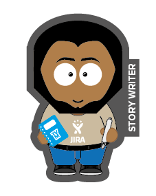</h5>
<h5><strong>A sztoriíró (Story Writer)</strong></h5>
<p>Könnyen felismerhetőek: görbe hát, szemek a képernyőn, kis betűméret és 14 lépéses sablon a Jirában. Elfogadási kritériumok, pipa. A fejlesztőkkel és stakeholderekkel való egyeztetése eredménye az update-elt sablon: „A részletek a ticketben találhatóak.”</p></div>
			</div><div class="et_pb_module et_pb_text et_pb_text_3  et_pb_text_align_left et_pb_bg_layout_light">
				
				
				
				
				<div class="et_pb_text_inner"><h5></h5></div>
			</div><div class="et_pb_module et_pb_text et_pb_text_4  et_pb_text_align_left et_pb_bg_layout_light">
				
				
				
				
				<div class="et_pb_text_inner"><h5>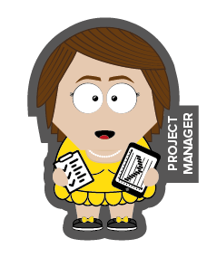</h5>
<h5><strong>A projektmenedzser (Project Manager)</strong></h5>
<p>Mindenki ismeri a Projektmenedzsert, akit gyakran a Kimenet Maximalizálónak is neveznek. Ez a PO lenyűgöző grafikonokat és időterveket mutat be a Jirában, mindent tud a sebességről és a valószínűségekről, a kimenet maximalizálása és az összes funkció szállítása a fő célja.</p></div>
			</div><div class="et_pb_module et_pb_text et_pb_text_5  et_pb_text_align_left et_pb_bg_layout_light">
				
				
				
				
				<div class="et_pb_text_inner"><h5></h5></div>
			</div><div class="et_pb_module et_pb_text et_pb_text_6  et_pb_text_align_left et_pb_bg_layout_light">
				
				
				
				
				<div class="et_pb_text_inner"><h5>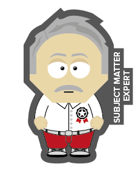</h5>
<h5><strong>A szakterületi szakértő (Subject Matter Expert)</strong></h5>
<p>&#8222;Hadd mutassam be, hogyan is működik ez.&#8221; Erről szól a szakterületi szakértő. Ők az üzleti szakértők, a tapasztalt felhasználók, az architectek, designerek vagy más szakterületen jártas emberek. Tisztában vannak minden részlettel és minden hibával a szoftverben vagy a rendszerben.</p></div>
			</div><div class="et_pb_module et_pb_text et_pb_text_7  et_pb_text_align_left et_pb_bg_layout_light">
				
				
				
				
				
			</div><div class="et_pb_module et_pb_text et_pb_text_8  et_pb_text_align_left et_pb_bg_layout_light">
				
				
				
				
				<div class="et_pb_text_inner"><h5>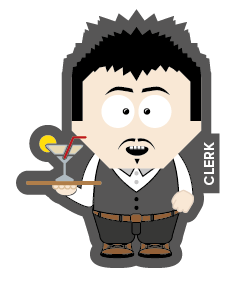</h5>
<h5><strong>Az irodista (Clerk)</strong></h5>
<p>&#8222;Természetesen, hozzáadhatjuk a backloghoz.&#8221; Ezek a szavak jellemzik leggyakrabban az Irodista típusú PO-t. Célja, hogy mindenkit kielégítsen, az ügyfelektől kezdve a stakeholdereken át a fejlesztői csapaton és a felhasználókon át. Azonban nem hoz döntéseket és nem kínál semmilyen víziót.</p></div>
			</div><div class="et_pb_module et_pb_text et_pb_text_9  et_pb_text_align_left et_pb_bg_layout_light">
				
				
				
				
				<div class="et_pb_text_inner"><h5></h5></div>
			</div><div class="et_pb_module et_pb_text et_pb_text_10  et_pb_text_align_left et_pb_bg_layout_light">
				
				
				
				
				<div class="et_pb_text_inner"><h5>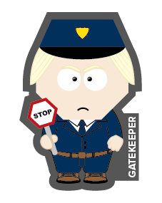</h5>
<h5><strong>A portás (Gatekeeper)</strong></h5>
<p> &#8222;Nézd, most nincs időm erre, csak olvasd el a tegnapi e-mailemet, és vedd le az első elemet a backlog tetejéről. Ezenkívül értesíts, amikor az első funkció kész van, hogy jóváhagyjam, rendben?&#8221; Ez az Portás; mindig ő az, akin át kell mennie mindennek.</p></div>
			</div><div class="et_pb_module et_pb_text et_pb_text_11  et_pb_text_align_left et_pb_bg_layout_light">
				
				
				
				
				
			</div><div class="et_pb_module et_pb_text et_pb_text_12  et_pb_text_align_left et_pb_bg_layout_light">
				
				
				
				
				<div class="et_pb_text_inner"><p></p>
<h5><strong>A menedzser (Manager)</strong></h5>
<p>&#8222;Szórakoztató, izgi, innovatív munkát végzel ma? Mindenki jól érzi ma magát? Hogyan érzed magad a teljesítményeddel kapcsolatban?&#8221; A Menedzser általában sok egyéni beszélgetést folytat a csapat minden tagjával.</p></div>
			</div><div class="et_pb_module et_pb_text et_pb_text_13  et_pb_text_align_left et_pb_bg_layout_light">
				
				
				
				
				
			</div><div class="et_pb_module et_pb_text et_pb_text_14  et_pb_text_align_left et_pb_bg_layout_light">
				
				
				
				
				<div class="et_pb_text_inner"><h3><span style="color: #d14345;">A kívánatos po típusok:</span></h3>
<p><span>Ha a product owneri munkában félreértések vagy nem kívánatos dolgok történhetnek, akkor természetesen vannak kívánatos szerepek is! A konstruktív, pozitív és értékes PO szerepek, amiket a sikeresek gyakorolnak. Lássuk hát a kívánatos szerepeket:</span></p></div>
			</div><div class="et_pb_module et_pb_text et_pb_text_15  et_pb_text_align_left et_pb_bg_layout_light">
				
				
				
				
				<div class="et_pb_text_inner"><h5>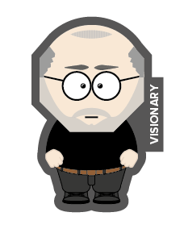</h5>
<h5><strong>A vízionárius (Visionary)</strong></h5>
<p>A Vízionárius tisztán kommunikálja a termékvíziót, a stratégiát, az üzleti célokat és az összes releváns fél céljait. A vízionárius PO hajlamos a jövőre és a status quo megváltoztatására fókuszálni, miközben segít másoknak, hogy milyenek lehetnének, ahelyett, amilyenek most. </p></div>
			</div><div class="et_pb_module et_pb_text et_pb_text_16  et_pb_text_align_left et_pb_bg_layout_light">
				
				
				
				
				
			</div><div class="et_pb_module et_pb_text et_pb_text_17  et_pb_text_align_left et_pb_bg_layout_light">
				
				
				
				
				<div class="et_pb_text_inner"><h5>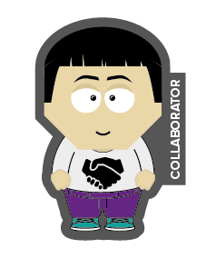</h5>
<h5><strong>Az együttműködő (Collaborator)</strong></h5>
<p> Az Együttműködő, aki szorosan együttműködik a különféle érdekelt felekkel és a Scrum csapat(ok)kal. Az együttműködő PO általában támogatja az embereket saját felfedezési folyamatukban, legyen szó céljaik meghatározásáról, product backlog elemek tisztázásáról vagy az ügyfelek igényeinek elemzéséről.</p></div>
			</div><div class="et_pb_module et_pb_text et_pb_text_18  et_pb_text_align_left et_pb_bg_layout_light">
				
				
				
				
				
			</div><div class="et_pb_module et_pb_text et_pb_text_19  et_pb_text_align_left et_pb_bg_layout_light">
				
				
				
				
				<div class="et_pb_text_inner"><h5>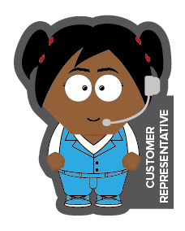</h5>
<h5><strong>Az ügyfélképviselő (Customer Representative)</strong></h5>
<p>Az Ügyfélképviselő arra összpontosít, hogy segítsen másoknak (a fejlesztőknek vagy másoknak) megérteni, mire van szükségük az ügyfeleknek, mik a kihívásaik, mik a fájdalmaik. Ebből az attitűdből a PO hajlamos elmagyarázni, hogy munkánk hogyan hat az ügyfelekre, a felhasználókra és az üzleti folyamatokra.</p></div>
			</div><div class="et_pb_module et_pb_text et_pb_text_20  et_pb_text_align_left et_pb_bg_layout_light">
				
				
				
				
				
			</div><div class="et_pb_module et_pb_text et_pb_text_21  et_pb_text_align_left et_pb_bg_layout_light">
				
				
				
				
				<div class="et_pb_text_inner"><h5>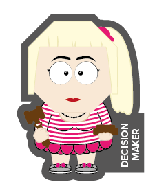</h5>
<h5><strong>A döntnök (Decision maker)</strong></h5>
<p>A Döntnök segíti az érintetteket és a Scrum csapatot abban, hogy röviden tartsák a döntéshozatali idő rövidítésével a piacra jutás idejét. Napi szinten kell meghozni a különféle döntéseket. Egyes döntések delegálhatók a Scrum csapatához vagy a stakeholderekhez, valamennyit pedig a PO-nak magának kell meghoznia.</p></div>
			</div><div class="et_pb_module et_pb_text et_pb_text_22  et_pb_text_align_left et_pb_bg_layout_light">
				
				
				
				
				
			</div><div class="et_pb_module et_pb_text et_pb_text_23  et_pb_text_align_left et_pb_bg_layout_light">
				
				
				
				
				<div class="et_pb_text_inner"><h5>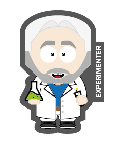</h5>
<h5><strong>A kísérletező (Experimenter)</strong></h5>
<p> A Kísérletező hipotézist állít fel, elmagyarázza, mi az, amit már tudunk és mi az, amit még nem. Az általunk végzett munkák nagy részét kísérletnek tekinti, nem pedig „kőbe vésett” munkacsomagnak. A Kísérletező megérti, hogy új dolgokat kell kipróbálni, felfedezni, újítani, és ezért: kísérletezik.</p></div>
			</div><div class="et_pb_module et_pb_text et_pb_text_24  et_pb_text_align_left et_pb_bg_layout_light">
				
				
				
				
				
			</div><div class="et_pb_module et_pb_text et_pb_text_25  et_pb_text_align_left et_pb_bg_layout_light">
				
				
				
				
				<div class="et_pb_text_inner"><h5>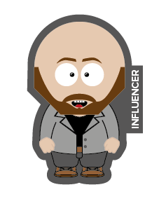</h5>
<h5><strong>A befolyásoló (Influencer)</strong></h5>
<p> A Befolyásoló az, aki segít a stakeholdereknek a termékvízió, stratégia, célok és célkitűzések köré igazodni. A stakeholderek és a Scrum csapat befolyásolása nehéz, de nagyon fontos munka. A Befolyásoló hatékony kommunikációs, tárgyalási és befolyásolási készségeket használ, hogy az emberek csatlakozzanak az ügyhöz.</p></div>
			</div><div class="et_pb_module et_pb_text et_pb_text_26  et_pb_text_align_left et_pb_bg_layout_light">
				
				
				
				
				
			</div><div class="et_pb_module et_pb_text et_pb_text_27  et_pb_text_align_left et_pb_bg_layout_light">
				
				
				
				
				<div class="et_pb_text_inner"><p>A product owner (PO) szerepe kiemelkedő fontosságú a Scrum folyamatban, és ahogy ebben a cikkben bemutattuk, számos különböző megközelítése létezik ennek a szerepkörnek. Az egyik legfontosabb üzenet, amit szeretnénk közvetíteni, az az, hogy a kívánatos PO típusok hozzájárulnak a sikeres termékfejlesztéshez.</p>
<p>Ezek a PO-k segítenek a fejlesztőknek, hogy jobban megértsék az ügyfelek igényeit, és felgyorsítsák a döntéshozatalt. Az ő munkájuk révén a termékvízió és a stratégia valósággá válik, és a termék valóban értéket hoz létre az ügyfelek és a vállalat számára. A fejlesztők és a PO-k közötti harmonikus együttműködés segítségével bármilyen csapat elérheti a termékfejlesztési sikerét, és új magasságokba emelkedhet a versenyképesség terén.</p>
<p>&nbsp;</p>
<p>Cikkünk a Scrum.org <span><a href="https://www.scrum.org/resources/blog/stances-product-owner" target="_blank" rel="noopener">Stances of the Product Owner</a> c. </span>cikke alapján készült.</p>
<p>&nbsp;</p></div>
			</div>
			</div>
				
				
				
				
			</div>
				
				
			</div><p>The post <a href="../a-felreertett-product-owner-tipusok/">A félreértett Product Owner típusok</a> first appeared on <a href="https://agiluu.hu">AGILUU</a>.</p>]]></content:encoded>
					
		
		
			</item>
		<item>
		<title>A SMART célok</title>
		<link>https://agiluu.hu/a-smart-celok/?utm_source=rss&#038;utm_medium=rss&#038;utm_campaign=a-smart-celok</link>
		
		<dc:creator><![CDATA[Mészáros-Nagy Éva]]></dc:creator>
		<pubDate>Thu, 08 Dec 2022 12:54:31 +0000</pubDate>
				<category><![CDATA[Agilitás az IT szektoron kívül]]></category>
		<category><![CDATA[agilis cég]]></category>
		<category><![CDATA[agilis csapat]]></category>
		<category><![CDATA[agilis fejlesztés]]></category>
		<category><![CDATA[agilis működés]]></category>
		<category><![CDATA[agilis szervezet]]></category>
		<category><![CDATA[agilis transzformáció]]></category>
		<category><![CDATA[agilis vezető]]></category>
		<category><![CDATA[cél]]></category>
		<category><![CDATA[célkijelölés]]></category>
		<category><![CDATA[célmeghatározás]]></category>
		<category><![CDATA[célok]]></category>
		<category><![CDATA[csapatmunka]]></category>
		<category><![CDATA[értekezlet]]></category>
		<category><![CDATA[karrier]]></category>
		<category><![CDATA[meeting]]></category>
		<category><![CDATA[megbeszélés]]></category>
		<category><![CDATA[munkahelyi bizalom]]></category>
		<category><![CDATA[munkakör]]></category>
		<category><![CDATA[progresszív cég]]></category>
		<category><![CDATA[progresszív szervezet]]></category>
		<category><![CDATA[smart]]></category>
		<category><![CDATA[smart cél]]></category>
		<category><![CDATA[smart célmeghatározás]]></category>
		<category><![CDATA[smart célok]]></category>
		<category><![CDATA[vállalati kultúra]]></category>
		<category><![CDATA[vezető]]></category>
		<guid isPermaLink="false">http://agiluu.hu/?p=10995</guid>

					<description><![CDATA[<p>Miért fontos, hogy a vezetők SMART célokat tűzzenek ki? Útmutató a SMART célok kidolgozásának folyamatához.</p>
<p>The post <a href="../a-smart-celok/">A SMART célok</a> first appeared on <a href="https://agiluu.hu">AGILUU</a>.</p>]]></description>
										<content:encoded><![CDATA[<div class="et_pb_section et_pb_section_1 et_section_regular" >
				
				
				
				
				
				
				<div class="et_pb_row et_pb_row_1">
				<div class="et_pb_column et_pb_column_4_4 et_pb_column_1  et_pb_css_mix_blend_mode_passthrough et-last-child">
				
				
				
				
				<div class="et_pb_module et_pb_text et_pb_text_28  et_pb_text_align_left et_pb_bg_layout_light">
				
				
				
				
				<div class="et_pb_text_inner"><p>Amikor nem sikerül elérnünk a céljainkat, elkeseredünk, majd jön a(z ön)hibáztatás, a csalódottság, a frusztráció és azon tűnődünk, hogy ez a cél egyáltalán reális volt-e. Könnyebb a tartós sikert megalapozni, ha világosan meghatározott céljaink vannak, amelyek a valóságon alapulnak. Ebben segíthetnek nekünk a SMART célok.</p></div>
			</div><div class="et_pb_module et_pb_text et_pb_text_29  et_pb_text_align_left et_pb_bg_layout_light">
				
				
				
				
				<div class="et_pb_text_inner"><h3><strong>Mik azok a SMART célok?</strong></h3>
<p>Nehezen érjük el a céljainkat, ha nincsenek konkrétumaink a siker meghatározásával kapcsolatban. A SMART célok egy konkrét kritériumrendszert használnak annak biztosítására, hogy a célok egyértelműen meghatározottak legyenek, és egy bizonyos időkereten belül teljesíthetőek legyenek. A SMART cél létrehozásának egyes lépésein végig haladva felfedheted azokat az eseteket, amikor a céljaid nincsenek világosan vannak megfogalmazva, és emiatt nem tud megvalósulni konkrét dolog.</p></div>
			</div><div class="et_pb_module et_pb_text et_pb_text_30  et_pb_text_align_left et_pb_bg_layout_light">
				
				
				
				
				<div class="et_pb_text_inner"><h6><span class="JsGRdQ">A </span><span style="color: #ff0000;"><strong><span class="JsGRdQ">SMART</span></strong></span><span class="JsGRdQ"> rövidítés jelentése:</span></h6>
<p><span class="JsGRdQ"></span></p>
<h6 class="_04xlpA direction-ltr align-start para-style-body" style="padding-left: 120px;"><span class="JsGRdQ">• </span><span style="color: #ff0000;"><strong><span class="JsGRdQ">S</span></strong></span><span class="JsGRdQ">pecific: konkrét</span></h6>
<h6 class="_04xlpA direction-ltr align-start para-style-body" style="padding-left: 120px;"><span class="JsGRdQ">• </span><span style="color: #ff0000;"><strong><span class="JsGRdQ">M</span></strong></span><span class="JsGRdQ">easurable: mérető</span></h6>
<h6 class="_04xlpA direction-ltr align-start para-style-body" style="padding-left: 120px;"><span class="JsGRdQ">• </span><span style="color: #ff0000;"><strong><span class="JsGRdQ">A</span></strong></span><span class="JsGRdQ">chievable: elérhető,</span></h6>
<h6 class="_04xlpA direction-ltr align-start para-style-body" style="padding-left: 120px;"><span class="JsGRdQ">• </span><strong><span class="JsGRdQ" style="color: #ff0000;">R</span></strong><span class="JsGRdQ">elevant: releváns</span></h6>
<h6 class="_04xlpA direction-ltr align-start para-style-body" style="padding-left: 120px;"><span class="JsGRdQ">• </span><strong><span class="JsGRdQ" style="color: #ff0000;">T</span></strong><span class="JsGRdQ">ime-based: időhöz kötött.</span></h6></div>
			</div><div class="et_pb_module et_pb_text et_pb_text_31  et_pb_text_align_left et_pb_bg_layout_light">
				
				
				
				
				<div class="et_pb_text_inner"><p>A SMART célmeghatározás egy bevált gyakorlati keret a célok kitűzésére. A cél kitűzésével már könnyen készíthetsz ütemtervet is egy adott célhoz.  Ennek a módszernek az elemei együtt dolgoznak egy gondosan és átgondoltan megtervezett, végrehajtható és nyomon követhető cél létrehozása érdekében.</p></div>
			</div><div class="et_pb_module et_pb_text et_pb_text_32  et_pb_text_align_left et_pb_bg_layout_light">
				
				
				
				
				<div class="et_pb_text_inner"><h3>Hogyan lehet a kevésbé konkrét célokat SMART célokká alakítani, és hogyan ültetheted be ezt a fajta gondolkodást a mindennapi munkádba?</h3>
<p>Az alábbi SMART célmeghatározó segédletben található támpontok és kérdések segítségével a széles körű célokat könnyedén le tudod bontani a SMART kritériumoknak megfelelően. Ezzel minden aspektusukban átgondolt célokat tudsz meghatározni, melyek elérése már nem fog lehetetlennek tűnni. Próbálj meg válaszolni a kritériumonként ajánlott kérdésekre, így a válaszaid segítségével már könnyen meg tudod fogalmazni az egyéni SMART céljaidat.</p></div>
			</div><div class="et_pb_module et_pb_text et_pb_text_33  et_pb_text_align_left et_pb_bg_layout_light">
				
				
				
				
				<div class="et_pb_text_inner"><h3><strong>SMART célmeghatározó eszköz – ingyenes minta Excel táblázat</strong></h3>
<p><span style="text-decoration: underline;"><strong></strong></span></p>
<p><span style="text-decoration: underline;"><strong><a href="../wp-content/uploads/2022/12/AGILUU-SMART-celmeghatarozas-MINTA-tablazat.xlsx" target="_blank" rel="noopener"><em>Letöltés Excel-ben</em></a></strong></span></p></div>
			</div><div class="et_pb_module et_pb_image et_pb_image_0">
				
				
				
				
				<a href="../wp-content/uploads/2022/12/AGILUU-SMART-celmeghatarozas-MINTA-tablazat.png" class="et_pb_lightbox_image" title=""><span class="et_pb_image_wrap "></span></a>
			</div><div class="et_pb_module et_pb_text et_pb_text_34  et_pb_text_align_left et_pb_bg_layout_light">
				
				
				
				
				<div class="et_pb_text_inner"><h3><strong>Példák SMART célokra</strong></h3>
<p>A példákban szereplő SMART célokat egy építészeti tervezőiroda ügyvezetője tűzte ki maga számára az elkövetkező időszakra:</p>
<p><strong>1. példa</strong></p>
<p><strong><span style="text-decoration: underline;"><a href="../wp-content/uploads/2022/12/Pelda-1.pdf" target="_blank" rel="noopener"><em>Letöltés PDF-ben</em></a></span></strong></p></div>
			</div><div class="et_pb_module et_pb_image et_pb_image_1">
				
				
				
				
				<a href="../wp-content/uploads/2022/12/SMART-pelda-1.png" class="et_pb_lightbox_image" title=""><span class="et_pb_image_wrap ">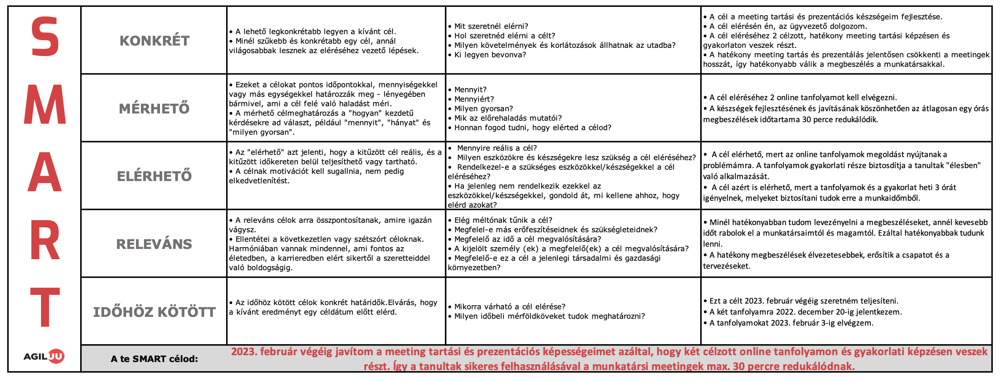</span></a>
			</div><div class="et_pb_module et_pb_text et_pb_text_35  et_pb_text_align_left et_pb_bg_layout_light">
				
				
				
				
				<div class="et_pb_text_inner"><p><strong>2. példa</strong></p>
<p><span style="text-decoration: underline;"><strong><a href="../wp-content/uploads/2022/12/SMART-pelda-2.pdf" target="_blank" rel="noopener"><em>Letöltés PDF-ben</em></a></strong></span></p></div>
			</div><div class="et_pb_module et_pb_image et_pb_image_2">
				
				
				
				
				<a href="../wp-content/uploads/2022/12/SMART-pelda-2.png" class="et_pb_lightbox_image" title=""><span class="et_pb_image_wrap ">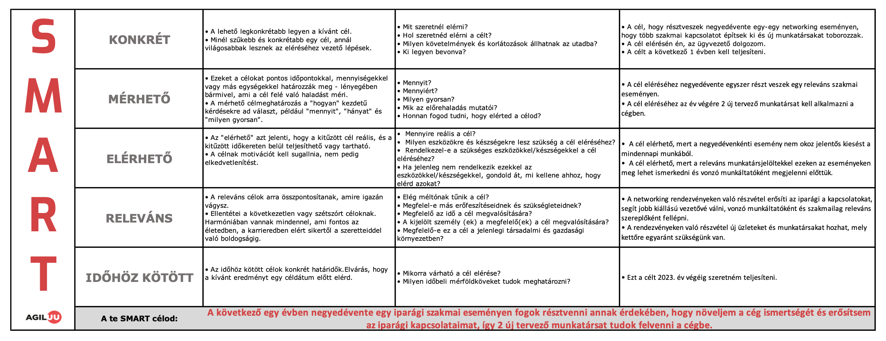</span></a>
			</div>
			</div>
				
				
				
				
			</div>
				
				
			</div><p>The post <a href="../a-smart-celok/">A SMART célok</a> first appeared on <a href="https://agiluu.hu">AGILUU</a>.</p>]]></content:encoded>
					
		
		
			</item>
		<item>
		<title>Kell egy csapat &#8211; könyvajánló</title>
		<link>https://agiluu.hu/kell-egy-csapat/?utm_source=rss&#038;utm_medium=rss&#038;utm_campaign=kell-egy-csapat</link>
		
		<dc:creator><![CDATA[Mészáros-Nagy Éva]]></dc:creator>
		<pubDate>Mon, 28 Nov 2022 11:39:16 +0000</pubDate>
				<category><![CDATA[Könyvajánló]]></category>
		<category><![CDATA[A sikeres együttműködés 5 akadálya]]></category>
		<category><![CDATA[agilis csapat]]></category>
		<category><![CDATA[csapat]]></category>
		<category><![CDATA[csapat kultúra]]></category>
		<category><![CDATA[csapatmunka]]></category>
		<category><![CDATA[csapattag]]></category>
		<category><![CDATA[csapattagok]]></category>
		<category><![CDATA[együttműködés]]></category>
		<category><![CDATA[felsővezetés]]></category>
		<category><![CDATA[hvg könyvek]]></category>
		<category><![CDATA[kell egy csapat]]></category>
		<category><![CDATA[könyvajánló]]></category>
		<category><![CDATA[Lencioni]]></category>
		<category><![CDATA[menedzsment]]></category>
		<category><![CDATA[Patrick Lencioni]]></category>
		<guid isPermaLink="false">http://agiluu.hu/?p=10968</guid>

					<description><![CDATA[<p>A könyv egy „tanmese”, amely egy fiktív üzleti helyzeten keresztül magyarázza el, hogyan lehet csapatokat bevonni, elkötelezettségüket növelni és biztosítani céljaik elérése érdekében. A történet tanulsága, hogy a szervezeteknek azért nem sikerül megvalósítaniuk a sikeres csapatmunkát, mert tudtukon kívül öt természetes, de veszélyes akadályba ütköznek.</p>
<p>The post <a href="../kell-egy-csapat/">Kell egy csapat – könyvajánló</a> first appeared on <a href="https://agiluu.hu">AGILUU</a>.</p>]]></description>
										<content:encoded><![CDATA[<div class="et_pb_section et_pb_section_2 jobol-kivalo-konyvajanlo et_section_regular" >
				
				
				
				
				
				
				<div class="et_pb_row et_pb_row_2">
				<div class="et_pb_column et_pb_column_4_4 et_pb_column_2  et_pb_css_mix_blend_mode_passthrough et-last-child">
				
				
				
				
				<div class="et_pb_module et_pb_text et_pb_text_36  et_pb_text_align_left et_pb_bg_layout_light">
				
				
				
				
				<div class="et_pb_text_inner"><p><strong>Kevés történetszerű elmesélést lehet hallani konkrét csapatokról, pedig meggyőződésem, hogy a csapatdinamika &#8222;sava-borsa&#8221; leginkább ilyen húsvér történeteken keresztül ismerhető meg igazán és emberien. </strong></p>
<p><strong>A &#8222;Kell egy csapat&#8221; c. könyv egy régi klasszikus, ami elültette bennem annak a gondolatnak a magját, hogy a csapattal mint egész is törődni szükséges, és nem elégséges csupán az egyes egyének szintjén foglalkozni vele. (No, persze, aki szociálpszichológiát tanult, az ezen egyáltalán nem lepődik meg.) </strong><strong style="font-size: 16px;">Igaz, a könyv egy kitalált történet ír le, de így is hitelesen átjön belőle, hogy milyen az a légkör, ami bomlaszt és milyen az, ami, épít egy csapatot.</strong></p>
<p><strong>Amennyiben felkeltette neked is az érdeklődésedet a könyv, arra biztatlak, hogy olvasd el te is. </strong></p></div>
			</div>
			</div>
				
				
				
				
			</div><div class="et_pb_row et_pb_row_3">
				<div class="et_pb_column et_pb_column_4_4 et_pb_column_3  et_pb_css_mix_blend_mode_passthrough et-last-child">
				
				
				
				
				<div class="et_pb_module et_pb_text et_pb_text_37  et_pb_text_align_left et_pb_bg_layout_light">
				
				
				
				
				<div class="et_pb_text_inner"><p style="text-align: center;">Itt tudod megvásárolni a kiadótól:  <a href="https://hvgkonyvek.hu/konyv/kell-egy-csapat" target="_blank" rel="noopener noreferrer">https://hvgkonyvek.hu/konyv/kell-egy-csapat</a></p></div>
			</div>
			</div>
				
				
				
				
			</div><div class="et_pb_row et_pb_row_4">
				<div class="et_pb_column et_pb_column_4_4 et_pb_column_4  et_pb_css_mix_blend_mode_passthrough et-last-child">
				
				
				
				
				<div class="et_pb_module et_pb_text et_pb_text_38  et_pb_text_align_left et_pb_bg_layout_light">
				
				
				
				
				<div class="et_pb_text_inner"><h2>PATRICK LENCIONI: KELL EGY CSAPAT – A sikeres együttműködés 5 akadálya</h2>
<p><strong>Összegzés három mondatban:</strong></p>
<p>A könyv egy „tanmese”, amely egy fiktív üzleti helyzeten keresztül magyarázza el, hogyan lehet csapatokat bevonni, elkötelezettségüket növelni és biztosítani céljaik elérése érdekében. A történet tanulsága, hogy a szervezeteknek azért nem sikerül megvalósítaniuk a sikeres csapatmunkát, mert tudtukon kívül öt természetes, de veszélyes akadályba ütköznek. Ezek a: 1. bizalom hiánya, 2. félelem a konfliktusoktól, 3. elkötelezettség hiánya, 4. számonkérés kerülése, 5. eredmények elhanyagolása.</p>
<h4><span style="color: #d14345;"><strong></strong></span></h4>
<p><span style="color: #d14345;"><strong>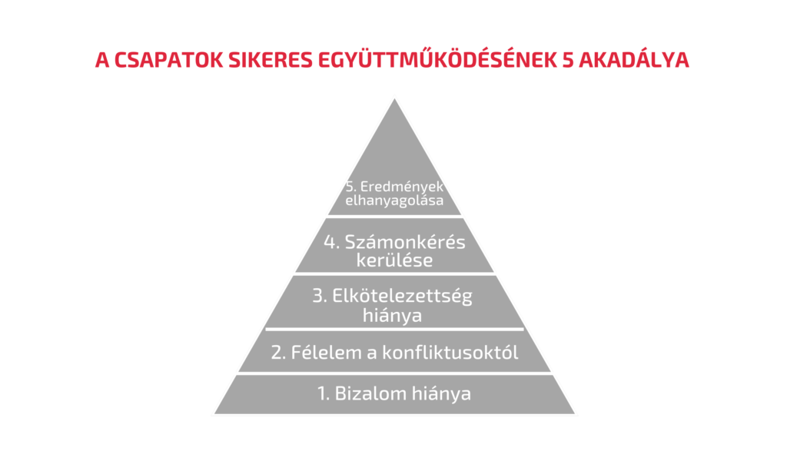</strong></span></p>
<p><span style="color: #d14345;"><strong></strong></span></p>
<h4><span style="color: #d14345;"><strong>Összegzés</strong></span></h4>
<ul>
<li>Lencioni, a könyv szerzője egy kitalált történetben mesél egy vezetőről, aki egy vállalat vezetésére és egy zökkenőmentesen működő vezetői csapat létrehozására törekszik. Megismerhetjük a szereplőket, és részt vehetünk az üzleti döntéseikben.</li>
<li>A történet szerint a Decision Tech nevezetű vállalat új vezérigazgatója, Kathryn Peterson megpróbál megbirkózni a káoszos körülmények között működő felsővezetői csapattal. Értékes leckéket tanul, miközben egy működőképes csapatot hoz létre.</li>
<li>Lencioni a történet előrehaladtával öt akadályt azonosít, melyekkel minden csapatnak meg kell küzdenie: a bizalom hiánya, félelem a konfliktusoktól, elkötelezettség hiánya, számonkérés kerülése és az eredmények elhanyagolása.</li>
<li>A vállalatoknak azért nem sikerül beindítaniuk és működtetniük a sikeres csapatmunkát, mert tudtukon kívül ennek az öt természetes, de veszélyes akadálynak esnek áldozatul.</li>
<li>A sikeresen működő csapatok tagjai megbíznak egymásban, fenntartások és düh nélkül vitatkoznak, és megvitatnak minden kérdést. Döntéseket hoznak, és elhatározzák, hogy a tervek szerint cselekednek. Ezen kívül számonkérik egymást, és a célt tartják szem előtt: a csapat céljainak elérését.</li>
<li>A csapatmunka romlik, ha akár csak egyetlen diszfunkciónak is teret enged a csapat.</li>
<li><strong>1. akadály: A bizalom hiánya.</strong> Lencioni azt mondja, hogy a csapatok esetében a bizalom azt jelenti, hogy bízunk abban, hogy minden tagnak jó szándékai vannak. A bizalom nem a csapattársak teljesítményébe vetett bizalmat jelenti, hanem bizalom abban, hogy a csapattársak nem fognak kést szúrni egymás hátába. Ha a csapattagok megbíznak egymásban, akkor a feladatra koncentrálhatnak anélkül, hogy azon aggódnának, éppen milyen játszma bontakozik ki.</li>
<li>A bizalmat azért nehéz elérni üzleti környezetben, mert az üzleti élet arra tanítja az embereket, hogy versenyezzenek egymással és csak a merész, sebezhetetlen arcukat mutassák.</li>
<li>A bizalom hiánya a piramis alapja. Ez egy olyan akadály, amelyből az összes többi csapatprobléma származik. Emiatt, ha a többi akadályt sikerül is elhárítani, a csapat még diszfunkcionális marad.</li>
<li><strong>2. akadály: Félelem a konfliktusoktól</strong>. Lencioni szerint a konfliktusok szükséges jók, nem pedig szükséges rosszak. Nagy különbség van a jó és a rossz konfrontációk között. A jó konfliktusok őszinték, nyíltak és célorientáltak, míg a rosszak az egóért vagy politikai előnyökért folytatott versenyek.</li>
<li>A szerző azt tanácsolja, hogy tanítsunk meg mindenkit elfogadni, hogy a konfrontáció és a konfliktus szükséges és produktívan kezelhető.</li>
<li><strong>3. akadály: Az elkötelezettség hiánya. </strong>A csapatok akkor hatékonyak, ha minden tag megérti, támogatja és elkötelezi magát a csapat elismert céljai mellett.</li>
<li>Az elkötelezettség előmozdítása érdekében a szerző azt ajánlja, hogy a döntéseket a csapatok konszenzussal hozzák meg, halogatás helyett válasszanak egyértelmű döntést, minden megbeszélést zárjanak le az aznapi döntések összegzésével, határozzanak meg és tartsák be a határidőket, használjanak forgatókönyveket a legjobb és legrosszabb esetek elképzelésére.</li>
<li><strong>4. akadály: Számonkérés kerülése. </strong>A csapattagok kényelmetlenül érzik magukat, ha valaki közülük nem tartja magát a kötelezettségvállalásához, és ők nem mutatnak rá a problémára, hiányosságra annak felelősénél. Emiatt a csapat megreked és nem tud fejlődni. Előfordulhat, hogy egy csapattag nem tud a problémáról, és visszajelzésre van szüksége a csapat többi tagjától. Megfelelően irányítva és kifejezve a csapatnyomás a támogatás és a bátorítás forrása lehet.</li>
<li>Lencioni szerint a számonkérés kialakítása magában foglalja a célok és a felelősségek egyértelművé tételét, a teljesítmény motiválására az előrehaladás értékelését és jelentéseket, egy olyan légkör létrehozását, ahol a csapattagok elszámoltathatják egymást, és csapatalapú, nem pedig egyéni jutalmakat kínál.</li>
<li><strong>5. akadály: Eredmények elhanyagolása</strong>. Az emberek természetükből adódóan hajlamosak saját szükségleteiket (ego, karrierfejlesztés, elismerés stb.) a csapat kollektív céljai elé helyezni, így nagyobb jelentőséget tulajdonítanak az egyéni sikereiknek a csapatsikerekkel szemben. Amikor a tagok nem a csapat céljait követik, vagy a csapat céljai helyett a személyes célokra összpontosítanak, a csapat nem tud jól teljesíteni. A teljesítmény javítása érdekében a csapattagoknak nyilvánosan el kell kötelezniük magukat a csapat céljai mellett.</li>
<li>A szerző azt tanácsolja, hogy segítsük a csapattagokat abban, hogy a csapat céljaira összpontosítsanak, tegyük nyilvánossá az eredményeket, és kössük a jutalmakat ezekhez az eredményekhez. Azt javasolja, hogy amikor a csapat eléri a céljait, fizessenek nekik bónuszt, és jutalmazzák meg őket jól. Lencioni azonban szigorúan ragaszkodik ahhoz, hogy soha ne jutalmazzuk meg azt a csapatot, amelyik nem éri el a céljait.</li>
<li>Patrick Lencioni könyvének üzenete egyszerű és könnyen érthető, ugyanakkor hihetetlenül erőteljes. Olyan kérdések állnak középpontban, amelyekkel a legtöbb vezető szembesül a munkája során. A szerző nem mondja meg, hogy mit kell tenni, mint sok más menedzsmenttel foglalkozó könyv. Ehelyett arra összpontosít, hogy milyennek kellene lennünk, ha csapatban dolgozunk. Történet egy vezetői csapat küzdelmeiről a működő csapatmunkáért, arról, hogy milyen öt akadályt kell leküzdeniük, hogy kivételessé és hatékonnyá váljanak.</li>
</ul></div>
			</div>
			</div>
				
				
				
				
			</div>
				
				
			</div><p>The post <a href="../kell-egy-csapat/">Kell egy csapat – könyvajánló</a> first appeared on <a href="https://agiluu.hu">AGILUU</a>.</p>]]></content:encoded>
					
		
		
			</item>
		<item>
		<title>Az első agilis élményem 2. rész &#8211; A siker mélyebb okai &#8211; a csapat</title>
		<link>https://agiluu.hu/az-elso-agilis-elmenyem-2-resz/?utm_source=rss&#038;utm_medium=rss&#038;utm_campaign=az-elso-agilis-elmenyem-2-resz</link>
		
		<dc:creator><![CDATA[Marhefka István]]></dc:creator>
		<pubDate>Wed, 09 Nov 2022 10:48:32 +0000</pubDate>
				<category><![CDATA[Agilis szoftverfejlesztés]]></category>
		<category><![CDATA[agilis alapelvek]]></category>
		<category><![CDATA[agilis kultúra]]></category>
		<category><![CDATA[agilis szoftverfejlesztés]]></category>
		<category><![CDATA[cd]]></category>
		<category><![CDATA[CI]]></category>
		<category><![CDATA[commit]]></category>
		<category><![CDATA[continuous delivery]]></category>
		<category><![CDATA[continuous deployment]]></category>
		<category><![CDATA[continuous improvement]]></category>
		<category><![CDATA[DevOps]]></category>
		<category><![CDATA[DevOps-kultúra]]></category>
		<category><![CDATA[fejlesztő csapat]]></category>
		<category><![CDATA[folyamatos fejlődés]]></category>
		<category><![CDATA[high-performing]]></category>
		<category><![CDATA[high-performing csapat]]></category>
		<category><![CDATA[lean kultúra]]></category>
		<category><![CDATA[master branch]]></category>
		<category><![CDATA[potentially shippable product]]></category>
		<category><![CDATA[release]]></category>
		<category><![CDATA[release-adás]]></category>
		<category><![CDATA[release-tervezés]]></category>
		<category><![CDATA[SCRUM]]></category>
		<category><![CDATA[szoftver fejlesztés]]></category>
		<category><![CDATA[TDD]]></category>
		<category><![CDATA[ticketing]]></category>
		<category><![CDATA[ticketing rendszer]]></category>
		<category><![CDATA[Trunk-based development]]></category>
		<guid isPermaLink="false">http://agiluu.hu/?p=10841</guid>

					<description><![CDATA[]]></description>
										<content:encoded><![CDATA[<div class="et_pb_section et_pb_section_3 et_section_regular" >
				
				
				
				
				
				
				<div class="et_pb_row et_pb_row_5">
				<div class="et_pb_column et_pb_column_4_4 et_pb_column_5  et_pb_css_mix_blend_mode_passthrough et-last-child">
				
				
				
				
				<div class="et_pb_module et_pb_text et_pb_text_39  et_pb_text_align_left et_pb_bg_layout_light">
				
				
				
				
				<div class="et_pb_text_inner"><p><span>Az első agilis élményem 2007-2010-re datálódik vissza, amikor a Synergonnál dolgoztam senior fejlesztőként/vezető fejlesztőként. A Honvédelmi Minisztérium megbízásából dolgoztunk egy iratkezelő szoftver kifejlesztésén, ami képes volt a teljes Magyar Honvédség igényeit kiszolgálni.</span><span> </span></p>
<p><span>Ebben a kétrészes cikksorozatban ezt az élményt szeretném megosztani mindenkivel, aki érdeklődik más agilis élményei iránt.</span><span> </span></p>
<p><span>Az </span><a href="../az-elso-agilis-elmenyem-1-resz">első rész a projekt történetét</a><span> írta le, ez, a második rész pedig a csapatunk belső világáról ír.</span></p>
<p>Sokat gondolkoztam az évek során, hogy mi volt a sikere a mi csapatunknak. Bizonyos dolgok láthatóak (szervezeti támogatás, módszerek, keretek, backlog, ügyféllel való kapcsolat), de a csapat sajátságos belső összetétele és dinamikája csakis a belső tagok számára volt ismert.</p>
<p>A Scrum Guide három szerepkört említ: a Product Ownert, a Scrum mastert és magát a csapatot. Én úgy gondolom, hogy túl nagy fókusz van a csapaton és ehhez képest pedig kevés az egyéneken, pedig enélkül szerintem nem lehet siker. A világban futó agilis kezdeményezések kapcsán is azt látom, hogy keveset foglalkoznak az egyéni szinttel, sokkal többet a csapattal vagy a szervezeti szinttel.</p>
<p>Pedig ha nincs válaszunk arra, hogy mitől fognak tudni egy csapatban az egyéni képességek érvényesülni és az egyéni igények kielégítésre kerülni, és az egészből hogyan lesz valami, ami képes a valós teljesítményre is, akkor szervezeti szinten sem lehet várni a sikert az agilitástól.</p>
<p>A mi esetünkben azt mondhatom, hogy Csuti nagyon jól összeválogatta a csapatot. Volt pár kulcskompetencia, ami szükséges volt a sikerhez, illetve a csapaton belül is volt olyan kémia a tagok között, amit már meglévő baráti- és korábbi munkakapcsolatok is megalapoztak. Fontosnak tartom, hogy ezekről is külön meséljek, talán nem veszi senki rossz néven a csapatból. Előre elnézést kérek azoktól, akik ugyanúgy hozzájárultak az iktató sikeréhez, de nem szerepelnek a listában (beleértve a menedzsment tagjait és az első csapat tagjait is, vagy bárkit aki részt vett a projektben).</p></div>
			</div><div class="et_pb_module et_pb_text et_pb_text_40  et_pb_text_align_left et_pb_bg_layout_light">
				
				
				
				
				<div class="et_pb_text_inner"><p></p></div>
			</div><div class="et_pb_module et_pb_text et_pb_text_41  et_pb_text_align_left et_pb_bg_layout_light">
				
				
				
				
				<div class="et_pb_text_inner"><p><strong>Csuti.</strong> Róla már meséltem, ő lett a Scrum masterünk. Nagyon jó volt, hogy ő a divíziómenedzsment tagja is volt. Ha nekünk volt valami panaszunk (nevezzük impedimentnek), akkor ő azt meghallgatta, és igyekezett elérni a menedzsmentnél vagy akár az ügyfélnél is a kívánt változást, ha az nem csapaton belüli probléma volt. Talán furcsa, hogy a Scrum master az ügyféllel is kapcsolatot tarthat, valójában egyáltalán nem volt furcsa, hiszen az ügyféllel több szálon is kellett a kapcsolatot tartani: volt szakmai szint, amin jórészt a csapat “utazott”, és volt a menedzsment szint, ahol a pénzügyi megállapodások is születtek. Csutinak jó érzéke volt ahhoz is, hogy összefogjon egy maroknyi kreatív embert, hogy azok az idő kereteken belül értelmes eredményekre jussanak.</p>
<p><strong>Endre.</strong> Ő volt a titkos fegyverünk, és egyben a rangidős közöttünk. A honvédségtől, az ügyfél oldalról igazolta át a Synergonhoz a menedzsment. Endre korábban vezetőként dolgozott a honvédségnél, ismerte az egész szervezetet, és egy időben az iratkezelésért is felelős volt az egyik katonai szervezetben. Az első iktató egyik fontos tanulsága az volt, hogy komplex az üzleti domain (maga a nyelv, a jogszabályok és a sok egyéb szabály), mi pedig (Synergon) nem vagyunk ennek szakértői. Endre szerepe kulcsfontosságú volt a sikerben, mert így házon belül nagyon sokat tudtunk beszélgetni, hogy egy-egy fogalom tulajdonképpen mit is jelent, hogyan zajlanak a valóságban bizonyos dolgok, amiket mi az íróasztal mögül nem tudunk elképzelni. Endre jelenléte üzleti szakértőként kulcsfontosságú volt: nem csupán gyorsította a csapat tanulását és a tervezést, egyszerűen elengedhetetlen volt, hogy a teljes csapat megértse az üzleti domaint. Vele együtt terveztük meg a folyamatokat, a képernyőket, a teljes működést, és ő részt is vett az elkészült funkciók validálásában és verifikálásában is. Egy igazi kincs volt ő.</p>
<p><strong>Kristóf. </strong>Külsős senior fejlesztőként (architectként) vette be Csuti a csapatba. Akkor ez nekünk rosszul esett, mert azt éreztük, hogy nem bíznak bennünk, hogy technológiailag képesek vagyunk megvalósítani a projektet (legalábbis én így éltem meg, a többiek nem biztos). Kristóf hozta be a csapatba a Spring frameworköt (2007-ről beszélünk), a Domain Driven Designt, a TDD és a Hibernate gyakorlatát, a POJO fejlesztést, és az egész lightweight szemléletet az architektúrában. Előtte mindenféle alkalmazásszerverekkel kínlódtunk. Kristóf volt azért a felelős, hogy skálázható rendszert építsünk a végén, és ezen technológiák/módszerek ennek (is) voltak az eszközei. Kristóf ugyanúgy produktív munkát végzett, és napi szinten kódolt a csapatban. Konfrontatív stílusával és szilárd rendszerszemléletével mindig a technológiailag jobb irányba terelt minket, amit én nem mindig viseltem könnyen, de utólag be kellett látnom, hogy sok mindenben volt neki igaza.</p>
<p><strong>István (én).</strong> Vezető fejlesztőként kerültem a csapatba, de tulajdonképpen úgy alakult, hogy én voltam az, aki Endrével nagyon sokat dolgozott párban, hogy felfedezzük az üzleti domaint, rájöjjünk, mi fontos és mi nem a szoftver szempontjából, és ezeket a leszűrt információkat a csapatnak is átadjuk. Mai terminológiával nézve üzleti elemzőként funkcionáltam, de egyben kódoltam is fejlesztőként. Számomra nagyon fontos volt, hogy tiszta fogalmakkal operáljunk, így kompromisszummentesen mentem utána Endrével egy-egy fogalom letisztázásának. Ezeket a fogalmakat aztán következetesen a kódban is használtuk, így kialakulhatott a Domain Driven Design szerinti “mindent átható nyelv” (Ubiquituous Language). Egy nyelvet használtunk az ügyféllel, a csapatban, a felhasználói felületen, a kódban, de még az adatbázisban is (vagy legalábbis törekedtünk rá). Sokáig nem tudtam, de a Product Onwer szerepkört is én vittem, mert valahogy nekem volt “ingerenciám” a leginkább arra, hogy lássuk, hogy hogy is fog megvalósulni a rendszerünk, milyen feature-ök egymás utáni fejlesztésén keresztül, ergó a product backlogért is én feleltem. Ebbe azért a többiek is nagyon be voltak vonva, Endre is, az ügyfél is és a teljes csapat. Az ügyféllel sokat egyeztettünk szakmai szinteken sprintek közben is, és a demókon is ott voltak, és visszajelzést adtak. Nem éreztem úgy, hogy formálisan nekem kellene az egészet irányítani mint PO, természetesen működött a dolog. Endrének is voltak személyes kapcsolatai a volt kollégáival, Csuti is ápolta a kapcsolatot menedzsment szinten, így a PO szerepben (amit nem tudatosan vittem) itt is erősen kiegészítettek. Ja, és én is ugyanúgy dolgoztam a kódon, leginkább a backenden.</p>
<p><strong>Laci</strong>. Ő is vezető fejlesztő volt, úgy mint én. Ez fura, hiszen egy vezető fejlesztő szokott lenni egy csapatban. Mivel jóbarátok voltunk, tudtuk “tandemben” csinálni. A teljes technológiát Laci látta át, beleértve a frontendet és a backendet is, én inkább a backenden és az üzleti oldalon (mint BA/PO) funkcionáltam. Laci nagyon jól igyekezett harmonizálni a különböző fejlesztőktől érkező elvárásokat, a közös standardokat számonkérni (pl. UI-on komponenseket hozunk létre, és azokat újra felhasználjuk, vagy könyörtelenül clean code-ot írunk Javascriptben), és mentorálni a kezdő kollégákat. Kiállt a SmartClient Javascript UI technológia mellett, ami abban az időben még igen újszerűnek számított, és vastagkliens élményt hozott a böngészőkbe böngészőfüggetlenül (2007-ről beszélünk). Lacival mi barátok voltunk, kollégiumi szobatársak, és ez azért úgy gondolom, nagyban stabilizálta a csapat működését. Laci is &#8211; természetesen &#8211; ugyanúgy kódolt napi szinten.</p>
<p><strong>Zotyó. </strong>Fejlesztők közül ő volt közöttünk a rangidős, aki korábban megjárta a banki rendszerek bugyrait. Neki köszönhettük, hogy megtanultunk MS SQL-ben queryket írni, DB-t optimalizálni. Az elején naivan még azt hittük, hogy majd a Hibernate mellett nem kell ilyen “apró részletekkel” fogalkoznunk. Zotyó csípős humora nagyon jó indikáció volt arra, hogy ha valamilyen elképzelésünk nem találkozik a realitással. Így ő ezzel minket (vagy legalábbis engem) mindig arra kényszerített, hogy az ideák világából mihamarabb a realitás világába kerüljünk át.</p>
<p><strong>Kulcsi. </strong>Ő volt a UI/UX szakértőnk, aki ugyanúgy részt vett a domain megismerésében, amikor Endrével beszélgettem, vagy amikor a csapattal próbáltuk megérteni, mi “áll előttünk&#8221; épp. Abban az időben a UI/UX-nek nem volt még akkora irodalma. Kulcsi ösztönösen mindig érezte, milyen irányba lenne jó vinni a felületet, és mindig partner volt abban, hogy a fejlesztőkkel közösen (akik hozták a sok kivételt) újra gyúrja a felületeket, ha szükséges volt. Ez a folyamat különösen érdekes volt, hiszen balanszírozni kellett a különféle használati esetek között, és ehhez viszont jól kellett ismerni a leendő felhasználókat, ami Endrétől jött. Kulcsi pszichológusként sokszor volt “békítő&#8221; is a csapatban, a feszültségeket igyekezett elrendezni maga könnyed, de mégis felelősségre törő stílusában.</p>
<p><strong>Janó.</strong> Pályakezdőként dolgozott a Synergonnál, leginkább a smartclientes frontendet vitte, de a teljes stacket átlátta ő is. Janó is ugyanúgy teljes értékű csapattag volt, aki tehetségével és lelkesedésével részt vett a csapatmunkában. Partnere volt Lacinak abban, hogy a smartclientes felületek megfelelően legyenek kompensekre bontva, hogy újra felhasználhatóak legyenek részek, és hogy ne harapódzon el a kliens oldalon a káosz.</p>
<p><strong>Dani.</strong> Később került be a csapatba, gyakornokként. Ő is teljes értékű csapattag lett, kezdetben tesztelt, de aztán hamar felvette a fordulatszámot, és fejlesztői munkát végzett. Az ő onboardingjáról anno <span><a href="https://infokukac.com/2010/03/a-junior-fejleszto/" target="_blank" rel="noopener">írtam egy cikket </a>a régi blogomon, aminek stílusát már kissé szégyellem.</span></p>
<p><strong>Gyuri.</strong> Ő volt a tesztelőnk a csapatban. Kezdetben nem volt velünk, később került be. A csapat úgy érezte, hogy hasznos lenne, ha profi tesztelő is lenne a csapatban. Gyuri hozta ezt a vonalat, és segített nekünk a rendszerben megtalálni a hibákat elsősorban exploratory teszteléssel.</p>
<p>Azt hiszem, a többiek nevében is mondhatom, hogy mindannyian értékeltük a másik hozzáadott értékét a projekthez.</p>
<p>Nem volt kérdés, hogy ki miben járult hozzá a csapat sikeréhez.</p>
<p>A csapat adott közösen a terméknek nevet (Syrius volt a neve a piacon). Az ötlet ugyan a Csutié volt, de ez nem számított, mert mindenki magáénak érezte azt. A termék neve tovább erősítette a csapat identitását.</p>
<p>A projekt közben is, és utána is sokat beszélgettünk egymás között, hogy milyen szerencsés csapatfelállás is volt ez a miénk, és tulajdonképpen hogyan is sikerült ezt összehozni. A titkát őszintén szólva a mai napig nem sikerült megfejtenünk. De talán most azt mondanám, hogy mindenki dolgozott a kódon, és alapvetően megvalósult a collective code ownership és a tulajdonosi szemlélet is. A közös cél is fontos összetartó erő volt, ami rögtön az elején manifesztálódott abban, hogy mi azért vagyunk itt, hogy ezt a projektet sikerre vigyünk, és ezzel a Synergon becsületét is megmentsük.</p>
<p>Az is egy fontos elem volt, hogy Lacival mi barátok voltunk, és Zotyóval kiegészülve hármasban is dolgoztunk korábban már hosszabb ideig a Synergonban. Nagyon jó volt a teljes csapatban a kémia, a csapat törekedett a harmóniára, de voltak konfrontatív tagok is (Kristófra gondolok elsősorban &#x1f642;), ill. olyanok akik speciális tudást hoztak be (Zotyó, Kristóf, ill. üzleti oldalon Endre).</p>
<p>A nagyfokú átfedés a code ownershipen túl a különböző szerepkörök átfedésében is megfigyelhető. Talán furcsa lehet, hogy nincsenek vegytiszta szerepkörök (PO, tech lead, architect, BA, QA), de én úgy látom, hogy ez nagy előny volt, mert senki nem ragaszkodott a saját státuszához, és mindenki a saját képességeinek és motivációinak megfelelően tudott dolgozni.</p>
<p>Nagyon rugalmasnak látom ezt a generalista modellt, hiszen sikerült hátra hagynunk azt, hogy milyennek kellene lennünk a külső modellek alapján (te szoftverfejlesztő vagy, ő tesztelő, én meg BA), így nem skatulyáztuk be magunkat. Ezzel egyidejűleg pedig a csapat minden tagja produktív munkát végzett (architect is, BA is, tech lead is), de még az üzleti szakértő Endre is, hiszen ő a tesztelésben vett részt.</p>
<p>A csapatösszetartás annyira erős volt, hogy szabad időnkben is rendszeresen találkoztunk, és szokásunkká vált a szabadban főzés. Több főzőversenyen is szerepeltünk az évek alatt, de csak úgy,  spontán módon is főztünk, amikor úgy hozta kedvünk. Többen egymás esküvőjén is részt vettünk.</p>
<p>Megkértem a csapattagokat, hogy írjanak egy rövid visszaemlékezést, hogy ők hogy élték meg akkor a közös munkát és milyen hatása lett ennek a későbbi karrierjükre. Következzen ez a záró rész.</p></div>
			</div><div class="et_pb_module et_pb_text et_pb_text_42  et_pb_text_align_left et_pb_bg_layout_light">
				
				
				
				
				<div class="et_pb_text_inner"><p></p></div>
			</div><div class="et_pb_module et_pb_text et_pb_text_43  et_pb_text_align_left et_pb_bg_layout_light">
				
				
				
				
				<div class="et_pb_text_inner"><h3>Endre reflexiója (domain expert)</h3>
<p><strong>A legnagyobb tanulságról:</strong></p>
<p><strong>Az alkalmazásról:</strong></p>
<p>Lehet egy üzletileg szerteágazó, robosztus szoftvert fejleszteni úgy, hogy az nem csak a tanúsítás próbáját állja ki, hanem a felhasználók zömének elégedettségére támogatja azok mindennapi tevékenységét. A rugalmas változásmenedzsment lehetőségeit kihasználva a felhasználók javaslatai a folyamatokba rugalmasan beépíthetők, így a termék elfogadottsága magas szintet érhet el.</p>
<p><strong>A CSAPAT-ról:</strong></p>
<p>Itt szeretném megköszönni mindannyiótoknak, hogy ennek a CSAPAT-nak a tagja lehettem. Addig is hittem, hogy közösen jobb eredményt lehet elérni, de itt CSAPAT-ként, együtt bizonyítottuk be, hogy az elérendő cél (egy magas minőségű, az ügyfél igényeit magas szinten kielégítő szoftver fejlesztése) az agilis szoftverfejlesztés módszerének alkalmazásával sikeresen elérhető.</p>
<p><strong>A sikerről:</strong></p>
<p>Azok, akik részt vettek az iratkezelő rendszer fejlesztésében, majd annak bevezetésében, a szakterületüket magas szinten művelték, hittek a CSAPAT-ban, és a projekt sikerében.</p>
<p>A projekt működése során javaslataikkal hozzájárultak a belső folyamatok optimalizálásához.</p>
<p>A szoros határidők és a magas minőség csak a technológiai- és munkafegyelem szigorú betartásával volt elérhető, amelyet sikerült megvalósítanunk.</p>
<p>A közös munka során olyan bizalmi viszony alakult ki a megrendelői oldallal, amely biztosította a gyors információcserét, egyben a nyugodt munkavégzést.</p></div>
			</div>
			</div>
				
				
				
				
			</div><div class="et_pb_row et_pb_row_6">
				<div class="et_pb_column et_pb_column_4_4 et_pb_column_6  et_pb_css_mix_blend_mode_passthrough et-last-child">
				
				
				
				
				<div class="et_pb_module et_pb_text et_pb_text_44  et_pb_text_align_left et_pb_bg_layout_light">
				
				
				
				
				<div class="et_pb_text_inner"><h3>Kristóf reflexiója (architect)</h3>
<p><strong>Miért lett sikeres: </strong></p>
<p>Szerintem: a heterogén csapat összeállítás (ha nem is volt feltétlen tudatos) nagyon hatékonynak bizonyult. Többnyire fiatal, szakmailag erősen motivált, egymást kiegészítő tudású emberek gyűltek össze, de a csapat rangidősének tiszteletet parancsoló, szigorú fellépése és a Scrum master lelkes határozottsága is segített a csapat dinamikájának és egyensúlyának a kialakításában és fenntartásában.</p>
<p><strong>Legnagyobb tanulság: </strong></p>
<p>Az agilis módszertan működő, hatékony keretrendszert ad a termékfejlesztés jellegű projekthez, de nem a la carte (ami nem tetszik, azt nem kérem), ahogy a legtöbben kezelik mostanában.</p>
<p><strong>Hogyan járult hozzá a karrieremhez: </strong></p>
<p>Az egyik legkomplexebb sikeres projekt volt amit csináltam. Értsd: a többi vagy jóval egyszerűbb volt, vagy kevésbé sikeres 🙂</p></div>
			</div><div class="et_pb_module et_pb_text et_pb_text_45  et_pb_text_align_left et_pb_bg_layout_light">
				
				
				
				
				<div class="et_pb_text_inner"><h3>Dani reflexiója (gyakornok fejlesztő)</h3>
<p><strong>Mi volt az, ami számodra a legnagyobb tanulság volt a projektben?</strong></p>
<p>Milyen egy jó csapatban dolgozni, és sikeres projektben fejleszteni. Biztosan jobb alapot adott mint egy-két projekt ami azután jött.</p>
<p><strong>Miért lett ez a projekt sikeres szerinted?</strong></p>
<p>Szakmailag és emberileg is nagyon jó csapat, akiknek fontos volt az összetartás és a siker.</p>
<p><strong>Hogyan járult hozzá ez a projekt a szakmai karrieredhez?</strong></p>
<p>Mivel junior voltam ezért gyakorlatilag minden alapot itt tanultam meg, azt gondolom, hogy a lehető legjobb emberektől.</p></div>
			</div><div class="et_pb_module et_pb_text et_pb_text_46  et_pb_text_align_left et_pb_bg_layout_light">
				
				
				
				
				<div class="et_pb_text_inner"><h3>Csuti reflexiója (scrum master)</h3>
<p><strong>Mi volt az, ami számodra a legnagyobb tanulság volt a projektben?</strong></p>
<p>Ezen a kérdésen sokat gondolkodtam. A legnagyobb tanulság az volt, hogy bonyolult és &#8222;akadémikus&#8221; módszertanok helyett néhány egyszerű alapelvre koncentrálva meg lehet fordítani egy korábban vesztettnek látszó projektet. Utólag visszaemlékezve ezek az egyszerű alapelvek a következők voltak:</p>
<ul>
<li>Csak elkötelezett és tehetséges emberek legyenek a csapatban.</li>
<li>Legyen a csapatban valaki, aki jól érti az üzleti domaint.</li>
<li>A (projekt)vezető dolga hogy megteremtse azt a közeget és kiharcolja azokat a feltételeket, amiben az elkötelezett emberek együttműködni és dolgozni tudnak.</li>
<li>A rendszeres eredmények és a transzparencia a legcsalódottabb ügyfelet is újra partnerré teheti.</li>
</ul>
<p><strong>Miért lett ez a projekt sikeres szerinted?</strong></p>
<p>A fenti négy tényező és még két fontos ok miatt.</p>
<ul>
<li>Egy egyszerű agilis keretrendszert kezdtünk el alkalmazni, de azt a lehető legnagyobb fegyelemmel.</li>
<li>A csapat szabad kezet kapott a megvalósításban és teljes egészében erre a projektre koncentrálhatott.</li>
</ul>
<p><strong>Hogyan járult hozzá ez a projekt a szakmai karrieredhez?</strong></p>
<p>Ez a projekt alapozta meg azt a szakmai világképet (agilitás), amire az egész azt követő tanácsadói karrieremet építettem. Mivel minden szempontból hátrányos helyzetből indult a projekt (csalódott, tekintélyelvű, államigazgatási ügyfél számára külsősként fejlesztett alkalmazás) ezért számomra élő bizonyíték arra, hogy ha a megfelelő feltételek rendelkezésre állnak, akkor bármilyen környezetben lehet sikeres agilis fejlesztés megvalósítani.</p></div>
			</div><div class="et_pb_module et_pb_text et_pb_text_47  et_pb_text_align_left et_pb_bg_layout_light">
				
				
				
				
				<div class="et_pb_text_inner"><h3>Zotyó reflexiója (senior fejlesztő)</h3>
<p><strong>Mi volt az, ami számodra a legnagyobb tanulság volt a projektben?</strong></p>
<p>Milyen sokat számít és segít, ha a megrendelő ténylegesen bevonódik a projektbe a kezdetektől a végéig a megfelelő kulcsfelhasználókkal.</p>
<p>Illetve a közös nyelv fontossága.</p>
<p><strong>Miért lett ez a projekt sikeres szerinted?</strong></p>
<p>Három fő ok miatt:</p>
<ol>
<li>Scrum: a rendszeres demoknak köszönhetően azonnal visszajelzést kaptunk a megrendelőtől, hogy jó irányba haladunk-e.</li>
<li>Az egész fejlesztő csapat magáénak érezte a projektet és a teljes kódot. Az egyes fejlesztők nem csak arra az egy feladatra fókuszáltak amit éppen csináltak, hanem az egész projekt sikeressége lebegett a szemük előtt.</li>
<li>A megrendelő aktív részvétele a megfelelő kulcs felhasználókkal a teljes folyamatban. És valószínüleg ennek az aktív részvetelnek is köszönhetően ők is teljes erőbedobással dolgoztak, hogy sikeres legyen a projekt.</li>
</ol>
<p>A második (2.), ha nem is fontosabb mint az első (1.), de nehezebben érhető el, ezért ritkábban találkoztam ilyennel a 30+ éves pályafutásom alatt.</p>
<p><strong>Hogyan járult hozzá ez a projekt a szakmai karrieredhez?</strong></p>
<p>Nagyon sok technológiát ebben a projektben ismertem/tanultam meg.</p>
<p>De még hasznosabb és fontosabb volt, hogy itt tapasztaltam meg először az agilis módszert és azon belül a scrum keretrendszert élesben.</p>
<p>Aztóa sok scrumos projektben vettem részt, de egyikben sem sikerült ennyire jól adoptálni a scrum keretrendszert.</p>
<p>Legtöbbször a megrendelő aktív részvételét nem sikerült ilyen jól elérni.</p>
<p>Szinten ennek a projektnek köszönhetően vált mániámmá a közös nyelv kialakításának/megtanulásának fontossága. &#x1f609;</p></div>
			</div><div class="et_pb_module et_pb_text et_pb_text_48  et_pb_text_align_left et_pb_bg_layout_light">
				
				
				
				
				<div class="et_pb_text_inner"><h3>Janó reflexiója (junior fejlesztő)</h3>
<p><strong>Mi volt az, ami számodra a legnagyobb tanulság volt a projektben?</strong></p>
<p>Egy megfelelő tudással rendelkező, motivált csapat előtt nem léteznek akadályok.</p>
<p><strong>Miért lett ez a projekt sikeres szerinted?</strong></p>
<p>A projekt egyik nagy eredményének azt tartom, hogy egy időtálló megoldás koncepcióját sikerült kidolgozni szoros együttműködésben a megrendelővel.</p>
<p>A szerződéses, szervezeti és jogszabályi követelményeknek való megfelelésen túl sikerült egy olyan modellt közösen kialakítani, amelyben megjelentek az ügyfél valódi igényei is.</p>
<p>Ezáltal egy, a hétköznapokban is egyszerűen alkalmazható, felhasználóbarát megoldás jött létre.</p>
<p>(Ehhez az kellett, hogy Magyarországon az elsők között valósítottunk meg agilis szoftverfejlesztési projektet &#8211; helyesen.)</p>
<p><strong>Hogyan járult hozzá ez a projekt a szakmai karrieredhez?</strong></p>
<p>Hatalmas lehetőségként éltem meg, hogy részese lehettem a csapatnak, rövid idő alatt nagyon sokat tudtam fejlődni.</p>
<p>A kollégáim hagytak kibontakozni és még támogattak is abban, hogy megtaláljam a helyemet a szakmán belül.</p>
<p>A mentoraimtól kapott agilis gondolkodásmód felülírta bennem a szoftverfejlesztésről és szervezetek működéséről kialakított korai elképzeléseimet.</p></div>
			</div><div class="et_pb_module et_pb_text et_pb_text_49  et_pb_text_align_left et_pb_bg_layout_light">
				
				
				
				
				<div class="et_pb_text_inner"><h3>Kulcsi reflexiója (UI/UX expert)</h3>
<p>Kulcsi <span><a href="https://integralvision.eu/hu/blog/agilis-munkakultura-az-oselmeny" target="_blank" rel="noopener">külön cikket írt</a> saját megéléséről.</span></p></div>
			</div><div class="et_pb_module et_pb_text et_pb_text_50  et_pb_text_align_left et_pb_bg_layout_light">
				
				
				
				
				<div class="et_pb_text_inner"><h3>Laci reflexiója<span> (vezető fejlesztő)</span></h3>
<p><b>Mi volt az, ami számodra a legnagyobb tanulság volt a projektben?</b></p>
<p><span>Az informatikai projektek amikben addig szerepelnem kellett, többségében mind átláthatatlan, bonyolult technológiák, nem kevésbé átláthatatlan és bonyolult üzleti specifikációk kuszaságában folyt. </span><br /><span>A legnagyobb tanulság, hogy lehet ezt máshogy is csinálni. A scrum módszer helyes használatával, üzleti szakértő bevonásával, ligthweight technológiákat alkalmazva sikereket lehet elérni.</span></p>
<p><b>Miért lett ez a projekt sikeres szerinted?</b></p>
<p><span>A kivételes csapat miatt. Abban a szerencsés helyzetben voltam, hogy barátokkal dolgozhattam </span><br /><span>együtt, akik mellesleg rendkívül tehetségesek is. Üzleti domain specialista, az üzletet is érteni akaró tehetséges fejlesztők, és persze az ezt lehetővé tévő management és módszertan is kellett a sikerhez.</span></p>
<p><b>Hogyan járult hozzá ez a projekt a szakmai karrieredhez?</b></p>
<p><span>Rengeteget tanultam, tapasztaltam. A csapat fontossága, az agilis elvek, lightweight technológiák alkalmazása azóta is meghatározzák a karrierem. Itt igazán meg lehetett szeretni a szakmát. Szerencsések voltunk, hogy ilyen csapatban dolgozhattunk.</span></p></div>
			</div><div class="et_pb_module et_pb_text et_pb_text_51  et_pb_text_align_left et_pb_bg_layout_light">
				
				
				
				
				<div class="et_pb_text_inner"><h3>István reflexiója<span> (Vezető fejlesztő, Product Owner)</span></h3>
<p><strong>Mi volt az, ami számodra a legnagyobb tanulság volt a projektben?</strong></p>
<p>Ha hiszünk abban, hogy jól érdemes csak csinálni, akkor az eredmény is automatikusan jó lesz.</p>
<p><strong>Miért lett ez a projekt sikeres szerinted?</strong></p>
<p>Az ambíciózus, hozzáértő baráti csapat miatt, aki az ügyféllel is ki tudtak alakítani a bizalmat. Ehhez szükséges volt a menedzsment támogatása is.</p>
<p><strong>Hogyan járult hozzá ez a projekt a szakmai karrieredhez?</strong></p>
<ul>
<li>Elkezdtem blogolni (<span><a href="https://infokukac.com/" target="_blank" rel="noopener">infokukac.com</a>)</span></li>
<li>Soha többet nem dolgoztam nem agilis projektben. (Vagy ha igen, rövid idő után kiléptem, mert nem bírtam.)</li>
<li>Társalapítója lettem a <span><a href="https://be-novative.com/" target="_blank" rel="noopener">be-novative</a> nevű startupnak.</span></li>
<li>2010-ben kiadtuk Csutival a <span><a href="https://www.adaptiveconsulting.hu/wp-content/uploads/2015/09/KanbanEsScrum_MindkettobolALegjobbat.pdf" target="_blank" rel="noopener">Kanban és Scrum &#8211; mindkettőből a legjobbat</a> e-könyv magyar fordítását. Emiatt sokan megismerték a nevemet agilis körökben.</span></li>
<li>Az iratkezelő megalapozta a tanácsadói karrieremet, az agilitás egy biztos pont lett az életemben <span><a href="../">(agiluu.hu)</a></span></li>
</ul></div>
			</div><div class="et_pb_module et_pb_gallery et_pb_gallery_0  et_pb_bg_layout_light et_pb_gallery_grid">
				<div class="et_pb_gallery_items et_post_gallery clearfix" data-per_page="4"><div class="et_pb_gallery_item et_pb_grid_item et_pb_bg_layout_light et_pb_gallery_item_0_0"><div class="et_pb_gallery_image landscape">
					<a href="../wp-content/uploads/2022/11/PICT2022-scaled.jpg" title="Synergon csapat 4.">
					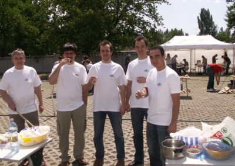
					<span class="et_overlay"></span>
				</a>
				</div></div><div class="et_pb_gallery_item et_pb_grid_item et_pb_bg_layout_light et_pb_gallery_item_0_1"><div class="et_pb_gallery_image landscape">
					<a href="../wp-content/uploads/2022/11/img_1723-scaled.jpg" title="Synergon csapat 3.">
					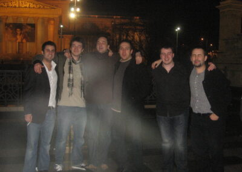
					<span class="et_overlay"></span>
				</a>
				</div></div><div class="et_pb_gallery_item et_pb_grid_item et_pb_bg_layout_light et_pb_gallery_item_0_2"><div class="et_pb_gallery_image landscape">
					<a href="../wp-content/uploads/2022/11/SDC10439-scaled.jpg" title="Synergon csapat 5.">
					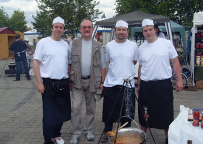
					<span class="et_overlay"></span>
				</a>
				</div></div><div class="et_pb_gallery_item et_pb_grid_item et_pb_bg_layout_light et_pb_gallery_item_0_3"><div class="et_pb_gallery_image landscape">
					<a href="../wp-content/uploads/2022/11/SDC10671-scaled.jpg" title="Synergon csapat 6.">
					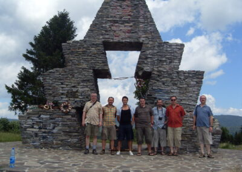
					<span class="et_overlay"></span>
				</a>
				</div></div><div class="et_pb_gallery_item et_pb_grid_item et_pb_bg_layout_light et_pb_gallery_item_0_4"><div class="et_pb_gallery_image landscape">
					<a href="../wp-content/uploads/2022/11/tank-82-scaled.jpg" title="Synergon csapat 7.">
					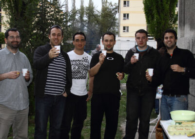
					<span class="et_overlay"></span>
				</a>
				</div></div><div class="et_pb_gallery_item et_pb_grid_item et_pb_bg_layout_light et_pb_gallery_item_0_5"><div class="et_pb_gallery_image landscape">
					<a href="../wp-content/uploads/2022/11/tank-83-scaled.jpg" title="Synergon csapat 8.">
					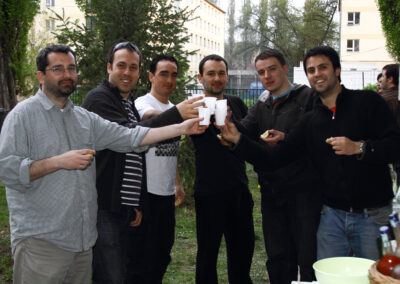
					<span class="et_overlay"></span>
				</a>
				</div></div><div class="et_pb_gallery_item et_pb_grid_item et_pb_bg_layout_light et_pb_gallery_item_0_6"><div class="et_pb_gallery_image landscape">
					<a href="../wp-content/uploads/2022/11/img_1696-scaled.jpg" title="Synergon csapat 2.">
					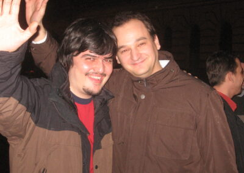
					<span class="et_overlay"></span>
				</a>
				</div></div><div class="et_pb_gallery_item et_pb_grid_item et_pb_bg_layout_light et_pb_gallery_item_0_7"><div class="et_pb_gallery_image landscape">
					<a href="../wp-content/uploads/2022/11/img_1688-scaled.jpg" title="Synergon csapat 1.">
					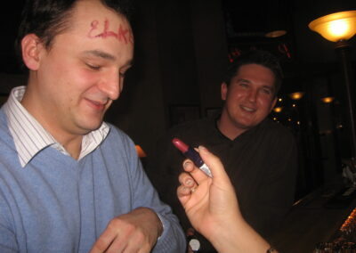
					<span class="et_overlay"></span>
				</a>
				</div></div></div><div class="et_pb_gallery_pagination"></div></div>
			</div>
				
				
				
				
			</div>
				
				
			</div><p>The post <a href="../az-elso-agilis-elmenyem-2-resz/">Az első agilis élményem 2. rész – A siker mélyebb okai – a csapat</a> first appeared on <a href="https://agiluu.hu">AGILUU</a>.</p>]]></content:encoded>
					
		
		
			</item>
		<item>
		<title>Az első agilis élményem &#8211; 1. rész</title>
		<link>https://agiluu.hu/az-elso-agilis-elmenyem-1-resz/?utm_source=rss&#038;utm_medium=rss&#038;utm_campaign=az-elso-agilis-elmenyem-1-resz</link>
		
		<dc:creator><![CDATA[Marhefka István]]></dc:creator>
		<pubDate>Mon, 07 Nov 2022 16:40:27 +0000</pubDate>
				<category><![CDATA[Agilis szoftverfejlesztés]]></category>
		<category><![CDATA[agilis alapelvek]]></category>
		<category><![CDATA[agilis kultúra]]></category>
		<category><![CDATA[agilis szoftverfejlesztés]]></category>
		<category><![CDATA[cd]]></category>
		<category><![CDATA[CI]]></category>
		<category><![CDATA[commit]]></category>
		<category><![CDATA[continuous delivery]]></category>
		<category><![CDATA[continuous deployment]]></category>
		<category><![CDATA[continuous improvement]]></category>
		<category><![CDATA[DevOps]]></category>
		<category><![CDATA[DevOps-kultúra]]></category>
		<category><![CDATA[fejlesztő csapat]]></category>
		<category><![CDATA[folyamatos fejlődés]]></category>
		<category><![CDATA[high-performing]]></category>
		<category><![CDATA[high-performing csapat]]></category>
		<category><![CDATA[lean kultúra]]></category>
		<category><![CDATA[master branch]]></category>
		<category><![CDATA[potentially shippable product]]></category>
		<category><![CDATA[release]]></category>
		<category><![CDATA[release-adás]]></category>
		<category><![CDATA[release-tervezés]]></category>
		<category><![CDATA[SCRUM]]></category>
		<category><![CDATA[szoftver fejlesztés]]></category>
		<category><![CDATA[TDD]]></category>
		<category><![CDATA[ticketing]]></category>
		<category><![CDATA[ticketing rendszer]]></category>
		<category><![CDATA[Trunk-based development]]></category>
		<guid isPermaLink="false">http://agiluu.hu/?p=10802</guid>

					<description><![CDATA[]]></description>
										<content:encoded><![CDATA[<div class="et_pb_section et_pb_section_4 et_section_regular" >
				
				
				
				
				
				
				<div class="et_pb_row et_pb_row_7">
				<div class="et_pb_column et_pb_column_4_4 et_pb_column_7  et_pb_css_mix_blend_mode_passthrough et-last-child">
				
				
				
				
				<div class="et_pb_module et_pb_text et_pb_text_52  et_pb_text_align_left et_pb_bg_layout_light">
				
				
				
				
				<div class="et_pb_text_inner"><p><strong>Ez egy kétrészes cikk, a <a href="../az-elso-agilis-elmenyem-2-resz">cikk második részét itt</a> olvashatod.</strong></p>
<p>Az első agilis élményem 2007-2010-re datálódik vissza, amikor a Synergonnál dolgoztam senior fejlesztőként/vezető fejlesztőként. A Honvédelmi Minisztérium megbízásából dolgoztunk egy iratkezelő szoftver kifejlesztésén, ami képes volt a teljes Magyar Honvédség igényeit kiszolgálni. A  3 éves fejlesztést (amíg én benne voltam) megelőzte egy korábbi csapat munkája, akik vízesés megközelítéssel dolgoztak, és akiknek a munkája sajnos kudarcba fulladt a megközelítésből származó rugalmatlan hozzáállásnak köszönhetően. Nekünk újra kellett kezdeni, új kódbázis, új csapat, új alapokra helyezve az ügyféllel való kapcsolatot, amiben agilis megközelítést alkalmaztunk.</p>
<p>Amikor mi bekapcsolódtunk, az ügyféllel már egy nagyon rossz viszony volt, ezen kellett változtatnunk. Mondhatjuk tehát, hogy az agilis szemléletmódot krízismenedzsmentre alkalmaztuk, bár ez akkor így nem tudatosult bennünk. Egyszerűen csak nem láttunk más lehetőséget az ügyféligények rugalmas kiszolgálására, mint azt, hogy oda figyelünk az ügyfélre és maximálisan megértjük őt, és inkrementális és iteratív metodológia mentén szállítunk.</p>
<p>A termék fejlesztése a tipikus államigazgatási jellegeket hordozta magán: bonyolult jogszabályi környezet (bár akkor még nem volt naponta változó mint manapság) és az ügyféloldalon történő nehéz döntéshozatal jellemezte. Nekünk ezekhez is sikerült alkalmazkodnunk, és bátran állíthatom, hogy ez az agilis megközelítésnek volt köszönhető.</p>
<p>Erről a történetről sokszor meséltem már különféle fórumokon, mindenféle részletességgel, mégis úgy gondoltam, 15 év után feldolgozom teljességében a témát. Ehhez az emlékeimen túl az akkori csapattársaim segítségét is kértem, akik a cikk végén nyilatkoznak majd arról, hogy ők hogyan élték meg ezt az időszakot, miért lett szerintük sikeres ez a projekt és nekik mit hozott a későbbiekben a szakmai karrierjükbe ennek a projektnek az élménye.</p>
<p>A célom ezzel a cikkel az, hogy egy hiteles beszámolót szolgáltassak arról, milyen egy valódi agilis termékfejlesztés, segítve azokat, akik ebben támpontokat keresnek.</p>
<p>A mai világban sok helyről hallatszik, hogy sikeres agilis transzformáción vannak túl cégek, de sokan ezt már – helyesen – kétkedéssel fogadják.</p>
<blockquote>
<p>Az agilis transzformációnak sosem lehet vége. Aki egy ilyen folyamatban részt vett már, az nagyon jól tudja, hogy a folyamat fenntartása örökké tart, az folyamatos figyelmet és gondozást igényel. Hiszen a cél (agilitás) maga az, ahogyan végezzük a munkát, nem pedig egy olyan egyszer elérendő cél, amit közbülső lépések eredményeképpen lehet elérni.</p>
</blockquote>
<p>Tapasztalatom szerint ha nem gondozzuk, akkor a kialakított emberi rendszer elkezd erodálódni, és visszacsúszik a folyamatok és rendszerek profán szintjére, ahol a gondosság megszűnik és az emberi szempontok is háttérbe kerülnek. Ennek a folyamatos gondozásnak és fejlődésnek a szükségességéről számolnak be azon cégek beszámolói is, akik pl. nagyvállalati környezetben <a href="../blog/agilis-szervezetek-corporate-rebels/" target="_blank" rel="noopener">valósítanak meg teljes önszerveződést</a>. Ezen cikkek legnagyobb tanulságai számomra például nem az elért mintákban és működésben keresendők, hanem abban az útban, abban az egyedi történetben, amin keresztül ők ezt megvalósították.</p>
<p>Sokan tetszelegnek a sikeres agilis szakértő szerepkörében, de valójában nincs láthatósága annak, hogy ők mit is csináltak pontosan a múltban, mi volt a projekt és a szervezeti kontextus, amiben működtek, hogyan élték meg a folyamatot, és végül milyen eredményeket értek el. Nagyon hiányzik az, hogy egy-egy szakértő őszinte beszámolóval meséljen egy-egy sikerről vagy kudarcról. (A szakértők védelmében azért azt is meg kell említenem, hogy nehéz is esettanulmányokat megosztani, hiszen hamar kiteregtésre kerülnének a belső “szennyesek”, amit meg senki nem szeretne.)</p>
<p>Az én történetem (vagyis a mi történetünk) viszont már 15 éves, a Synergon azóta már megszűnt, így számomra már nem jelent gondot a történet részleteinek megosztása.</p>
<p>Utolsó gondolatként mielőtt belekezdek, annyit még mindenképp szeretnék megosztani, hogy szerencsésnek mondhatom magam, hogy rögtön az első agilis élményem nem csak ügyfél eredmények tekintetében, de “szoftverfejlesztés ügyileg” is sikeres lehetett. Ez a 3 éves projekt szoftverfejlesztői szakmai karrierem egyik meghatározó állomása lett, ami 15 év elteltével is még mindig meghatározza a karrieremet, de már nem csak mint szoftverfejlesztő, hanem mint agilis szervezetfejlesztési tanácsadó. Ezt pedig szeretném megköszönni csapattársaimnak, az ügyfelünknek és az akkori synergonos menedzsmentnek, akik ebben mind partnerek voltak.</p>
<p>A cikk első részében a projekt történetéről írok, hogy hogyan valósult meg nálunk az agilitás, a második részben pedig azzal fogok foglalkozni, hogy mi volt a sikerünk kulcsa, ami a környezeten túl a csapatban is keresendő.</p></div>
			</div><div class="et_pb_module et_pb_text et_pb_text_53  et_pb_text_align_left et_pb_bg_layout_light">
				
				
				
				
				<div class="et_pb_text_inner"><h3><strong>Hogyan is indult?</strong></h3>
<p>A Honvédelmi Minisztériumnak (továbbiakban: HM) akkoriban volt egy nagyobb szerződése a Synergonnal különféle eszközök (hardver és szoftver beszerzésére). Ez &#8211; tudtommal &#8211; egy több milliárdos szerződés volt, aminek volt egy relatíve kisebb alprojektje, az “iktató”, amit a Synergonnak kellett kifejlesztenie.</p>
<p>Erre rá is állítottak egy csapatot, akinek megvolt erre a maga projektmenedzsere. Erről az időszakról keveset tudok, mert ekkor még nem voltam a csapatban, csak folyosói pletykákat hallottam.</p>
<p>Annyi jutott el hozzám, hogy az ügyfél elégedetlen, nem azt kapta, amit ő szeretne, a projektet pedig nem lehet keretek között tartani, mert az ügyfél mindig jön elő az újabb és újabb “ötleteivel”.</p>
<p>Végül elég sok huzavona után, kb. 1,5 év fejlesztés után (ebben nem vagyok már biztos), leállították a projektet.</div>
			</div>
			</div>
				
				
				
				
			</div><div class="et_pb_row et_pb_row_8">
				<div class="et_pb_column et_pb_column_1_2 et_pb_column_8  et_pb_css_mix_blend_mode_passthrough">
				
				
				
				
				<div class="et_pb_module et_pb_image et_pb_image_3">
				
				
				
				
				<span class="et_pb_image_wrap "></span>
			</div>
			</div><div class="et_pb_column et_pb_column_1_2 et_pb_column_9  et_pb_css_mix_blend_mode_passthrough et-last-child">
				
				
				
				
				<div class="et_pb_module et_pb_text et_pb_text_54  et_pb_text_align_left et_pb_bg_layout_light">
				
				
				
				
				<div class="et_pb_text_inner"><p>&nbsp;</p>
<p>&nbsp;</p>
<p><strong>Synergonon belül az “iktató” ügye (így hívta mindenki a cégen belül) a tulajdonosi szintig jutott, és innentől kitüntetett figyelmet kapott.</strong></p></div>
			</div>
			</div>
				
				
				
				
			</div><div class="et_pb_row et_pb_row_9">
				<div class="et_pb_column et_pb_column_4_4 et_pb_column_10  et_pb_css_mix_blend_mode_passthrough et-last-child">
				
				
				
				
				<div class="et_pb_module et_pb_text et_pb_text_55  et_pb_text_align_left et_pb_bg_layout_light">
				
				
				
				
				<div class="et_pb_text_inner"><h3><strong>Scrum &#8211; nincs itt kérem semmi látnivaló!</strong></h3>
<p>Együtt olvastuk el (a csapat) Henrik Kniberg <a href="https://www.infoq.com/minibooks/scrum-xp-from-the-trenches-2/" target="_blank" rel="noopener">Scrum and XP from the Trenches</a> c. e-könyvét. Henrik Kniberg volt pár évvel később a Spotify külsős tanácsadója, aki segített a Spotifynak megvalósítani az agilis működést, de ő már abban az időben is ismert volt a nemzetközi publikációi miatt.</p>
<p>Az ő könyvéből értettük meg a scrum működését, és láttunk példát a gyakorlatára. Menet közben is sokat vitatkoztunk, hogy mit hogyan csináljunk. (Ekkor amúgy még nem is létezett a Scrum Guide, ami 2010-ben lett először publikálva.)</p>
<p>3 hetes sprintekben dolgoztunk, talán az elején kísérleteztünk is, mi lenne az ideális hossz, de erre már nem emlékszem. Ezek a 3 hetes sprintek jók voltak arra, hogy a csapat elmélyüljön egy-egy feladatban, meg tudja normálisan beszélni/tervezni, és végig is tudja vinni azokat kevés technical debttel. (A mai világban mindenki hajtani akarja a csapatokkal, és hamar eredményet akar látni, ezért a kéthetes sprintek a megszokottak.)</p>
<p>A retrokat komolyan vettük, és talán mondhatom a többiek nevében is, hogy élveztük is. Változatosan dolgoztuk fel az elénk kerülő témákat. Arra már ennyi idő távlatából nem emlékszem, hogy milyen koncepció szerint történt ez meg, de pl. sokat beszélgettünk arról, hogy mi lehetett az oka annak, ha egy-egy sprint nem a terveink szerint sikerült.</p>
<p>Mi is átmentünk azokon a gyerekbetegségeken, mint általában minden csapat, hogy nem bírjuk normálisan lebontani a backlogunkat. Az elején például egy-egy feature kapcsán rétegekre szedtük szét a feature-t, és azok lettek a sztorik (frontend vs. backend).</p>
<p>Akkor még nem volt hibrid meg remote munka, így az irodában a csapat szobájában volt a falon a board (szerencsére nem open-office-ban dolgoztunk), és kézzel rakosgattuk a cetliket minden nap. Mi szerettük. A product backlogot és sprint backlogot Excelben szerkesztettük (vagyis szerkesztette Csuti), nem volt külön szoftver erre.</p>
<p>Emlékszem, azzal is kísérleteztünk, hány oszlopunk legyen a falon, és ne legyen egyszerre sok feladat függőben. Igyekezzünk lebontani a feladatokat minél kisebbre (Csuti nagyon nyomta hogy 1 napos feladatokra bontsunk le, de erre nem voltunk eléggé érettek, és befogadóak sem.) Definition of Done, Acceptance Criteria &#8211; ezekre már nem emlékszem, de úgy rémlik, ezeket is alkalmaztuk, ha nem is “halál pontosan”, de ösztönösen mindenképp.</p>
<p>Úgy gondolom, fontos volt, hogy Csuti jó scrum master akart lenni, és ő is kereste a fejlődés lehetőségét. A saját scrummasteri fejlődésében ő egyedül volt, mi a csapat részéről a termékre koncentráltunk, és a szervezetben is ismeretlen volt még ez a pozíció, ezért másokkal se tudott erről beszélgetni. Ez volt neki az első ilyen munkája.</div>
			</div><div class="et_pb_module et_pb_text et_pb_text_56  et_pb_text_align_left et_pb_bg_layout_light">
				
				
				
				
				<div class="et_pb_text_inner"><h3><strong>A titkos fegyver</strong></h3>
<p>Csuti, aki a menedzsment oldaláról felhatalmazás kapott, hogy csapatot alakítson az első (waterfall) csapat tagjai közül is meghívott tagokat, és új csapattagokkal is bővítette a csapatot (ebben a merítésben érkeztem én is).</p>
<blockquote><p>Mivel az első bukott projekt tapasztalatai egyértelműen azt mutatták, hogy az ügyfél problémáját nem lehet egy tetszőleges projekt csapattal megcsinálni anélkül, hogy a csapat meg ne ismerné mélyéségben az ügyfél problématerét (domainjét), ezért az ügyfél oldaláról egy szerencsés megállapodás keretében sikerült áthozni Endrét a csapatunkba.</p></blockquote>
<p>A bukott projekt idejében ő volt az ügyfél oldalán a projektvezető. Ő lett így a domain szakértőnk, aki az iratkezelést is ismerte, és nem mellesleg a teljes Honvédelmi minisztérium és Magyar Honvédség kultúráját is.</p>
<p>Endre segítségével házon belül lett az a tudás, ami mindig is hiányzott az iratkezelőből. Amikor új felhasználói felületet terveztünk, ezeket azonnal át tudtuk nézetni Endrével. Amikor azt próbáltuk kitalálni, hogy a szoftver hogyan támogasson egy korábbi csak a papíros világban létező funkciót úgy, hogy a jogszabályoknak megfeleljen, a honvédség eszközrendszereiben, szokásaiba, kultúrájába illeszkedjen, erre is Endre volt a válasz. De sokkal alapvetőbb kérdésekben is ő segített, pl. hogy hogy működik egy érkeztetés a valóságban, és mit is jelent ez egyáltalán. (El is vitt egy ügyviteli irodába minket a honvédségnél, ahol megnézhettük a valóságban ezeket a folyamatokat.) Endrével terveztük meg az üzleti folyamatokat, amiket a szoftver megvalósított.</p>
<blockquote><p>Endre nem volt üzleti elemző &#8211; egyikőnk se volt az &#8211; de mindannyian analitikus gondolkozásúak voltunk, rendszerszemlélettel, ezért az üzleti elemzés nem okozott számunkra nehézséget sem akaratban, sem képességben.</p></blockquote></div>
			</div><div class="et_pb_module et_pb_text et_pb_text_57  et_pb_text_align_left et_pb_bg_layout_light">
				
				
				
				
				<div class="et_pb_text_inner"><h3><strong>A közös nyelv</strong></h3>
<p>Innentől kezdve, amikor mentünk az ügyféllel egyeztetni és megmutattuk a képernyőterveket, folyamatkoncepciókat, nem volt kulturális szakadék a technológiai beszállító és az ügyfél között. Ugyanazt a nyelvet tudtuk beszélni.</p>
<p>Az ügyfél demókon (Sprint demo) a fejlesztők mutatták be a maguk készített funkciókat.</div>
			</div>
			</div>
				
				
				
				
			</div><div class="et_pb_row et_pb_row_10">
				<div class="et_pb_column et_pb_column_1_2 et_pb_column_11  et_pb_css_mix_blend_mode_passthrough">
				
				
				
				
				<div class="et_pb_module et_pb_text et_pb_text_58  et_pb_text_align_left et_pb_bg_layout_light">
				
				
				
				
				<div class="et_pb_text_inner"><p>&nbsp;</p>
<p>&nbsp;</p>
<p> <strong>Az ügyfél is meglepődve tapasztalta, hogy a fejlesztők is ugyanazon a nyelven beszélnek, amelyet ők is használnak. Ez a nyelv nem csak az ügyfél előtt volt használatos, mi magunk is ezeket a fogalmakat használtuk, amikor beszélgettünk egymás között tervezéskor, vagy amikor a kódot írtunk.</strong></p></div>
			</div>
			</div><div class="et_pb_column et_pb_column_1_2 et_pb_column_12  et_pb_css_mix_blend_mode_passthrough et-last-child">
				
				
				
				
				<div class="et_pb_module et_pb_image et_pb_image_4">
				
				
				
				
				<span class="et_pb_image_wrap "></span>
			</div>
			</div>
				
				
				
				
			</div><div class="et_pb_row et_pb_row_11">
				<div class="et_pb_column et_pb_column_4_4 et_pb_column_13  et_pb_css_mix_blend_mode_passthrough et-last-child">
				
				
				
				
				<div class="et_pb_module et_pb_text et_pb_text_59  et_pb_text_align_left et_pb_bg_layout_light">
				
				
				
				
				<div class="et_pb_text_inner">Domain Driven Design szemléletben &#8211; természetesen &#8211; az ún. mindent átható nyelv (ubiquitous language) koncepcióját alkalmaztuk: azaz azt a nyelvet, amit a Domain Expert beszélt, azt értelmeztük közösen, tisztítottuk le (“desztilláltuk”) és képeztük le egy az egyben a szoftver forráskódjában is.</p>
<p>Mivel magyar volt az ügyfél, ezért pl. az iktatókönyv fogalom a forráskódban is egy olyan osztályban képeződött le, aminek az volt a neve, hogy “Iktatókönyv”. Fontosnak tartottuk, hogy a legfontosabb üzleti fogalmak egy az egyben, magyar nyelven manifesztálódjanak a kódban és az adatbázisban is.</div>
			</div><div class="et_pb_module et_pb_text et_pb_text_60  et_pb_text_align_left et_pb_bg_layout_light">
				
				
				
				
				<div class="et_pb_text_inner"><h3><strong>Bizalom</strong></h3>
<blockquote><p>A közös nyelv rengeteget segített abban, hogy a bizalom kiépüljön az ügyféllel. A közös nyelv alkalmazása szerintem a legnagyobb bizalomépítő eszköz &#8211; bár mi ezt nem eszközként használtuk, hanem ösztönösen így kommunikáltunk az ügyféllel és egymás között is, így a kódban is. Az, hogy ugyanazt a nyelvet használtuk mint az ügyfél, az ő maximális elfogadását és megértését hozta magával.</p></blockquote>
<p>A bizalmat a Scrum önmagától is támogatta a rendszeres demókkal, így az ügyfél meggyőződhetett arról, hogy tényleg készül a szoftver, és az készül el, amiről előzetesen egyeztettünk vele. A korábbi bukott waterfall projekt leginkább egy folyamatos ígérgetés volt, amiben nem voltak látványos változások, csak egy folyamatos birkózás volt a státusz update-eken.</p>
<p>Egy fél év-év elteltével már az ügyfél olyan szintű bizalmat adott nekünk, hogy tulajdonképpen már át is engedte nekünk az irányítást. Látta, hogy sokkal jobban átlátjuk ezt az új elektronikus rendszert, és annak bevezetéséhez kapcsolódó feladatokat, mint ők maguk.</div>
			</div><div class="et_pb_module et_pb_text et_pb_text_61  et_pb_text_align_left et_pb_bg_layout_light">
				
				
				
				
				<div class="et_pb_text_inner"><h3><strong>Nagyfokú autonómia</strong></h3>
<p>A csapat nagyfokú bizalmat élvezett a Synergon menedzsmentjétől is. Csuti volt az, akinek tulajdonképpen ezt a bizalmat megelőlegezték, hiszen ő a (divízió)menedzsment része volt.</p>
<p>Az üzletágvezetőnk, Groszi, aki az összes fejlesztőnek a line managere volt, is inkább a háttérből követte az eseményeket, és nem akart nagy kontrollt gyakorolni a csapatra. Ez annak is köszönhető volt, hogy jó volt Groszival a kapcsolatunk, és ő is megbízott bennünk.</p>
<p>Mivel jó szakmai menedzsmentünk volt, ezért ők is tudták, hogy mi a legjobb egy szoftver terméket fejlesztő teamnek, és nem akartak mindenáron bele szólni a dolgokba, vagy éppen egyéb projekteket is a nyakunkba akasztani. Meg kell mondanom, hogy a Synergon &#8211; ami nem egy kis cég volt &#8211; stabilitása is szükséges volt ahhoz, hogy mi csak ezen a terméken dolgozhassunk évekig. Ez kis cégeknél általában nem valósítható meg, csak már akkor, ha sikeres a termék.</p>
<p>Amikor a bukott waterfall után mi elkezdtük az agilis termékfejlesztést, nem volt szigorú költségkontroll a csapaton. Ennek oka az volt, hogy a bukott waterfall projekt nagymértékű presztizsveszteséget helyezett kilátásba a Synergonnak, és a felsővezetés &#8211; a divízióvezetés javaslata és támogatása mellett &#8211; hagyta, hogy maximálisan előtérbe kerüljenek a szakmai szempontok, és a csapat alkosson.</p>
<p>Ennek a döntésnek a hátterébe én akkor nem láttam bele, mert “csak” fejlesztő voltam, de utólag úgy gondolom, hogy ez óriási bátorságról ad tanúbizonyságot mind a divízióvezetés mind a felsővezetés részéről. A két szint vezetése között akkor amúgy is volt egy feszült viszony, mert a Synergon abban az időben egy tranzíciós időszakot élt át a tulajdonosi kör megváltozása miatt, ezért ez még nagyobb szó.</p>
<p>Lehet mondani, hogy “végtelen büdzséből” könnyű sikeres projektet csinálni, de ez egyáltalán nem igaz. Egyrészt a waterfall projekten is rengeteg pénzt elköltöttek úgy, hogy az eredmény köszönőviszonyban sem volt az ügyfél elvárásaival. Tehát a pénz megléte nem garantálja a sikert.</p>
<blockquote><p>Inkább azt emelném ki, hogy a projektszemléletben egy folyamatos költségkontrol akadályozta azt, hogy a projektben nyitott lehessen a beszállító (azaz a Synergon), ennek hiányában viszont lehetőség volt a domain rendes megismerésére, az üzleti folyamatok leképezésére, azaz a kísérletezésre.</p></blockquote>
<p>A cégnek stratégiai érdeke is lehet bizonyos termékek fejlesztése annak ellenére, hogy az közvetlenül (még) nem termel nyereséget, és esetünkben ez volt a helyzet. Egyébként tervben volt, hogy az iratkezelőt máshová is eladja a Synergon a honvédségen kívül is, így került pár évvel később bevezetésre a katasztrófavédelemhez is.</div>
			</div>
			</div>
				
				
				
				
			</div><div class="et_pb_row et_pb_row_12">
				<div class="et_pb_column et_pb_column_1_2 et_pb_column_14  et_pb_css_mix_blend_mode_passthrough">
				
				
				
				
				<div class="et_pb_module et_pb_image et_pb_image_5">
				
				
				
				
				<span class="et_pb_image_wrap "></span>
			</div>
			</div><div class="et_pb_column et_pb_column_1_2 et_pb_column_15  et_pb_css_mix_blend_mode_passthrough et-last-child">
				
				
				
				
				<div class="et_pb_module et_pb_text et_pb_text_62  et_pb_text_align_left et_pb_bg_layout_light">
				
				
				
				
				<div class="et_pb_text_inner"><p>&nbsp;</p>
<p> <strong>Az iratkezelő sikertörténetének az volt az egyik kulcsa, hogy a legtöbb esetben volt lehetőségünk hosszútávú szempontok alapján meghozni a jelenben a döntéseinket. Mai kifejezéssel élve: termékszemléletben dolgoztunk, nem pedig projektszemléletben. Elegendőnek bizonyult menet közben az a nyomás, amit az ügyfél ránk rakott, hogy lássa, hogy rendben halad a történet, a menedzsment nem rakott ránk még pluszban rövidtávú teljesítménykényszert.</strong></p></div>
			</div>
			</div>
				
				
				
				
			</div><div class="et_pb_row et_pb_row_13">
				<div class="et_pb_column et_pb_column_4_4 et_pb_column_16  et_pb_css_mix_blend_mode_passthrough et-last-child">
				
				
				
				
				<div class="et_pb_module et_pb_text et_pb_text_63  et_pb_text_align_left et_pb_bg_layout_light">
				
				
				
				
				<div class="et_pb_text_inner"><h3></h3>
<h3><strong>Hol van itt az agilitás?</strong></h3>
<p>Az iratkezelőt végül 1,5 év után kezdték el használni próba üzemben, és 2 év után élesben onnantól, hogy én bekerültem. Ennek a legfőbb oka a jogszabályi környezet volt, ami nem tette lehetővé, hogy bármikor használatba vegyék a rendszert, alapvetően csak naptári év elején lehetett. A jogszabályok “teljességet” vártak el funkcionalitás tekintetében, ami azt jelentette, hogy minden iratkezeléssel kapcsolatos folyamatnak benne kellett lennie a szoftverben. A rendszert külső szervezettel is tanúsíttatnunk kellett (Iratkezelési Felügyelet), hogy megfelel-e a jogszabályoknak, mert csak ilyen tanúsított iratkezelő szoftvert használhattak akkor és azóta is a közigazgatásban.</p>
<p>Valójában azért elég nagy mozgásterünk volt így is. Ugyanis az, hogy a jogszabálynak valami megfelel, az nem jelenti automatikusan azt, hogy az jó is az ügyfélnek. Sőt. Így amikor a product backlogot priorizáltuk nagyban építettünk arra is, hogy minél hamarabb megugorhassuk a jogszabályi kötelezettségeket, és emellett arra törekedtünk, hogy a következő naptári évtől bevezethető legyen a szoftver a kiválasztott szervezetben.</p>
<p>Ez a fajta “lassúság” (1,5 év az első release-hez?) a mai világban talán már nem tűnik túl kihívásosnak, így az a kérdés is joggal felmerül, hogy hol van ebben az agilitás? Hol van itt a változó környezet? Hol van a csapat/szervezet adaptibilitása?</p>
<p>Talán a környezet nem hozott olyan változásokat menet közben, amiket ne tudtunk volna könnyedén megugrani, de van egy olyan szempont, amit mindenki figyelmen kívül hagyott, és amire az agilitás volt a megoldás.</p>
<p>Mindenki, aki csak kapcsolatba került ezzel a projekttel (valójában termékkel), alábecsülte a fejlesztendő termék komplexitását. Volt egy gyilkos csapda a termékben, amibe többször is belefuttottunk, és ez volt az első waterfall projekt bukásának is az (egyik) oka. Nevezetesen pedig az, hogy a problématér nagyon bonyolult volt, annyira, hogy azt senki nem látta előre, még maga az ügyfél sem (ő nem értett a szoftverfejlesztéshez).</p>
<blockquote>
<p>Ezért a csapat tanulását emelném ki az agilitásból, hogy képesek voltunk iteratíve megérteni a domaint, a problémateret, miközben magát a megoldást inkrementálisan szállítottuk, ami kulcsa volt a sikernek.</p>
<p>A hosszú ideig (kb. 1 év) tartó inkrementális szállítás eredményeképpen elkövetkezett egy olyan pont, amikor a domain átlátásában szintet léptünk, és újra kellett kezdenünk a szoftver fejlesztését. Amit addig csináltunk az kuka volt. Persze, a know-how maradt, és amit tudtunk a kódból, újrahasznosítottuk.</p>
</blockquote>
<p>Ennek az újra implementálásnak kettős oka is volt: egyrészt az ügyfél meggondolta magát, és mégsem egy kis katonai szervezettel akarta kezdeni a bevezetést, hanem magában a minisztériumban, ahol a korábban lefejlesztett lineáris folyamat túl merevnek bizonyult, így a rendszert tovább kellett fejlesztenünk, hogy támogassa mindkét működést, ami funkcionalitásban egy nagyságrenddel bonyolultabb volt, és a korábban lefejlesztett szoftver ezt nem tudta volna kiszolgálni.</p>
<p>A második ok, ami miatt újra kezdtük, az a technológiai megvalósítás volt. A csapat nem látta előre azt, hogy nem ért az agilis teszteléshez, és az először megírt TDD tesztek karbantarthatatlanná válnak, ezért ezeket is újra kifejlesztettük. Szerencsére az üzleti változás miatt (máshol akarják bevezetni a szoftvert), nagy bátorsággal tudtunk ebbe beleugrani. Ez számomra megerősíti azt, hogy újraírni szoftvert nem szabad (csak pragmatikusan refaktorálni), kivéve akkor, ha a felhasználók többet is kapnak ennek eredményeképpen.</p>
<p>A következő elemekben mutatkozott meg még az agilitás a termék fejlesztése során:</p>
<ul>
<li>Az MVP szemlélet alkalmazhatatlan volt, mert sok olyan funkció volt, amelyeknek együtt is kellett tudniuk működnie, de azt előre nem tudtuk megmondani, hogy hogyan. Pl. érkeztetés során lehet hogy egy iratot egyből irattározni szükséges, és nem kerül be a szignálási folyamatba. Viszont irattározási funkciónk nem volt még. Szerencsére sikerült ezt sokszor leküzdeni, és igyekeztünk annyit szállítani, ami az addig meglévő funkcionalitáshoz elegendő volt. Emlékszem a mondásra, “azon a hídon majd akkor megyünk át, ha…”. Sok kérdésünk volt, hogy mi lesz akkor, ha …, de nem jöttek sehonnan a válaszok, ezért próbáltunk mindig a minimumnál maradni. Az extreme programmingből ismeretes KISS (Keep It Simple Stupid) elvet próbáltuk radikálisan alkalmazni, hogy minél hamarabb körbe érhessen a teljes rendszer, aminek fejlesztése így is 1 év körül volt, és mehessünk tanusíttatni, valamint ezt tudjuk aztán fokozatosan fejleszteni egészében.</li>
<li>A folyamatos demó miatti 3 hetes timeboxing kezdetben és később is sorsfordító volt. Egyszerűen produktumot kellett létrehoznunk (potentially shippable product) minden iteráció végére, amit ráadásul az ügyfél is látott. Ez az elején elkerülhetetlen is volt az alacsony bizalmi szint miatt az ügyfél részéről.</li>
<li>A komplexitást folyamatosan próbáltuk minden szinten csökkenteni: mindig is voltak “elszállt” ötletek mind szkópban, mind technológiailag, ezeket folyamatosan nyírbáltuk.</li>
<li>Az ügyfél bevonása, az ő nyelvének használata szintén egy fontos agilis elem volt, ahogy már korábban említettem.</li>
<li>A csapat felhatalmazása és csapatként is való működése szintén meghatározó volt. Közös cél megléte nem volt kérdés. Mondhatjuk, hogy tulajdonosi szemlélettel dolgoztak a csapatban az egyének, bár akkor még nem így hívták.</li>
<li>Miután kiadtuk a szoftvert, és elindult a próbaüzem egy kisebb szervezetben (mégsem a minisztériumban kezdődött), nagyon gyorsan tudtunk javítani minden felmerült problémát. Azok az alapok, amiket kialakítottunk (alacsony technical debt, nagyfokú domain ismeret a csapatban), megfelelőnek bizonyultak. Voltak azért így is meglepetések, de tudtuk őket jól kezelni. A technológia és maga a megoldás is lényegében megfelelőnek bizonyult.</li>
<li>A műszaki kiválóságra való törekvés szintén része volt a termékfejlesztésnek.</li>
</ul></div>
			</div><div class="et_pb_module et_pb_text et_pb_text_64  et_pb_text_align_left et_pb_bg_layout_light">
				
				
				
				
				<div class="et_pb_text_inner"><h3><strong>Műszaki kiválóságra való törekvés (csak az olvassa, akit érdekelnek a technológiai részletek)</strong></h3>
<p>Egy pár szót a technológiáról (2007-ről beszélünk, a pontos verziószámokra már nem emlékszem):</p>
<ul>
<li>Platform: Java, Spring</li>
<li>Alkalmazásszerver: Jetty (tesztek futtatásánál), Tomcat (élesben)</li>
<li>Skálázás technológia: Hazelcast (bizonyos funkciók esetén), amúgy Tomcat végezte a session replikációt (alapvetően nem tároltunk semmit sessionben, kivéve a login információt)</li>
<li>Perzisztens réteg: Hibernate</li>
<li>Adatbázis: MS SQL</li>
<li>UI technológia: SmartClient (böngészőben futó fizetős, vastagkliens élményt adó JavaScript library),</li>
<li>Fejlesztési módszertanok: POJO development, Domain Driven Design, Test Driven Design, Behaviour Driven Design, Continuous Integration</li>
<li>Eszközök: IntellIJ Idea (csapat nagyobbik része), Eclipse (kisebbik része a csapatnak), Jenkins (először), TeamCity (később), OnTime (bugtracking szoftver, amikor már élesben voltunk), HP QC (manuális teszteléshez)</li>
<li>Rendszerkörnyezet: brutál nagy fizikai vasakon futott a rendszer natívan konténer/VM nélül, Windows Server op.rendszer</li>
</ul>
<p>Törekedtünk arra, hogy ún. “gazdag” domain modellünk (rich domain model) legyen (vö. <a href="https://martinfowler.com/bliki/AnemicDomainModel.html" target="_blank" rel="noopener">anemic domain model</a>). Így a domain modellt úgy igyekeztünk megvalósítani, hogy objektum-orientált legyen a megvalósítás, azaz az osztályokban legyen az üzleti logika (tehát nem csak buta DTO objektumok legyenek az osztályok, amiket különféle manager osztályok passzolgatnak és settelgetnek egymás között). Nagyon sokat kellett tanulnunk, mire eljutottunk oda, hogy ezt jól is tudjuk csinálni. Azt kell mondanom, hogy még a 3 év is kevés volt ahhoz, hogy ezt tökélyre fejlesszük.</p>
<p>A Hibernate összes nyűgjét megismertük. Rájöttünk, hogy nem lehet csak Hibernate-tel dolgozni a performanciaproblémák miatt élesben. Voltak olyan részek, amikre maradtak a kézzel fabrikált SQL-queryk, amikkel nincs is semmi baj. Az általános irányelv az volt, hogy az írási műveleteket (és az ehhez szükséges olvasásokat is) ORM-mel igyekeztünk megoldani, a tiszta lekérdezéseknél viszont, amikor riporting jellegű funkciókat kellett megvalósítani (tipikusan táblázatok megjelenítése), ott direktben írtunk SQL-queryket a lekérdezésekhez.</p>
<p>Megszállottak voltunk a TDD-vel, amit nem szigorúan test-first alapon közelített meg a csapat. Voltunk páran azért, akik sokat kísérleteztek azzal, hogy test-first legyen, de nem tudtuk mindig megcsinálni. Sokat fejlődtünk ebben, azt hiszem, 3 év alatt kialakult egy elég jó módszertan, amit más üzleti alkalmazások projektjében is sikerült mindenkinek továbbvinni. Később csatlakoztak újabb csapattagok, akiket én már nem ismertem, és utólag hallottam, mennyire rácsodálkoztak a megvalósítás magas színvonalára, amiből ők maguk is sokat tanultak.</p></div>
			</div>
			</div>
				
				
				
				
			</div><div class="et_pb_row et_pb_row_14">
				<div class="et_pb_column et_pb_column_1_2 et_pb_column_17  et_pb_css_mix_blend_mode_passthrough">
				
				
				
				
				<div class="et_pb_module et_pb_text et_pb_text_65  et_pb_text_align_left et_pb_bg_layout_light">
				
				
				
				
				<div class="et_pb_text_inner"><p>&nbsp;</p>
<p>&nbsp;</p>
<p>&nbsp;</p>
<p><strong>A szemléletmódot a csapattagok későbbi munkahelyeikre továbbvitték, és ott is nagyban meghatározták a műszaki kultúrát, és ezek a módszerek a mai napig alkalmazhatóak, és meglepetésemre még mindig sok helyen nem művelik elég magas szinten őket.</strong></p></div>
			</div>
			</div><div class="et_pb_column et_pb_column_1_2 et_pb_column_18  et_pb_css_mix_blend_mode_passthrough et-last-child">
				
				
				
				
				<div class="et_pb_module et_pb_image et_pb_image_6">
				
				
				
				
				<span class="et_pb_image_wrap "></span>
			</div>
			</div>
				
				
				
				
			</div><div class="et_pb_row et_pb_row_15">
				<div class="et_pb_column et_pb_column_4_4 et_pb_column_19  et_pb_css_mix_blend_mode_passthrough et-last-child">
				
				
				
				
				<div class="et_pb_module et_pb_text et_pb_text_66  et_pb_text_align_left et_pb_bg_layout_light">
				
				
				
				
				<div class="et_pb_text_inner">Én azt hiszem, van előnye annak, ha valaki 3 évig tud ugyanazon a projekten dolgozni magas minőségben, mert teljesen más dolgokat tud megtanulni, mint aki csak pár hónapos (1 éves) projekteken dolgozik. Illetve az a lényegi különbség, hogy mi nem projekt szemléletben dolgoztunk tudván, hogy pár hónap múlva vége és “szállhatunk tovább virágról virágra” a következő projektre, hanem elemi érdekünk volt az, hogy olyan megoldást készítsünk, amivel nem lesz problémánk később, amikor bevezetjük a rendszert, és még évekig supportáljuk, fejlesztjük.</p>
<p>A tesztelésre visszatérve azt kell mondanom, hogy nem hiszek a testing pyramid koncepciójában, és túlértékeltnek gondolom a unit-teszteket, mert a konkrét technológiák kimaradnak belőle, és az alkalmazás kódjának jelentős része nem implementálható csak a domain modell szintjén, és az értelmetlen agyonmockolás csak inverz implementációkhoz vezet a tesztkód szintjén, ami miatt duplán implementálódik a produkciós kód a tesztekben. A balansz a fontos a tesztek írásakor, és ebben minden projekt egyedi, hogy ezt hogy jó ott megvalósítani.</p>
<blockquote><p>A tesztek írása művészet, nem mechanikusan végezhető droidmunka.</p></blockquote>
<p>A refaktorálás tekintetében kompromisszummentesek voltunk, mondhatnám könyörtelenek (Clean Code). Ez segített abban, hogy a kód megőrizze a rugalmasságát, ahogy egyre jobban megismertük a domaint és az újabb és újabb fejlesztendő funkciókat.</p>
<p>Nagyon sokat szenvedtünk a CI-vel, hogy a tesztjeink rövid idő alatt fussanak. Nem tudtuk megugrani azt, hogy 10 perc alatt lefussanak a tesztjeink. Nem voltak UI tesztjeink (amit a mai napig zsákutcának tartok), és a tesztjeink 99.9%-ban stabilak voltak (nem voltak flaky tesztek).</p>
<p>A honvédségnél jó kapcsolatot ápoltunk az üzemeltetőkkel, akiket utólag képeztünk ki a rendszer üzemeltetésére. Védett hálózaton futott a szoftver, ezért nem volt lehetőség arra, hogy mi távolról hozzáférjünk. Vittük az USB-t és arról telepítettünk. Ha gond volt, a helyszínre kimentünk, és elemeztük közösen a logokat és a db-t.</div>
			</div><div class="et_pb_module et_pb_text et_pb_text_67  et_pb_text_align_left et_pb_bg_layout_light">
				
				
				
				
				<div class="et_pb_text_inner"><h3><strong>Az iktató sikere és bukása</strong></h3>
<p>Ahogy említettem, az iratkezelő fejlesztésében 3 évig vettem részt, amit megelőzőtt egy másik, waterfall alapú megközelítés. Amíg én dolgoztam rajta, az iratkezelőt egy kisebb katonai szervezetnél bevezették, majd a katasztrófavédelemhez is bekerült.</p>
<p>Az iratkezelőnket végül pár évvel később felvásárolta egy konkurens cég, hogy a saját termékét bevezesse helyette, ennek a HM ellenállt.</p>
<p>A mi csapatunk agilisan működött, de a Synergonban nem terjedt tovább ennek a csapatnak a gyakorlata. Mondhatjuk, az agilis transzformáció nem folytatódott. Igaz, a Synergon kisebb részben foglalkozott csak szoftverfejlesztéssel, és abban az időben elindult a cég leépítése is. Azonban a tagokban mély élményt hagyott az iratkezelő agilis tapasztalata, és ezt mindenki vitte tovább magával a későbbi munkahelyeire, saját cégeibe.</p>
<p>Én 2010-ben elvégeztem a ScrumAlliance Scrum Master tréningjét is (egy rövid ideig SM-ként funkcionáltam a csapatban, amikor Csuti elhagyta a Synergont), de a 3 év agilis tapasztalat után ennek elvégzése már csak laza csuklómozdulat volt.</p>
<p>A mi példánk mutatja, hogy külső tanácsadó nélkül is lehet agilitást bevezetni, de ehhez kell elkötelezett menedzsment, csapat és scrum master, valamint ezek összehangoltsága is.</p>
<p><a href="../az-elso-agilis-elmenyem-2-resz">A cikk második részében azt taglalom</a>, hogy milyen mélyebb okai voltak az iratkezelő termékfejlesztés sikerének, ami &#8211; véleményem szerint &#8211; a csapat sajátságos összetételében keresendő.</p></div>
			</div><div class="et_pb_module et_pb_text et_pb_text_68  et_pb_text_align_left et_pb_bg_layout_light">
				
				
				
				
				<div class="et_pb_text_inner">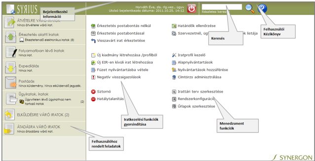</div>
			</div><div class="et_pb_module et_pb_text et_pb_text_69  et_pb_text_align_left et_pb_bg_layout_light">
				
				
				
				
				<div class="et_pb_text_inner">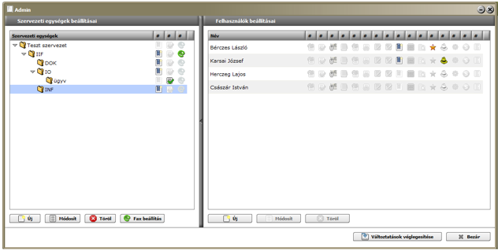</div>
			</div>
			</div>
				
				
				
				
			</div>
				
				
			</div><p>The post <a href="../az-elso-agilis-elmenyem-1-resz/">Az első agilis élményem – 1. rész</a> first appeared on <a href="https://agiluu.hu">AGILUU</a>.</p>]]></content:encoded>
					
		
		
			</item>
		<item>
		<title>Agilis transzformáció? Nem kell túlgondolni, csak szokás kérdése! A retrospektív</title>
		<link>https://agiluu.hu/retrospektiv/?utm_source=rss&#038;utm_medium=rss&#038;utm_campaign=retrospektiv</link>
		
		<dc:creator><![CDATA[Mészáros-Nagy Éva]]></dc:creator>
		<pubDate>Sun, 06 Nov 2022 16:30:19 +0000</pubDate>
				<category><![CDATA[Agilitás az IT szektoron kívül]]></category>
		<category><![CDATA[agilis cég]]></category>
		<category><![CDATA[agilis csapat]]></category>
		<category><![CDATA[agilis fejlesztés]]></category>
		<category><![CDATA[agilis működés]]></category>
		<category><![CDATA[agilis szervezet]]></category>
		<category><![CDATA[agilis transzformáció]]></category>
		<category><![CDATA[agilis vezető]]></category>
		<category><![CDATA[csapatmunka]]></category>
		<category><![CDATA[értekezlet]]></category>
		<category><![CDATA[karrier]]></category>
		<category><![CDATA[meeting]]></category>
		<category><![CDATA[megbeszélés]]></category>
		<category><![CDATA[munkahelyi bizalom]]></category>
		<category><![CDATA[munkakör]]></category>
		<category><![CDATA[progresszív cég]]></category>
		<category><![CDATA[progresszív szervezet]]></category>
		<category><![CDATA[retro]]></category>
		<category><![CDATA[retrospective]]></category>
		<category><![CDATA[retrospektív]]></category>
		<category><![CDATA[vállalati kultúra]]></category>
		<guid isPermaLink="false">http://agiluu.hu/?p=10746</guid>

					<description><![CDATA[<p>A retrospektív megbeszélésen a csapat átgondolja, mi működött, mi fejlesztendő, és hogyan kell fejleszteni azt a működésben.</p>
<p>The post <a href="../retrospektiv/">Agilis transzformáció? Nem kell túlgondolni, csak szokás kérdése! A retrospektív</a> first appeared on <a href="https://agiluu.hu">AGILUU</a>.</p>]]></description>
										<content:encoded><![CDATA[<div class="et_pb_section et_pb_section_5 et_section_regular" >
				
				
				
				
				
				
				<div class="et_pb_row et_pb_row_16">
				<div class="et_pb_column et_pb_column_4_4 et_pb_column_20  et_pb_css_mix_blend_mode_passthrough et-last-child">
				
				
				
				
				<div class="et_pb_module et_pb_text et_pb_text_70  et_pb_text_align_left et_pb_bg_layout_light">
				
				
				
				
				<div class="et_pb_text_inner"><h3><strong>Egyszerű szokásokkal te is elkezdheted a szervezetedben az agilisabbá válást!</strong></h3>
<p>Az agilis transzformáció hallatán, már csak a transzformáció szó miatt is egy nehézkes, minden szervezeti területet átmozgató, hatalmas erőforrásokat igénylő folyamat juthat eszünkbe, ami sok-sok éves távlatban akár igaz is lehet. Azonban az igazság az, hogy az agilis működést érdemesebb ennél sokkal könnyedebben és stresszmentesebben is elkezdeni, kicsiben, kísérletező módon, kevés kockázattal. Ehhez nem kell más, csak egy nyitott vezető, aki bátran kipróbál néhány új szokást beépíteni a mindennapi működésbe. Ebben a cikksorozatban igyekszünk sok olyan hasznos tippel szolgálni, amelyekkel bátran belevághatsz a változásba. (Első témánk a retrospektív meeting.)</p>
<p>Az agilitás a szervezet azon képessége, hogy dinamikusan érzékeli a környezetében zajló változásokat és válaszol rájuk akciókkal, amelyek fókuszáltak, gyorsak és rugalmasak. Fontos hangsúlyozni, hogy az agilis módszertanok átvétele nem egyenlő az agilis transzformációval, hiszen pusztán a módszerek bevezetésével a szervezeti kultúra nem fog megváltozni. Az agilis működés lényege pedig pont abban rejlik, hogy a folyamatos fejlődésnek köszönhetően a céges kultúra is átalakul. A rosszul működő mechanizmusok javíthatóak lesznek, a belső-külső szervezeti kapcsolatok, a munkahelyi légkör mind mind folyamatosan javulnak.</p></div>
			</div><div class="et_pb_module et_pb_text et_pb_text_71  et_pb_text_align_left et_pb_bg_layout_light">
				
				
				
				
				<div class="et_pb_text_inner"><h3><strong>KEZDJ AGILIS TRANSZFORMÁCIÓBA EGYSZERŰEN!</strong></h3>
<p>Sok vezetőben felmerül, hogy a jelenlegi működésből egy agilisabb működés felé állítaná át szervezetét. Nemcsak az üzleti érdekek miatt, hanem a kultúra formálásának igénye miatt is.</p>
<p>A mi tanácsunk, hogy az agilis működésre való átállást kis lépésekben érdemes elkezdeni. Ezt a bevezetett szokásokra és a bevont emberek, részlegek nagyságára is értjük. Így van lehetőség kísérletezni, hibázni és kis kockázattal folyamatosan javítani működést.</p>
<p>Egy csapattal, a szervezet egy – akár – funkcionális részével érdemes kezdeni, akik nyitottak tesztelni az új működést, ezt a működést pedig folyamatosan javítják és kiterjesztik a szervezetben.</p>
<p>A futásról szóló jobbnál jobb könyvek rámutattak, hogy a legnagyobb kihívás új futóként a futás szokássá tétele jelenti. Ezek a könyvek azt mondják: Felejtsd el a különböző edzésterveket, a speciális öltözékeket, csak fuss &#8211; hetente háromszor vagy négyszer! Fuss! Vedd fel a futócipődet, menj ki otthonról, és fuss és tedd a szokásoddá, ez után pedig jöhetnek a specialitások. Ugyanez igaz az agilis működés bevezetésére is.</p>
<p>A vezetőként el kell hinned magadról, hogy képes vagy beindítani az egy agilis működést. Ehhez sokszor csak annyi kell, hogy gyakorolj a munkatársaiddal az új szokások által, míg végül valóban agilissá válik a működés.</p>
<p>Mielőtt bármilyen új szokást bevezetnél, tedd fel magadnak ezeket a kérdéseket. Ez közelebb visz ahhoz, hogy elképzeld, milyen a vágyott működés a szervezetedben, és ehhez milyen új szokás kialakítására van szükség.</p>
<ul>
<li>Milyen az, amikor eggyel jobban működik egy bizonyos folyamatunk?</li>
<li>Miből vesszük ezt észre?</li>
</ul>
<p>Erre a vágyott állapotra érdemes törekedni, amikor megválasztod, hogy milyen új rítusokat, módszereket vezess be a cégbe.</p></div>
			</div><div class="et_pb_module et_pb_text et_pb_text_72  et_pb_text_align_left et_pb_bg_layout_light">
				
				
				
				
				<div class="et_pb_text_inner"><h2><strong>EGY EGYSZERŰ SZOKÁS AZ AGILIS MŰKÖDÉS BEINDÍTÁSÁRA: A RETROSPEKTÍV </strong></h2>
<p>Szerintünk az első és legfontosabb szokás, amit bevezethetsz a cégedben, az a rendszeres, visszatekintő és értékelő megbeszélések (=retrospektív) tartása. A retro megbeszélés fejleszti az önszerveződést, hatékony kommunikációt, bizalmat, a folyamatos tanulást és az emberek bevonását. A rendszeres, elmúlt időszakra visszatekintő megbeszéléseknek azonnali és nagy hatása van. Az emberek ilyenkor megállhatnak és átgondolhatják a jelenlegi teljesítmény javítását. Ez egy biztonságos hely a projekt sikereinek áttekintésére, a folyamatok javításának lehetőségeinek azonosítására és az esetlegesen felmerült problémák megoldására.</p>
<p>A retrospektíveken feltehetitek a kérdéseket:</p>
<ul>
<li>Went well: Mi ment jól?</li>
<li>To improve: Mit fejlesszünk?</li>
<li>Action items (Megállapodások): Milyen feladatok elvégzésével fejlesszük?</li>
</ul>
<p>De megéri egy retro találkozó az emberek idejét, vagy csak egy újabb szükségtelen munkamegszakítás lesz? Attól függ, hogyan csinálod. Ha jól csinálják, egy retrospektív rávilágíthat a szervezet folyamatainak érdemi fejlesztésére, és a munkatársakat a megfelelő irányba mozgathatja, az emberek közötti együttműködést is szorosabbá teheti, ezáltal formálja a kultúrát. Ha rosszul csinálják, hibáztatássá, vagy csak egy újabb ismétlődő, időpazarló találkozóvá válhat.</p></div>
			</div><div class="et_pb_module et_pb_text et_pb_text_73  et_pb_text_align_left et_pb_bg_layout_light">
				
				
				
				
				<div class="et_pb_text_inner"><h3><strong><u>PÉLDAFORGATÓKÖNYV EGY PROJEKTZÁRÓ RETROspektívHeZ</u></strong></h3>
<p>A projektet lezáró és értékelő megbeszélés az egyik leggyakrabban alkalmazott retro típus. Az agilis projekt lezáró retro olyan találkozó, amelyet az egy projekten dolgozó emberek tartanak a projekt végén, hogy áttekintsék a folyamatot, és azonosítsák a javítási lehetőségeket. <span>Ez akkor tud hasznos lenni, ha a projekttagok nagy része egy későbbi projektekben is újra együtt fog dolgozni.</span></p>
<p>A találkozó célja, hogy</p>
<ul>
<li>megvizsgálja, hogyan zajlott a projekt az emberek közötti kapcsolatok, a folyamatok és az eszközök tekintetében,</li>
<li>azonosítsa a jól sikerült elemeket és a lehetséges fejlesztéseket,</li>
<li>megállapodások kötésével akciótervet készítsen a csapat munkájának javítására.</li>
</ul>
<p><strong><em>A mostani példánkban egy építőipari tervező cég egyik tervezőcsapata tart retrospektív értekezletet, akik az elmúlt 2 hónapban zajlott sportcsarnok tervezési projektjüket zárják le és értékelik. Az értekezlet hibrid módon (helyszíni tárgyalóban és home officeban) valósul meg, és a résztvevők az Easy Retro eszközt használják.</em></strong></p>
<p>A példában felvázolt retro formátum max. 5-7 személy részvételével lesz ideális, mert ennél több résztvevő esetén már nem tarthatók az alábbiakban megadott időintervallumok, és csoportosítani szükséges a retro kártyákat.</p></div>
			</div><div class="et_pb_module et_pb_image et_pb_image_7">
				
				
				
				
				<a href="../wp-content/uploads/2022/11/Projektzaro-retrospektiv.png" class="et_pb_lightbox_image" title=""><span class="et_pb_image_wrap "></span></a>
			</div><div class="et_pb_module et_pb_text et_pb_text_74  et_pb_text_align_left et_pb_bg_layout_light">
				
				
				
				
				<div class="et_pb_text_inner"><p><strong>IDŐTARTAM</strong></p>
<p>A találkozó max. 60 percig tart, ez az idő elégséges a projekt fontos tanulságainak összegyűjtésére, a résztvevők meghallgatására és a teendők megfogalmazására.</p>
<p><strong>RÉSZTVEVŐK</strong></p>
<p>A retrospektíven jelen van 7 fő, melyből 5 fő a projekten eddig dolgozó tervező munkatárs, 1 fő cégvezető és 1 fő facilitátor.</p>
<p><strong>HELYSZÍN, ESZKÖZÖK</strong></p>
<p>A retro helyszíne hibrid: 3 fő home officeban, a többiek a cég egyik tárgyalójában vesznek részt, ahol megszakítás nélkül, nyugodt, zavartalan környezetben megtartásra kerülhet a megbeszélés. A résztvevők mindegyike laptopot és netkapcsolatot használ a retrohoz.</p>
<h3><strong>0. retrospektív ELŐKÉSZÍTÉSe</strong></h3>
<p>A facilitátor a retro megbeszélés előtt már előkészíti az <a href="https://easyretro.io/">Easy Retro</a> felületet. Az Easy Retro egy online retrospektív eszköz, amely könnyen használható a megfigyelések összegyűjtésére. Használata nagyon egyszerű, nem igényel komolyabb hozzáértést, minimális angol tudással is jól használható. Elégséges a facilitátornak regisztrálnia erre az eszközre, a többiek pedig az általa megosztott linken keresztül regisztráció nélkül használhatják. (Egy rövid e-mailes regisztráció után az <a href="https://easyretro.io/pricing">ingyenes verzióban</a> havonta 3 alkalommal használható ingyenesen az eszköz.)</p>
<p>A facilitátor a sportcsarnok tervezési projekt retrojához egy új Easy Retro táblán „Went well”, „To improve” és „Megállapodások” oszlopokat készít elő a csapat számára.</p>
<p>A facilitátor előre szól a résztvevőknek, hogy hozzanak magukkal laptopot azok, akik személyesen vesznek részt, és hogy a meeting ideje alatt mindenki kapcsolja majd be a kameráját. A technikai előkészületekhez tartozik az is, hogy a meeting szobában mindenki letiltja a saját mikrofonját és hangszóróját, és a központi mikrofont/hangszórót használja az online hívásban.</p>
<h3>1. <strong>RETROspektív KEZDÉS</strong></h3>
<p>A retrospektív felvezetése max. 5 perc időtartamú. A facilitátor h<span>atározottan elindítja a retrót, és csoportosan üdvözli a résztvevőket. Akár icebreaking jelleggel már a várakozási időszakban is beszélget a megérkezettel emberekkel, és ott egyenként üdvözli őket érkezéskor. Érdemes 10 perccel kezdés előtt már elindítania a hívást, hogy időben kiderüljön, hogy van-e technikai probléma és azt még időben le tudja kezelni.</span></p>
<p>Ismerteti a résztvevőkkel, hogy a mai retrospektív megbeszélés célja, hogy a csapat megvitassa az elmúlt két hónapban zajló sportcsarnok tervezési projekt tanulságait, annak érdekében, hogy a jövőben még sikeresebben tudjanak hasonló projekteket véghez vinni. Elmondja azt is, hogy milyen eszközt használnak a retrohoz és milyen időkeretet szánnak a találkozó egy-egy részére. Majd a facilitátor valós időben elküldi az Easy Retro tábla linkjét a résztvevőknek, majd meggyőződik arról, hogy minden résztvevő sikeresen megnyitotta a felületet és használni tudja azt. A facilitátor arra is megkér mindenkit, hogy kapcsolja be a kameráját, ha még nem tette volna.</p>
<h3> 2. <strong>VISSZAEMLÉKEZÉSEK GYŰJTÉSE</strong></h3>
<p>Időtartama max. 5 perc. A facilitátor emlékezteti a résztvevőket, hogy az Easy Retro táblába a retro kártyákat megírni 5 perc idejük lesz. Ezután a résztvevők elkezdik írni a két oszlopba a projekttapasztalataikat a retro kártyákra. Az egyes csapattagok beírásai addig nem látszanak mások számára, amíg a facilitátor az idő végén meg nem fordítja azokat mindenki számára láthatóvá. Így ez idő alatt mindenkinek lehetősége van nyugodtan, átgondoltan beírni az első két oszlopba a gondolatait anélkül, hogy azt más látná.</p>
<p>Például: az egyik projekttag beírja egy kártyára a „Went well” oszlopba, hogy <em>„Az ügyféllel hatékony volt az e-mailen keresztüli kapcsolattartás”</em> vagy a „To improve” oszlopba, &#8211; mert szerinte ezen kellene javítani -, hogy <em>„Az egymás részterveinek áttekintése, ellenőrzése sokszor elmaradt, ami később problémákhoz vezetett”</em>.</p></div>
			</div><div class="et_pb_module et_pb_image et_pb_image_8">
				
				
				
				
				<a href="../wp-content/uploads/2022/11/1-retrospektiv.png" class="et_pb_lightbox_image" title=""><span class="et_pb_image_wrap ">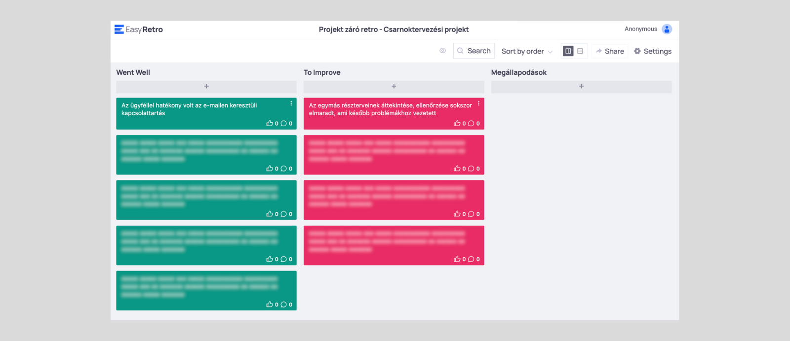</span></a>
			</div><div class="et_pb_module et_pb_text et_pb_text_75  et_pb_text_align_left et_pb_bg_layout_light">
				
				
				
				
				<div class="et_pb_text_inner"><h3><strong>3. VISSZAEMLÉKEZÉSEK FELDOLGOZÁSA, MEGÁLLAPODÁSOK</strong></h3>
<p>A retrospektív kártyákra írt visszaemlékezések megbeszélése max. 40 percig tart. A facilitátor egyszerre felfedi a kártyákat, amiket a résztvevők írtak. Az első oszloppal kezdve, egyesével felolvassa a kártyák szövegeit, majd az adott kártya íróját megkéri, hogy amennyiben szeretné, egészítse ki a gondolatait, hogy pontosan mit is gondol a leírt észrevétellel, jelenséggel kapcsolatban. A résztvevők így sorra elmondják őszinte gondolataikat az általuk leírtakkal kapcsolatosan.</p>
<p>Például: <em>„Az ügyféllel hatékony volt az e-mailen keresztüli kapcsolattartás”</em> kártya írója kiegészíti ezt azzal, hogy <em>„A telefon helyett sokkal jobb volt e-mailen keresztül egyeztetni az ügyféllel, mert minden megállapodás könnyen visszakövethető volt így. A telefonon megbeszéltek sokszor feledésbe merültek vagy végül nem úgy alakultak, ahogy megbeszéltük”.</em> Ebben az esetben a csapat megállapodik abban, hogy nincs szükség további feladat megfogalmazására a „Megállapodások” oszlopba, hiszen ez egy jól működő dolog volt, amit természetes, hogy a következő hasonló projektben is alkalmazni fognak.</p></div>
			</div><div class="et_pb_module et_pb_image et_pb_image_9">
				
				
				
				
				<a href="../wp-content/uploads/2022/11/2-retrospektiv.png" class="et_pb_lightbox_image" title=""><span class="et_pb_image_wrap ">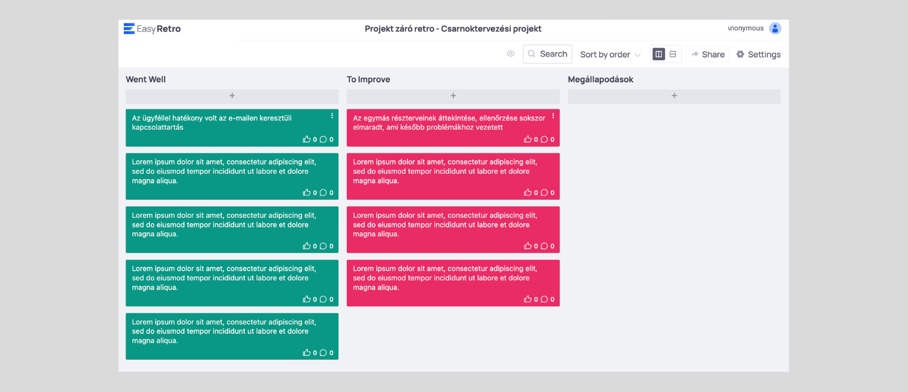</span></a>
			</div><div class="et_pb_module et_pb_text et_pb_text_76  et_pb_text_align_left et_pb_bg_layout_light">
				
				
				
				
				<div class="et_pb_text_inner"><p>A „To improve” oszlopban pedig <em>„Az egymás részterveinek áttekintése, ellenőrzése sokszor elmaradt, ami később problémákhoz vezetett”</em> kártya írója a felolvasás után a következőkkel egészíti ki a gondolatait: <em>„Mivel néhány esetben elmaradt egymás ellenőrzése, amiben előzőleg megállapodtunk, így előfordult, hogy maradtak hibák a tervekben, amiket így nehéz volt később kijavítani, amikor a tervek már előrehaladottabb állapotban voltak. Ezért sokszor duplán dolgoztunk és az időből is kifutottunk.”</em> A facilitátor ekkor megkérdezi a többieket is, ők ezt hogyan látják. Ezzel az észrevétellel mindenki egyetértett és javítandónak ítélték, ezért a csapat megállapodott abban a feladatban, hogy <em>„Részterven csak akkor lehet tovább dolgozni, ha azt egy munkatárs is leellenőrizte, erre az ellenőrzésre pedig 1 munkanapon belül sor kell kerüljön, és minden csapattagnak részt kell vennie ebben az ellenőrzési munkában.”</em></p></div>
			</div><div class="et_pb_module et_pb_image et_pb_image_10">
				
				
				
				
				<a href="../wp-content/uploads/2022/11/3-retro.png" class="et_pb_lightbox_image" title=""><span class="et_pb_image_wrap ">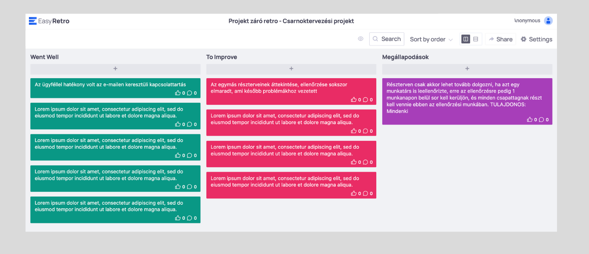</span></a>
			</div><div class="et_pb_module et_pb_text et_pb_text_77  et_pb_text_align_left et_pb_bg_layout_light">
				
				
				
				
				<div class="et_pb_text_inner"><p>Ahogy a facilitátor sorban végig veszi a csapattagokkal az összes retro kártyát, kialakul a harmadik oszlopban megállapodások listája, amin minden elem egy konkrét feladat vagy megállapodás, melyhez konkrét felelős is társul. Így a retrospektív végére senkiben nem marad kérdés, hogy kinek, min és hogyan kell fejlesztenie a projekt folyamatát illetően.</p></div>
			</div><div class="et_pb_module et_pb_image et_pb_image_11">
				
				
				
				
				<a href="../wp-content/uploads/2022/11/4-retro.png" class="et_pb_lightbox_image" title=""><span class="et_pb_image_wrap ">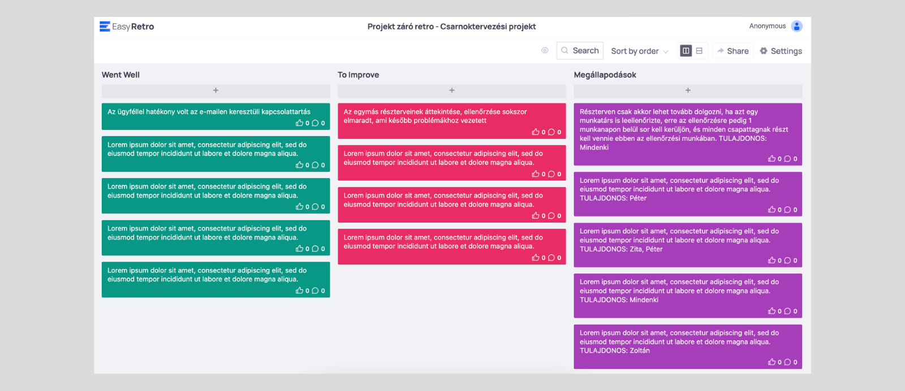</span></a>
			</div><div class="et_pb_module et_pb_text et_pb_text_78  et_pb_text_align_left et_pb_bg_layout_light">
				
				
				
				
				<div class="et_pb_text_inner"><h3><strong>4. MEGÁLLAPODÁSOK RÖGZÍTÉSE</strong></h3>
<p>Időtartama max. 3 perc. Amikor előállt a megállapodások listája, a facilitátor egyben felolvassa a résztvevők számára, minden feladatot a hozzátartozó tulajdonossal együtt. A teljes Easy Retro tábla képernyőfotóját pedig elküldi a résztvevők számára e-mailben, hogy később is vissza lehessen térni hozzá, miről is volt szó a megbeszélésen és milyen megállapodások születtek. Ez lesz tulajdonképpen a retro jegyzőkönyve.</p>
<h3>5. <strong>RETROspektív ZÁRÁSa, VISSZAJELZÉSEK KÉRÉSE</strong></h3>
<p>Időtartama max. 7 perc. A facilitátor a retrospektív végén megkéri a résztvevőket, hogy mondják el néhány mondatban, hogyan értékelik a mai retrot. Felteheti a következő kérdéseket:</p>
<ul>
<li>Szerintetek elérte a célját a mai retrospektív?</li>
<li>Hogy éreztétek magatokat a retro közben?</li>
<li>Sikerült őszintén és nyíltan megvitatni a lezárt projekttel kapcsolatos kérdéseket?</li>
<li>Mit csinálnátok másképpen a következő retro alkalmával?</li>
</ul></div>
			</div><div class="et_pb_module et_pb_text et_pb_text_79  et_pb_text_align_left et_pb_bg_layout_light">
				
				
				
				
				<div class="et_pb_text_inner"><h3><strong>TIPPEK, GONDOLATOK A SIKERES RETROspektív MEGTARTÁSÁHOZ:</strong></h3>
<ul>
<li>A retrospektív megbeszélések sikerének záloga, hogy rendszeresen megtartásra kerül és megszabott időkereten belül lezajlik.</li>
<li>A retrospektívek sikerét hosszú távon vezetőként abból veheted észre, hogy a résztvevők aktívak, vállalják a felelősséget a megfogalmazott teendőkért, és meg is valósítják azokat, őszinte és bizalmas légkörben tudnak retrozni, ezáltal mernek egymásnak visszajelzéseket adni.</li>
<li>A retronak biztonságos teret kell teremtenie az emberek számára, hogy megosszák az őszinte visszajelzéseiket arról, hogy mi ment jól és mi nem, és párbeszédet generáljon arról, hogy mi az, amit legközelebb javítani lehetne. Ez egy olyan gyakorlat, amely segít az embereknek átgondolni projekt-munkamódszereiket, és folyamatosan jobbá tenni tevékenységüket.</li>
<li>A retrospektíven sok esetben kisebb cégek esetén a cégvezető is részt vesz, hiszen gyakran ő is projekttag abban a tekintetben, hogy az üzletet, a projektet és annak kereteit ő tárgyalta le az ügyféllel, így az ő meglátásai is fontos részei lesznek a megbeszélésnek.</li>
<li>Az találkozó sikere nagyban múlik a megbeszélés facilitátorán. Feladata, hogy mindvégig semleges maradjon, miközben meghatározza a megbeszélgetés hangnemét, a résztvevőket a témában, és a meghatározott időkereten belül tartsa. A semlegesség garantálásához lehetőleg egy, a projekten kívüli személyt kérj fel facilitátornak.</li>
<li>Ha vezetőként mégis te tartod a retrot, akkor folyamatosan dolgoznod kell azon, hogy a vezetői tekintélyedet háttérbe szorítsd, hiszen a cél az, hogy az emberek megnyíljanak egymás előtt, ezáltal pedig a csapat fejlődjön.</li>
<li>Fontos technika, amit nem szabad elfelejteni, hogy értékeljük a csendet is! A csend feszültséget kelt a megbeszélésen, és finoman kikényszeríti a meghívottakból a részvételt a retrospektíven.</li>
<li>A megbeszélés résztvevői a retrokártyák megírásakor, gondolataik megosztásakor ne személyeskedjenek és ne hibáztassanak, hanem a valódi fejlődésre koncentráljanak, ez a cél lebegjen a szemük előtt. Mindenki építő jelleggel gondolja át azokat a lépéseket, amelyekkel javíthatóak a problémás területek, illetve azokat is, amik sikerhez vezettek a projektben. <span>Facilitátorként teremts ehhez megfelelő légkört.</span></li>
<li>A kártyák megbeszélésekor a facilitátornak nem a frusztrációra kell összpontosítania; általános kérdéseket kell feltennie, hogy kiderítse, mi okozta az adott eredményt, jelenséget, hogy a csapat megvitathassa a megoldásokat. A facilitátornak ismernie kell a különbséget a konstruktív és a destruktív konfliktus között, és arra kell törekednie, hogy a beszélgetés középpontjában az utóbbi elkerülése érdekében összpontosítson.</li>
<li>A megállapodások és feladatok teljesítését a projekttagok vállalják el és ne a vezető! Próbálják a projekttagok autonóm, felhatalmazott csapatként csiszolni a projektfolyamatot, a cégvezetőt minél inkább kihagyva ebből a folyamatból. Ehhez vezetőként add minél nagyobb hozzájárulásod!</li>
<li>Minden jó retrospektív kulcsa, hogy jó megállapodások szülessenek. De a végső cél, hogy ezen feladatok megvalósításával a jövőben valóban fejlődjön a projektek véghezvitele.</li>
<li>Ha a csapatnak vagy annak vezetőjének erre igénye van, utánkövetésként lehetőség van a következő retro-k (néhány retronként) valamelyikén a korábbi megállapodás listát újra végignézni, hogy miként teljesültek a feladatok. A facilitátor megkérdezheti az aktuális retro végén a csapatot, hogy igénylik-e az utánkövetést. Amennyiben szeretnének ránézni az előző feladatokra, a facilitátor a következő kérdésekkel segítheti ebben őket: Hogyan sikerült ezt a feladatot véghez vinni? Mi az, ami megakadályozott abban, hogy megcsináld ezt a feladatot? Az utánkövetésre is érvényes, hogy a feladatok megbeszélése nem lehet hibáztató vagy személyeskedő. A cél itt is a projektfolyamat fejlesztése. Ha egy feladatot nem sikerült megcsinálni, érdemes megbeszélni, hogy mi volt ennek a valódi akadálya, illetve valóban szükséges-e az a megállapodás.</li>
</ul></div>
			</div>
			</div>
				
				
				
				
			</div>
				
				
			</div><p>The post <a href="../retrospektiv/">Agilis transzformáció? Nem kell túlgondolni, csak szokás kérdése! A retrospektív</a> first appeared on <a href="https://agiluu.hu">AGILUU</a>.</p>]]></content:encoded>
					
		
		
			</item>
		<item>
		<title>Net Protections, egy úttörő szerepet vállaló japán szervezet</title>
		<link>https://agiluu.hu/net-protections-egy-uttoro-szerepet-vallalo-japan-szervezet/?utm_source=rss&#038;utm_medium=rss&#038;utm_campaign=net-protections-egy-uttoro-szerepet-vallalo-japan-szervezet</link>
		
		<dc:creator><![CDATA[Marhefka István]]></dc:creator>
		<pubDate>Fri, 28 Oct 2022 13:15:26 +0000</pubDate>
				<category><![CDATA[Agilis szervezetek]]></category>
		<category><![CDATA[agilis csapat]]></category>
		<category><![CDATA[agilis fejlesztés]]></category>
		<category><![CDATA[agilis működés]]></category>
		<category><![CDATA[agilis szervezet]]></category>
		<category><![CDATA[átláthatóság]]></category>
		<category><![CDATA[Corporate Rebels]]></category>
		<category><![CDATA[csapatmunka]]></category>
		<category><![CDATA[karrier]]></category>
		<category><![CDATA[munkakör]]></category>
		<category><![CDATA[progresszív cég]]></category>
		<category><![CDATA[progresszív szervezet]]></category>
		<category><![CDATA[ranglétra]]></category>
		<category><![CDATA[szakmai pályafutás]]></category>
		<category><![CDATA[tehetséggondozás]]></category>
		<category><![CDATA[vállalati kultúra]]></category>
		<guid isPermaLink="false">http://agiluu.hu/?p=10712</guid>

					<description><![CDATA[<p>A Net Protections kezdetben középvezetői hierarchikus struktúrában működött, és a – közös vállalati kultúra építve – mára már csapatok hálózataként működik.</p>
<p>The post <a href="../net-protections-egy-uttoro-szerepet-vallalo-japan-szervezet/">Net Protections, egy úttörő szerepet vállaló japán szervezet</a> first appeared on <a href="https://agiluu.hu">AGILUU</a>.</p>]]></description>
										<content:encoded><![CDATA[<div class="et_pb_section et_pb_section_6 et_section_regular" >
				
				
				
				
				
				
				<div class="et_pb_row et_pb_row_17">
				<div class="et_pb_column et_pb_column_4_4 et_pb_column_21  et_pb_css_mix_blend_mode_passthrough et-last-child">
				
				
				
				
				<div class="et_pb_module et_pb_text et_pb_text_80  et_pb_text_align_left et_pb_bg_layout_light">
				
				
				
				
				<div class="et_pb_text_inner"><p>A Corporate Rebels egy hollandiai gyökerekkel rendelkező, ma már nemzetközi közösség, ami a modern vállalati működési formákat és vállalati kultúrákat kutatja és népszerűsíti.</p>
<p>A következő esettanulmányuk egy japán „Buy Now, Pay Later” pénzügyi szolgáltató cég átalakulásának történetéről számol be. A cég már több mint 20 éve létezik, ami kezdetben középvezetői hierarchikus struktúrában működött, és a – közös vállalati kultúra építve – mára már csapatok hálózataként működik. A sok éves átalakítás mozgatórugója a növekedés kihívásainak kezelése volt, amit eredetileg a beszállítói hálózat sokszínű kultúrája nem tett lehetővé.</p>
<p>A következő cikket a Corporate Rebels közösség egyik tagja, Yuji Yamada írta.</p></div>
			</div><div class="et_pb_module et_pb_text et_pb_text_81  et_pb_text_align_left et_pb_bg_layout_light">
				
				
				
				
				<div class="et_pb_text_inner"><h2>Net Protections</h2>
<p>A Net Protections Japán egyik élen járó vállalata a BNPL- (Buy Now, Pay Later, „vásárolj most, fizess később”) ágazatban, amely a startuppiac egy igen gyorsan növekvő területének bizonyult az utóbbi időben, ahogy ez az olyan technológiai vállalatok sikeréből is kitűnik, mint az Affirm, a Klarna és az Afterpay. Ami azt illeti, az egyik jelentősebb japán BNPL-szolgáltató céget, a Paidyt 2021 novemberében a PayPal vásárolta fel közel hárommilliárd dollárért.</p>
<p>A Net Protectionst még 2000-ben alapítottuk meg, amikor a BNPL még ötlet szintjén is alig merült fel. Azóta a cég különféle szolgáltatásokkal bővítette a portfólióját – mind a vállalati, mind a kereskedelmi szolgáltatások terén – Japánban és azon kívül is. 2021 decemberében részvénytársasággá alakult; ekkor az éves bevétele meghaladta a 150 millió dollárt, a felhasználóinak száma pedig a 16 milliót. A vállalat jelenleg több mint háromszáz alkalmazottat foglalkoztat.</p>
<p>A Net Protections jelenlegi vezérigazgatója, Shin Shibata, nem tartozik az alapítók közé. Egy magántőke-befektetési társaság befektetőjeként került kapcsolatba a céggel, amely annyira magával ragadta, hogy 2004-ben elfoglalta a vezérigazgatói széket. Még egy évtizedre volt szükség a startup-ökoszisztéma növekedéséhez Japánban, ezért a befektetési ágazatból átnyergelt vezérigazgatónk ritka kincsnek – és jelentős előnynek – bizonyult.</p>
<p>A Net Protections rendkívül büszke remek csapatára és szervezeti kultúrájára. Manapság már igen sikeres, új munkamódszereket alkalmazó cégként tekintenek rá Japánban.</p>
<p>Mielőtt belekezdenék a Natura névre keresztelt progresszív irányítási rendszer tárgyalásába, szeretném röviden bemutatni a céget és annak történetét.</p>
<h3>A szervezetátalakítás története</h3>
<p>A Net Protections több mint húszéves növekedése, terjeszkedése alatt a szervezeti kultúra több alkalommal is komoly változáson ment keresztül.</p>
<p><strong>2000–2007: startupszakasz</strong></p>
<p>Az indulás éveiben legfőképpen az üzlet beindításán volt a hangsúly. Ebben a szakaszban a BNPL gyakorlatilag még nem is létezett, tehát a cég leginkább a piacbővítésre összpontosított. A bevétel tízmilliárd jen körül alakult, ekkor az alkalmazottak száma negyven feletti volt. A szervezeti felépítés a megszokott hierarchikus volt, középvezetőkkel.</p>
<p><strong>2008–2012: növekedési szakasz</strong></p>
<p>Ezután következett a növekedés szakasza: a cég bevétele megháromszorozódott (36 milliárd jen), és az alkalmazottai számát is megduplázta (több mint száz főre) a cég. Ebben a szakaszban változatlanul hierarchikus szervezeti forma volt rá jellemző. (<a href="https://www.amazon.com/Reinventing-Organizations-Frederic-Laloux/dp/2960133501" target="_blank" rel="noopener"><em>A jövő szervezetei [Reinventing Organizations]</em></a> című könyv alapján narancssárga szintű szervezet.)</p>
<p><strong>2013–2016: átalakítási szakasz</strong></p>
<p>A fordulópont 2012-ben következett be. A növekedési szakasz komoly kihívások elé állította a szervezetet, legfőképpen a különféle szervezeti kultúrák különbözősége okán. Egyes munkatársak a célok elérését tartották a legfontosabbnak, másokat jobban foglalkoztatott egy befogadó munkahelyi kultúra előmozdítása.</p>
<p>Így a Net Protections egy igen fontos lépésre szánta el magát: úgy döntött, hogy felülvizsgálja a jövőképét <strong>valamennyi</strong>, teljes munkaidőben foglalkoztatott dolgozó bevonásával. 2012 júliusában a vállalat a munkavállalókat hat-hét fős csapatokba osztotta, amelyek három hónapig az általuk legjobbnak tartott vállalati jövőkép kidolgozásán fáradoztak. Egy kétnapos céges elvonulás során mutatták be a csapatok az elképzeléseiket. A következő lépés az új jövőkép végleges formába öntése volt, amely feladattal egy, a vezérigazgatót is magában foglaló projektcsapatot bíztak meg. Bár a cég eredetileg három hónapot szánt a következő lépés kivitelezésére, vagyis a végleges változat kidolgozására, végül kilenc hónapig tartott a szervezet tagjai által előadott különféle elképzelések átbeszélése.</p>
<p>Az új szervezeti normák című új küldetésnyilatkozat hét pontból állt, és öt értéket sorolt fel. A szervezet vonatkozásában egyértelművé tették, hogy a Net Protections számára maga a cég és az ott dolgozó egyének ugyanolyan fontosak, és a vállalat minden tekintetben tiszteletben tartja a dolgozókat.</p>
<p>És a munkavállalók? Velük szemben mindössze az az elvárás fogalmazódott meg, hogy mindezért cserébe <strong>jó teljesítmény</strong>t kell nyújtaniuk.</p></div>
			</div><div class="et_pb_module et_pb_image et_pb_image_12">
				
				
				
				
				<a href="../wp-content/uploads/2022/10/cr__2.png" class="et_pb_lightbox_image" title=""><span class="et_pb_image_wrap ">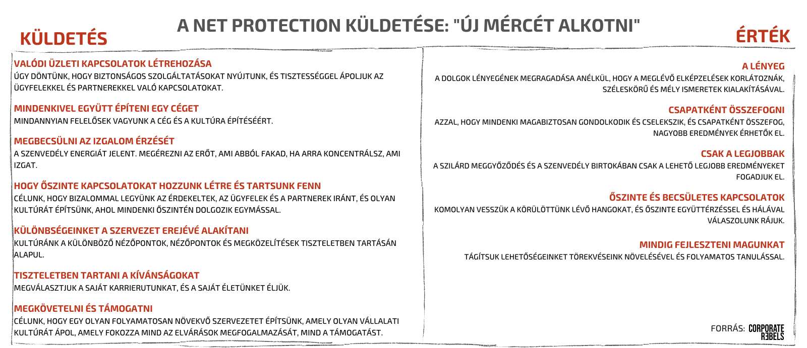</span></a>
			</div><div class="et_pb_module et_pb_text et_pb_text_82  et_pb_text_align_left et_pb_bg_layout_light">
				
				
				
				
				<div class="et_pb_text_inner"><p>A Net Protections számára a valódi fordulópontot nemcsak az új küldetésnyilatkozat kidolgozása jelentette, hanem több munkatárs távozása is. Az egész folyamatot végigkísérő munkavállalóknak több mint a fele nem tudott megbarátkozni az új cégfilozófiával, és a következő két év során önszántukból léptek ki a cégtől. Viszont ennek következtében egy erős és egységes szervezeti kultúra jött létre.</p>
<p><strong>2016–2022: a következő szakasz</strong></p>
<p>Ezek után a Net Protections még egy lépéssel továbbment ezen az úton. 2018-ban egy új, Natura (a latin ’természet’ jelentésű szóból) nevű teljesítményértékelési rendszer került bevezetésre. Az új rendszer célja a kölcsönös támogatáson és együttműködésen alapuló szervezeti kultúra erősítése volt. Megszűntek a menedzseri munkakörök, amelyek helyébe az úgynevezett <em>katalizátor</em>ok léptek.</p></div>
			</div><div class="et_pb_module et_pb_text et_pb_text_83  et_pb_text_align_left et_pb_bg_layout_light">
				
				
				
				
				<div class="et_pb_text_inner"><h3>Az eredeti szervezési forma és a Natura összehasonlítása</h3>
<p>A cég megragadta a kínálkozó alkalmat, hogy az újonnan megfogalmazott értékek alapján teljesen átalakítsa a rendszert. Az új Natura rendszer fő célja a jó teljesítmény, az egyéni fejlődés és a munkahelyi jóllét elérése és megvalósítása volt. A versengés helyett az együttműködést propagálta, a munkatársak pszichés biztonságérzetét és a kölcsönös támogatást erősítve a folyamat során.</p>
<p>Ennek eredményeként néhány érdekes változás következett be.</p>
<h3>Önállóan dolgozó munkavállalók</h3>
<p>A Net Protections dolgozói önállóan dolgoznak, és jól szervezik a saját erőforrásaikat (önmenedzselők); ez remekül tetten érhető már a személyzeti felvételi kritériumokban is, például:</p>
<ul>
<li>önálló, eredeti gondolkodásmód</li>
<li>belső motivációval rendelkezik</li>
<li>elhivatott az önfejlesztésre</li>
<li>hajlandó felelősséget vállalni</li>
<li>együttműködő, könnyű vele együtt dolgozni</li>
<li>integritás</li>
</ul>
<p>2013 körül, a vállalat küldetésének és értékeinek újragondolása idején a tervezés és irányítás egyre nagyobb jelentőségre tett szert a főállású dolgozók körében. Ezzel szemben az operatív feladatokat egyre inkább partnercégek vagy részmunkaidős munkavállalók kezdték ellátni. Ez összhangban állt az új értékekkel; jelentőségteljes lépés volt a dolgozók önfejlesztése és a szélesebb körű közreműködésüket igénylő feladatkör szempontjából.</p>
<p>Üzleti szempontból is indokolt volt az átalakítás, tekintve, hogy a BNPL-cégek nyereségességének kulcsa nem az egyéni teljesítmény, sokkal inkább az egész rendszer olajozott működése. Ennek megvalósítása érdekében a dolgozóknak ismerniük kell a különféle területeket, például a tervezést és az ügyféltámogatást. Ennek érdekében az új munkatársak az első évben a fejlesztési csapathoz kerülnek.</p></div>
			</div><div class="et_pb_module et_pb_text et_pb_text_84  et_pb_text_align_left et_pb_bg_layout_light">
				
				
				
				
				<div class="et_pb_text_inner"><p>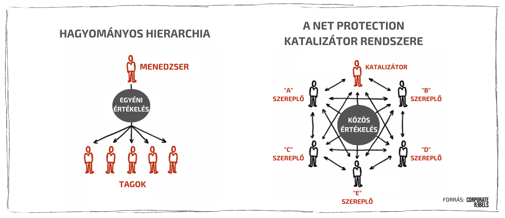</p></div>
			</div><div class="et_pb_module et_pb_text et_pb_text_85  et_pb_text_align_left et_pb_bg_layout_light">
				
				
				
				
				<div class="et_pb_text_inner"><h3>Menedzserek nélkül</h3>
<p>A cég alapvető szervezeti felépítése mátrix – üzleti és funkcionális szempontból is. 2018-ban a Net Protectionsnél a menedzseri pozíciókat megszüntették, a helyükbe pedig a katalizátorok léptek. Ez teljes mértékben összhangban volt a szervezeti átalakítás céljával.</p>
<p>A katalizátorok képlékeny, rugalmas feladatkört látnak el mindegyik, általában tíz fő körüli csapat élén, és a csapattagok fejlődésének támogatásáért felelnek. A megszokott menedzseri munkakörrel ellentétben a katalizátorok nem felelnek az eredményekért – azokért a <strong>csapatok</strong>at terheli felelősség. (Bár a megosztott felelősség rendszere kiválóan működik, mivel a Net Protections vállalkozási formája jelenleg részvénytársaság, nem szakított teljes mértékben a hagyományos szervezeti forma egyes elemeivel, a hivatalos beosztások és a részlegvezetők maradtak.)</p>
<h3>Munkacsoportok</h3>
<p>A Net Protections 2012 óta a munkacsoportprogram úttörőjének számít. A szervezeti átalakítás előtt a cégen belül a felső vezetés részéről a dinamikus delegálás lehetősége meglehetősen korlátozott volt. Erre a problémára kínált megoldást a munkacsoportprogram, amely előírja a csoporttagok számára, hogy a munkaidejük 20%-át az elsődleges feladatuktól eltérő, az érdeklődésükre számot tartó egyedi projektekben való részvételre kell áldozniuk.</p>
<p>A munkacsoportok tevékenysége számos területet fed le, például munkaerő-felvétel, képzés, üzleti tervezés és a tengerentúli fióktelepek számára kutatások végzése. És míg az iránymutatások szerint a munkatársaknak a munkaidejük 20%-át kell erre fordítaniuk, néhányan ennél is több időt töltenek más jellegű feladatok elvégzésével, márpedig ez csak rajtuk áll, tekintve, hogy a munkavállalók önmenedzselők, vagyis ők osztják be a saját idejüket.</p>
<p>A munkacsoportok rendszere alapvető fontosságúnak bizonyult a Net Protectionsnél az autonóm munkavégzésen alapuló kultúra támogatásában, mivel a dolgozók szabadon dönthetnek arról, hogy min szeretnének dolgozni.</p>
<h3>Virtuális családok</h3>
<p>A munkacsoportprogramból kifejlődött egy másik újítás is, a virtuális család rendszere (japánul Fami-Tsuku), amely a munkahelyi jó kapcsolatok ápolásában bizonyult nagy segítségnek.</p>
<p>Ha egy új munkatárs lép be a céghez, egy öt-hat tagból álló, mentori szerepet betöltő virtuális „család” alakul meg. Alapvetően nem sok előírás köti a családokat (gyakorlatilag néhány szabály vonatkozik csak rájuk a céges vacsora vagy kávézás költségtérítése kapcsán). Az a feladatuk, hogy jó kapcsolatokat alakítsanak ki az önállóan dolgozó munkatársak között.</p>
<p>Néhány havonta összeülnek a családtagok, és elmennek meginni valamit; ilyenkor a munkahelyi vagy a magánéleti problémáikat is megbeszélik. Mivel már évek óta működik a virtuális családok rendszere, az újonnan csatlakozott munkatársak továbbviszik ezt a hagyományt, és ugyanolyan meleg fogadtatásban részesítik az új tagot a következő családban.</p>
<h3>Juttatások</h3>
<p>A Net Protectionsnél bevezetett új rendszer miatt felmerülő egyik kezdeti probléma a dolgozók munkatapasztalatával függött össze. 2016-ban a munkatársak nagyjából fele még kevesebb mint három éve dolgozott a vállalatnál, míg a vezetők fele is újonnan került kinevezésre, és kevesebb mint egy év tapasztalattal rendelkezett. Egyszóval, a szervezet még nagyon fiatal volt. Mindez frusztrációt okozott azon munkatársak körében, akik szerint a teljesítményértékelési rendszer nem volt méltányos és eléggé átlátható. Emellett a rendszer nagymértékben támaszkodott az igen kisszámú tapasztalt vezetőre.</p>
<p>Ezt a problémát oly módon kívánták megoldani, hogy a teljesítményértékelés fő célja ezentúl az egyéni fejlődés támogatása lett a juttatások emelése helyett. Az alapbér jelenleg a kompetenciák 360 fokos értékelése alapján kerül meghatározásra, az egyéni teljesítményt pedig jutalmakkal ismerik el. A havonta egyszer sorra kerülő négyszemközti <em>fejlődéstámogató megbeszélés</em>ek során a munkatársak visszajelzést kapnak a náluk magasabb beosztásban dolgozóktól.</p></div>
			</div><div class="et_pb_module et_pb_text et_pb_text_86  et_pb_text_align_left et_pb_bg_layout_light">
				
				
				
				
				<div class="et_pb_text_inner"><p>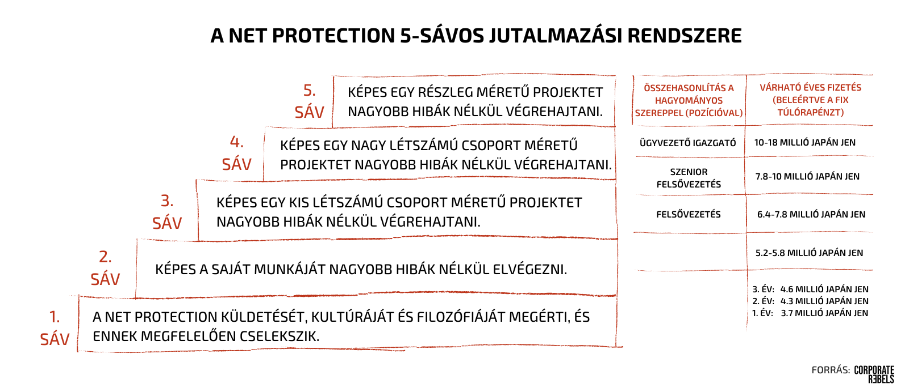</p></div>
			</div><div class="et_pb_module et_pb_text et_pb_text_87  et_pb_text_align_left et_pb_bg_layout_light">
				
				
				
				
				<div class="et_pb_text_inner"><p>Ezenkívül a fizetési sávok teljes egészében nyilvánosak, és egy sávon belül a fizetés félévente egy előre meghatározott mértékben emelkedik, ahogy az természetesen magasabb sávba kerüléskor is nő.</p>
<p>Összességében a munkavállalók jövedelme nem csak az egyéni teljesítménytől függ, sokkal inkább a csapatként való sikeres együttműködéstől és a szakmai alkalmasság bizonyításától, amely a siker és jövedelmezőség kulcsa.</p></div>
			</div><div class="et_pb_module et_pb_text et_pb_text_88  et_pb_text_align_left et_pb_bg_layout_light">
				
				
				
				
				<div class="et_pb_text_inner"><h3>A Natura sikerességének kulcstényezői</h3>
<p>Annak ellenére, hogy a vállalat már túl van egy nagyobb szervezeti átalakításon, a szervezeti felépítés „ellaposítása” és a teljesítményértékelés új alapokra helyezése is igen nagy változás volt, ráadásul be is váltak.</p>
<p>Tehát minek köszönhető a siker? Összességében azt mondanám, hogy három fő tényező játszott benne szerepet.</p>
<p>Az első az <strong>átláthatóság</strong>. A Net Protections a radikális átláthatóságot szem előtt tartva alakította át mind a rendszert, mind a szervezeti kultúrát. A szervezetben valamennyi információ mindenki számára hozzáférhető, ami nagymértékben hozzájárul a dolgozók felelősségvállalásának megerősítéséhez.</p>
<p>A második ilyen tényező <strong>a szervezeti átalakítás </strong>– vagyis a hierarchikus, felülről lefelé építkező „top-down” modellről a lapos és önszerveződő alapon működő szervezeti modellre való átállás –<strong> együttes megtapasztalása</strong>. A szervezeti átalakítás hosszú évekig tartott (és tart a mai napig), de az általános tapasztalatok alapján szüntették aztán meg a menedzseri pozíciókat és határozták meg a katalizátorok feladatkörét.</p>
<p>A harmadik tényező <strong>a vezetői csapat (leadership team) fejlődése</strong>. Az átalakítási folyamat során a vezetők megtanultak bízni a csapattagokban, felismerni az egocentrikus és félelem vezérelt viselkedést, valamint hagyni a munkatársakat, hogy önállóan szervezzék meg a munkájukat.</p>
<h3>A következő lépések?</h3>
<p>Most, a Natura rendszer – és számos más jelentős átalakítás – bevezetése után néhány évvel milyen további lépéseket tervez a Net Protections (már ha egyáltalán tervez)?</p>
<p>A Net Protections vállalat most, hogy már régen túljutott a 2000-ben kezdődött startupszakaszon, a következő növekedési szakaszba lépés előtt új tehetségek alkalmazásával és kinevelésével készül fel az új üzleti lehetőségekre és jövőbeni kezdeményezésekre.</p>
<p>Ezenkívül a nagy gonddal kimunkált vállalati kultúrának és támogatási rendszereknek köszönhetően több, magas beosztású munkatársat is sikerült a vezetőségi csapatba csábítani, többek között a nemrégiben csatlakozott pénzügyi igazgatót, aki meghatározó szerepet játszott a cég részvénytársasággá alakulásában. Ily módon a Net Protections tervei közé tartozik a szervezeti kultúra további kibontakoztatása, valamint a rendszerei naprakészen tartása annak érdekében, hogy bármilyen, a folyamatos üzleti növekedéshez szükséges későbbi változtatáshoz gyorsan tudjon alkalmazkodni.</p>
<p>Forrás: <a href="https://corporate-rebels.com/net-protections/" target="_blank" rel="noopener">Corporate Rebels</a></p></div>
			</div>
			</div>
				
				
				
				
			</div>
				
				
			</div><p>The post <a href="../net-protections-egy-uttoro-szerepet-vallalo-japan-szervezet/">Net Protections, egy úttörő szerepet vállaló japán szervezet</a> first appeared on <a href="https://agiluu.hu">AGILUU</a>.</p>]]></content:encoded>
					
		
		
			</item>
		<item>
		<title>Release-adás stresszmentesen</title>
		<link>https://agiluu.hu/release-adas-stresszmentesen/?utm_source=rss&#038;utm_medium=rss&#038;utm_campaign=release-adas-stresszmentesen</link>
		
		<dc:creator><![CDATA[Marhefka István]]></dc:creator>
		<pubDate>Wed, 24 Aug 2022 08:02:21 +0000</pubDate>
				<category><![CDATA[Agilis szoftverfejlesztés]]></category>
		<category><![CDATA[agilis alapelvek]]></category>
		<category><![CDATA[agilis kultúra]]></category>
		<category><![CDATA[agilis szoftverfejlesztés]]></category>
		<category><![CDATA[cd]]></category>
		<category><![CDATA[CI]]></category>
		<category><![CDATA[commit]]></category>
		<category><![CDATA[continuous delivery]]></category>
		<category><![CDATA[continuous deployment]]></category>
		<category><![CDATA[continuous improvement]]></category>
		<category><![CDATA[DevOps]]></category>
		<category><![CDATA[DevOps-kultúra]]></category>
		<category><![CDATA[fejlesztő csapat]]></category>
		<category><![CDATA[folyamatos fejlődés]]></category>
		<category><![CDATA[high-performing]]></category>
		<category><![CDATA[high-performing csapat]]></category>
		<category><![CDATA[lean kultúra]]></category>
		<category><![CDATA[master branch]]></category>
		<category><![CDATA[potentially shippable product]]></category>
		<category><![CDATA[release]]></category>
		<category><![CDATA[release-adás]]></category>
		<category><![CDATA[release-tervezés]]></category>
		<category><![CDATA[SCRUM]]></category>
		<category><![CDATA[szoftver fejlesztés]]></category>
		<category><![CDATA[TDD]]></category>
		<category><![CDATA[ticketing]]></category>
		<category><![CDATA[ticketing rendszer]]></category>
		<category><![CDATA[Trunk-based development]]></category>
		<guid isPermaLink="false">http://agiluu.hu/?p=10564</guid>

					<description><![CDATA[<p>Hiába dolgozik egy szoftverfejlesztői csapat valamely agilis keretrendszer (leggyakrabban scrum) mentén, sok esetben nincs tényleges élesbe telepítés a sprint végén. Amikor eljön az „igazság pillanata” és a kód az élesítéshez közeledik, lázasan beindul a tesztelés, az aggodalmaskodás, a release-adás közben vagy után pedig jönnek a hibák…<br />
Az élesbe telepítés stresszes folyamat, amelyet sok félelem kísér. Nemzetközi kutatások szerint ez a stressz egy idő után kiégéshez vezethet, vagy egyszerűen nem bírják a fejlesztők, és felmondanak.<br />
Pedig ennek nem kellene így lennie.</p>
<p>The post <a href="../release-adas-stresszmentesen/">Release-adás stresszmentesen</a> first appeared on <a href="https://agiluu.hu">AGILUU</a>.</p>]]></description>
										<content:encoded><![CDATA[<div class="et_pb_section et_pb_section_7 et_section_regular" >
				
				
				
				
				
				
				<div class="et_pb_row et_pb_row_18">
				<div class="et_pb_column et_pb_column_4_4 et_pb_column_22  et_pb_css_mix_blend_mode_passthrough et-last-child">
				
				
				
				
				<div class="et_pb_module et_pb_text et_pb_text_89  et_pb_text_align_left et_pb_bg_layout_light">
				
				
				
				
				<div class="et_pb_text_inner"><p><span>Hiába dolgozik egy szoftverfejlesztői csapat valamely agilis keretrendszer (leggyakrabban scrum) mentén, sok esetben nincs tényleges élesbe telepítés a sprint végén. A csapatok „bezsebelik” a sprint végén a sztoripontot (done = dev complete), de amikor eljön az igazság pillanata és a kód az élesítéshez közeledik, lázasan beindul a tesztelés, az aggodalmaskodás, a release-adás közben vagy után pedig jönnek a hibák…</span></p>
<p><span>Van egy másik gyakori eset is, amikor a csapat gyakran release-el ugyan (például hetente), azonban a release-adás az orosz rulettet idézi: vajon működni fog a rendszer a telepítés után is? A válasz gyakran inkább nem, és a keletkező hibák miatt a fejlesztői csapat hetekig (ha nem hónapokig) újabb feladatokat kap az éles rendszerből tűzoltás jelleggel.</span></p>
<p><span>Mindkét esetre igaz, hogy az élesbe telepítés stresszes folyamat, amelyet sok félelem kísér. </span><a href="https://www.devops-research.com/research.html" target="_blank" rel="noopener">Nemzetközi kutatások</a><span> szerint ez a stressz egy idő után kiégéshez vezethet, vagy egyszerűen nem bírják a fejlesztők, és felmondanak.</span></p>
<p><span>Pedig ennek nem kellene így lennie. A release-adás lehet fenntartható (értsd: zökkenőmentes, tervezhető, normál munkaidőben elvégezhető, üzletileg megtérülő), ezáltal pedig stresszmentes, és közben nem fog lassulni a szállítás. Ennek kulcsa a</span><span> minél gyakoribb release-adás</span><span>, ami a </span><a href="../continuous-delivery-1/" target="_blank" rel="noopener">Continuous Delivery</a><span> (CD) alkalmazásával valósítható meg, amihez elengedhetetlen a szervezet egészében a műszaki kiválóságra való törekvés. Ehhez pedig a fejlesztés és az üzleti oldal partneri együttműködése szükséges, és az, hogy az utóbbi is értsen valamennyire a fejlesztéshez (hogy mennyire, azt ld. majd egy későbbi cikkben). </span></p>
<p><span>Minél nagyobb a szervezet, annál nagyobb kihívás a változás, ami véleményem szerint fokozatosan, hosszú távú folyamatként az aktuálisan rendelkezésre álló büdzsével megvalósítható. </span></p>
<p><span>Megjegyzés: A cikk szerveroldali alkalmazások fókusszal íródott, de az elvek felhasználhatóak más alkalmazások esetében is (pl. mobil, beágyazott rendszerek, desktop alkalmazások), szervezetileg pedig ugyanazok a szempontok továbbra is érvényesek.</span></p>
<p><span></span></p></div>
			</div><div class="et_pb_module et_pb_text et_pb_text_90  et_pb_text_align_left et_pb_bg_layout_light">
				
				
				
				
				<div class="et_pb_text_inner"><h3><span>A scrum és az üzleti agilitás nem elég, a műszaki kiválóság is ugyanolyan fontos</span></h3>
<p><span>Az agilis transzformációs törekvések során nagy hangsúlyt fektetnek a menedzsment részekre (product management, value streamek mentén történő business process reengineering), de a csapatokban a műszaki kiválóság elérésén általában már nincs elég hangsúly.</span><span> </span></p>
<p><span>Gyakori például a scrum keretrendszer bevezetése, aminek egyik alappillére a megfelelően lebontott product backlog, ami alapján a csapat sprintről sprintre a user storykat implementálhatja. A scrum arról viszont nem mond semmit (nem is tisztje), hogy hogyan lesz valójában képes a csapat arra, hogy gyakran és stabilan szállítson éles környezetbe.</span></p>
<blockquote>
<h5 style="text-align: left;"><span><em>Attól, hogy „leszállított” valamit a csapat a review-ra, attól még ki is meri élesíteni a rendszert? – Ha erre „nem” a válasz, az azt jelenti, hogy a csapat nagy valószínűséggel nem valósítja meg a Continuous Deliveryt.</em></span></h5>
</blockquote>
<p><span></span>Gyakran látom azt, hogy új üzleti funkciók fejlesztése esetén akár hónapokig is eltart, mire egy újabb verziót kitelepítenek a csapatok éles környezetbe, és közben meg mennek a sprintek folyamatosan, azt mutatva, hogy keményen megy a szállítás. </p>
<p><span>Sajnos, amíg nincs élesbe telepítés, addig biztosra vehetjük, hogy nincsenek készen a jóváírt sztoripontú sztorik, és jelentős munka szükséges még az élesítéshez: tesztelés, hibajavítások, éles telepítésre és működésre történő felkészítés (pl. performancia javítás, security issue-k megoldása, konfigurálhatóság, automata telepítő szkriptek elkészítése, adatbázismigráció). </span></p>
<p><span>Ahhoz, hogy a csapatok képesek legyenek gyakran release-elni, szükséges az is, hogy szervezeti szinten a műszaki kiválóságnak teret engedjenek, sőt, ez elvárás is legyen a teljes szervezetben, másképpen egy-egy csapat igen nehezen fog tudni érvényt szerezni az általuk fontosnak tartott műszaki szempontoknak. </span></p></div>
			</div>
			</div>
				
				
				
				
			</div><div class="et_pb_row et_pb_row_19">
				<div class="et_pb_column et_pb_column_4_4 et_pb_column_23  et_pb_css_mix_blend_mode_passthrough et-last-child">
				
				
				
				
				<div class="et_pb_module et_pb_text et_pb_text_91  et_pb_text_align_left et_pb_bg_layout_light">
				
				
				
				
				<div class="et_pb_text_inner"><h3><span>Milyen műszaki gyakorlatokat követnek a technikai kiválóságot megvalósító szervezetek?</span></h3>
<p><span>A </span><a href="https://cloud.google.com/blog/products/devops-sre/announcing-dora-2021-accelerate-state-of-devops-report" target="_blank" rel="noopener"><span>DORA &#8211; State of Devops kutatás</span></a><span>t több mint 32.000 DevOps szakember bevonásával végezték világszerte már több alkalommal. Azt kutatták, hogy mik azok a gyakorlatok, amiket a különféle vállalatok alkalmaznak annak érdekében, hogy gyorsan szállítsanak. (Az </span><a href="https://www.amazon.com/Accelerate-Software-Performing-Technology-Organizations/dp/1942788339" target="_blank" rel="noopener"><span>Accelerate</span></a><span> c. könyv ismerteti részletesen a kutatás eredményeit és az abból levonható konklúziókat.)</span></p>
<p><span>A kutatás során először is definiálniuk kellett a szállítási teljesítmény fogalmát, hogy összehasonlíthatóak legyenek a különféle csapatok, akiktől a válaszok érkeztek.</span></p>
<p><span>Ha már a scrumról esett szó, a leszállított sztoripontok nyilvánvalóan nagyon rossz metrikát szolgáltattak volna, hiszen ha benchmarkot szeretnénk, akkor nem összehasonlíthatóak sztoripont alapján a különféle csapatok (még egy szervezeten belül sem), mert a sztoripont egy relatív mértékegység, amit a csapat a saját működéséhez alakít ki. Másrészt pedig – ahogy említettem korábban –, nem is biztos, hogy a csapatok tényleg élesbe is szállítanak egy-egy sprint végén (arról nem is beszélve, hogy sokan nem használnak egyáltalán scrumot).</span></p>
<p><span>Négy dimenziót azonosítottak be a kutatásban, amik együttes mérése egyértelműsíti a szállítási teljesítményt, és ez lehetőséget biztosít az objektív összehasonlítására:</span><span> </span></p>
<ul>
<li><span>Milyen gyakran történik élesbe telepítés? (deployment frequency)</span></li>
<li><span>Mennyi ideig tart, amíg a fejlesztő commitja kikerül éles környezetbe? (lead time for changes)</span></li>
<li><span>A szolgáltatás leállása esetén mennyi ideig tart a szolgáltatás visszaálláítása? (Time to restore service)</span></li>
<li><span>Élesbe telepítés során milyen gyakorisággal történik szolgáltatás károsodás vagy -leállás? (Change failure rate)</span></li>
</ul>
<p><span>Ezen négy dimenzió mentén a válaszok alapján a csapatokat – teljesítményüket tekintve – 4 szintbe sorolták: elite, high, medium és low.</span></p></div>
			</div><div class="et_pb_module et_pb_text et_pb_text_92  et_pb_text_align_left et_pb_bg_layout_light">
				
				
				
				
				<div class="et_pb_text_inner"><p></p></div>
			</div><div class="et_pb_module et_pb_text et_pb_text_93  et_pb_text_align_left et_pb_bg_layout_light">
				
				
				
				
				<div class="et_pb_text_inner"><p><span>Az elite csoportban lévők naponta többször is telepítenek éles környezetbe, míg a high csoportban lévők is heti 1 és havi 1 közötti gyakorisággal.</span><span> </span></p>
<p><span>Akiknek nem volt még tapasztalatuk ilyen sebesség elérésével, jogosan „felhördülhetnének”, és azt mondhatják: minek telepíteni többször is éles környezetbe egy nap? Nem változnak ennyit a követelmények!</span></p>
<p><span>Úgy tűnik, üzletileg nem indokolt, hogy ennyire gyakran release-eljünk, de ez így nem igaz.</span><span> </span></p>
<p><span>A DORA kutatás kiemeli, hogy azon cégek, akik az elite vagy high csoportba tartoznak, azok 2,5x nagyobb valószínűséggel valósítják meg az üzleti céljaikat, mint azok, akik a medium vagy low csoportba.</span></p>
<p><span>A következő kifogás, amit szoktam hallani a gyakori release-ek ellen, hogy persze, a „játék” startupok meg tudják csinálni, de a mi cégünk, akiknek meg kell felelniük a különféle piaci szabályzóknak (pl. bankoknál MNB) nem tudnak ilyet tenni. Sajnos vagy nem, de megint a DORA kutatásra hivatkozom, ami azt állítja, hogy nem függ az iparágtól és szektortól, hogy ki milyen gyakran telepít élesbe, mert vannak példák erősen szabályozott (pl. pénzügyi) környezetben dolgozó cégekről is, akik megvalósítják a gyakori release-adást stabil szállítás mellett. (Ld. fenti táblázat: akkor tudsz gyors lenni, ha stabil is vagy, illetve nem tudsz stabil lenni, ha nem vagy gyors is.)</span></p></div>
			</div><div class="et_pb_module et_pb_text et_pb_text_94  et_pb_text_align_left et_pb_bg_layout_light">
				
				
				
				
				<div class="et_pb_text_inner"><h3><span>Egyáltalán milyen előnyünk származik abból, ha gyakran release-elünk?</span></h3>
<p><span>A gyakori release-adás (legfeljebb havonta 1x, de akár naponta vagy hetente többször is) többféle előnnyel jár. Egyrészt kis változások kerülnek ki, ezért sokkal kisebb az esélye, hogy valami elromlik, mintha egyszerre sok mindent változtatnánk. Ez talán elsőre nem tűnik evidensnek, hiszen azt is gondolhatnánk, hogy ha gyakran release-elünk, akkor gyakrabban romlik el valami. Nincs értelme eszetlenül tolni ki a release-eket, ha közben hibát hibára halmozunk.</span></p>
<p><span>Ez igaz, ezért a gyakori release-adásnak csakis akkor van értelme, ha közben olyan fokú tesztautomatizációt tudunk elérni, ahol a tesztek gyorsan lefutnak, és ha azok lefutottak, akkor bízhatunk abban, hogy nagy valószínűséggel élesben sem lesz nagy probléma a korábban már szállított funkciókkal. Ha egy ilyen test suite-ot felépítettünk, akkor az magabiztosságot tud adni a teljes csapatnak, és az ő stabil és gyors szállításukon keresztül a teljes szervezetnek is.</span></p>
<p>Az is fontos, hogy élesítés után is gyorsan, egyértelműen információt szerezhessünk a futó rendszerről, hogy az a tervezettek szerint működik (vagy ha hiba van, akkor mi a hiba oka), így még a felhasználók előtt tudomást szerezhetünk arról, ha valami &#8222;félre ment&#8221;, és van lehetőségünk korrigálni.<span></span></p>
<p><span>Szóval a gyakori release-ek tulajdonképpen csökkentik a kockázatot, hiszen ha hónapokig fejlesztünk valamit, akkor abban nagyon sok változás lesz, és nagyon nehéz megjósolni azt, hogy vajon ezek a változások hol rontják el majd a most élesben futó verzió jó működését. Nagyvállalatok ilyenkor gyakran teljes regressziós tesztelésbe kezdenek, ami igazán költséges, mert sok időt visz el ezzel feltartva nem csak az adott csapatot, hanem minden más rá épülő rendszer élesítését is, és ráadásul ugyanúgy nincs garancia arra, hogy nem lesznek hibák. Szóval élesbe telepítés után – akármennyit teszteltünk is – jöhetnek a váratlan hibák, amiket nem tudunk gyorsan javítani, mert nem a gyakori release-adásra vagyunk felkészülve.</span></p>
<blockquote>
<h5 style="text-align: left;"><span><em>Másképpen megfogalmazva: a gyakori és stabil release-eknek előnye a gyors feedback loop.</em></span></h5>
</blockquote>
<p><span></span>Ismeretes, hogy minél később fedezünk fel egy hibát, annak a kijavítása annál költségesebb. Valójában <a href="https://www.ambysoft.com/essays/whyAgileWorksFeedback.html" target="_blank" rel="noopener">exponenciálisan nő</a> a hiba létrehozása és annak észrevétele közötti idő függvényében a hiba kijavításának a költsége. Ezért, ha gyakran release-elünk, akkor hamar észrevehetjük a potenciális hibát is. Pl. ha hetente van a release, és valami hiba történik, akkor arra még van esély, hogy emlékezzünk, mit csináltunk az elmúlt 1 hétben, viszont hónapok távlatából ez már esélytelen.</p></div>
			</div><div class="et_pb_module et_pb_text et_pb_text_95  et_pb_text_align_left et_pb_bg_layout_light">
				
				
				
				
				<div class="et_pb_text_inner"><p></p>
<p><span>Forrás: </span><a href="https://www.ambysoft.com/essays/whyAgileWorksFeedback.html" target="_blank" rel="noopener">https://www.ambysoft.com/essays/whyAgileWorksFeedback.html</a></p></div>
			</div><div class="et_pb_module et_pb_text et_pb_text_96  et_pb_text_align_left et_pb_bg_layout_light">
				
				
				
				
				<div class="et_pb_text_inner"><p><span>A tudatosan felépített gyors és stabil feedback loopok magas fokú produktivitást tesznek lehetővé, és egyben a hibák javításának költségét is nagyságrendekkel csökkentik. Ezekkel egyidejűleg pedig óriási motivációs hatással bírnak, hiszen:</span></p>
<ul>
<li><span>azonnali visszajelzést kap a csapat a lefejlesztett funkciók helyességéről,</span></li>
<li><span>ezáltal folyamatosan biztonságban érezhetik magukat, ez a velük együtt dolgozó csapatoknak, személyeknek is biztonságérzetet nyújt,</span></li>
<li><span>folyamatos haladás érzetet élnek meg,</span></li>
<li><span>sokkal kevesebb lesz később a tűzoltás, kevesebb a stressz, </span></li>
<li><span>emiatt pedig sokkal több lesz az ún. deep work, azaz elmélyült munkavégzés, ami által gyakrabban megélhető a flow-élmény. </span></li>
</ul></div>
			</div><div class="et_pb_module et_pb_text et_pb_text_97  et_pb_text_align_left et_pb_bg_layout_light">
				
				
				
				
				<div class="et_pb_text_inner"><h3><span>Milyen hátrányunk származik abból, ha gyakran release-elünk?</span></h3>
<p><span>A gyakori release-adás ellen szólhat, hogy ha gyakran release-elünk, instabillabb lesz a rendszerünk, hiszen minden release egy potenciális veszélyforrás. Szemben, ha ritkán release-elünk, akkor a release környékén (előtte és utána) stresszt tapasztalunk, de ha az élesítés utáni hetekben stabilizáltuk a rendszert, akkor tulajdonképpen már nem lesz nagy gond a rendszerrel.</span></p>
<p><span>Az instabilitásból természetesen komoly problémák származhatnak, gondoljunk csak egy rosszul sikerült adatbázismigrációra, ami esetleg adatvesztéssel jár, amit kvázi lehetetlen szolgáltatás leállás nélkül javítani, hiszon azok a felhasználók, akiket érint, nem fogják tudni elérni a rendszert, amíg az adatokat valahogy vissza nem állították. Sok esetben még az is sokáig tart, mire egy incidens kapcsán beazonosítják az érintett felhasználók körét.</span></p>
<p>&nbsp;</p></div>
			</div><div class="et_pb_module et_pb_text et_pb_text_98  et_pb_text_align_left et_pb_bg_layout_light">
				
				
				
				
				<div class="et_pb_text_inner"><h3><span>A Continuous Integration nélkül nincs Continuous Delivery</span></h3>
<p><span>A Continuous Delivery azt jelenti, hogy a kód (lényegében) bármikor release-elhető állapotban van. Más megfogalmazásban, minden commit egy release candidate, aminek alkalmasságát az ún. deployment pipeline vizsgálja meg minden commit esetén. A deployment pipeline nagy része automatizálható (pl. buildelés, image-készítés, automata teszt futtatás, deployment szkriptek futtatása stb.), de egy része lehet manuális is (pl. manuális tesztelés, nyomógomb megnyomása az élesbe telepítéshez.) </span></p>
<p><span>Ennek megvalósításához a fejlesztői csapat szakmai felkészültsége, a </span><span>műszaki kiválóság </span><span>és az erre való szervezeti szintű törekvés</span> <span>kritikus tényező. Ennek kulcsa pedig, hogy a </span><a href="../continuous-delivery-1/" target="_blank" rel="noopener">Continuous Delivery</a><span> (CD) elveivel is tisztában legyünk és azt a gyakorlatba is át tudjuk ültetni. A CD megvalósítása mindenképpen erőfeszítést igényel, sokszor komfortzónából való kilépéssel nem csupán technikai, hanem szervezeti értelemben is. Hogy mást ne említsek: </span></p>
<blockquote>
<h5><span><em>Mindig fontosabb lesz az üzleti funkciókat termelni, mint „láthatatlan” technológiai feladatokon dolgozni, amiket nem ért a management.</em></span></h5>
</blockquote>
<p><span>A Continuous Delivery – definíciója miatt (bármikor release-elhető a kód) – nem megvalósítható </span><a href="../continuous-integration-01/" target="_blank" rel="noopener"><span>(valódi) Continuous Integration (CI)</span></a><span> nélkül. CI esetén mindenki merge-öl a masterre naponta legalább egyszer, ezek a változtatások pedig a build szerveren automata buildet és tesztelést indítanak, amik rövid időn belül visszajelzést adnak a keletkező hibáról (ha van), ezen hibák pedig azonnal javításra kerülnek (10 percen belül, akár rollback segítségével).</span></p>
<p><span>Tipikus probléma CI kapcsán, hogy nem jók a tesztek, mert:</span></p>
<ul>
<li><span>a tesztek lassan futnak (több óra is kell nekik),</span></li>
<li><span>a tesztek külső rendszereket használnak (emiatt a tesztelési folyamat leáll vagy még rosszabb, megbízhatatlanná válik, ha valamelyik külső rendszer egyszer elérhető, egyszer nem),</span></li>
<li><span>a tesztek nem adnak teljes képet a rendszer helyességéről (alacsony tesztlefedettség),</span></li>
<li><span>átláthatatlanul megírt tesztek, sok duplikáció, mert a csapat nem karbantartja a teszteket, ezáltal romlik a minőség (a tesztek tisztán tartása legalább olyan fontos, mint a produkciós kódé!),</span><span> </span></li>
<li><span>instabil tesztek (flaky tests), amik minden előzmény nélkül kiszámíthatatlan módon törnek. Ilyenkor általában valamilyen időzítési vagy hálózati probléma áll a tesztek törésének hátterében (timeout). Tipikusan ilyenek a különféle felhasználói felület tesztek (UI tesztek, pl. Selenium tesztek), vagy olyan integrációs tesztek, amelyek külső rendszereket hívnak,</span></li>
<li><span>nem világos, milyen stratégiával készülnek a tesztek: mire készül unit, integrációs teszt, mire UI, mit tesztelünk manuálisan, mit canary release-zel (ld. később), mit feature toggle-lel (ld. később) – a koncepció hiánya miatt lyukak keletkeznek a rendszeren és/vagy nem lesz hatékony a tesztelés.</span></li>
</ul>
<blockquote>
<h5><span><em>Continuous Integration szempontjából az a jó automata tesztkészlet, ami a fejlesztő gépén is gyorsan lefut úgy, hogy a teszteknek nincs szüksége hálózati kapcsolatra. Azaz, lefutnak úgy, hogy a hálókábel le van húzva (vagy a WiFi ki van kapcsolva).</em></span></h5>
</blockquote></div>
			</div><div class="et_pb_module et_pb_text et_pb_text_99  et_pb_text_align_left et_pb_bg_layout_light">
				
				
				
				
				<div class="et_pb_text_inner"><h3><span>Hogyan valósul meg a gyakori release adás a legacy rendszereknél?</span></h3>
<p><span>A </span><a href="https://understandlegacycode.com/blog/what-is-legacy-code-is-it-code-without-tests/" target="_blank" rel="noopener">legacy rendszerek</a> <span>szintén komoly korlátot szabnak a gyakori release-adásnak. Michael Featherstől, aki a <a href="https://www.amazon.com/Working-Effectively-Legacy-Michael-Feathers/dp/0131177052" target="_blank" rel="noopener">Working Effectively with Legacy Code</a> c. könyv szerzője származik a következő definíció:  </span></p>
<blockquote>
<h5><em>Minden</em><span><em> olyan rendszer legacy rendszer, ami nincs tesztekkel lefedve.</em> </span></h5>
</blockquote>
<p><span>Így az a rendszer, amin egy fejlesztői csapat dolgozik úgy, hogy nem ír hozzá teszteket (mert nagy rajtuk a nyomás, vagy mert nem akarnak, vagy mert nem tudják, hogy szükség lenne rájuk – az ebből a szempontból most mindegy), az így sajnos azonnal legacy rendszerré válik. A legacy rendszerekben nincs olyan &#8222;biztonsági háló”, ami garantálná, hogy hiba esetén az automata tesztek eltörve mutatnák a meghibásodást, így nem valósítható meg a Continuous Integration és – így rajta keresztül – a Continuous Delivery sem.</span></p>
<p><span>Legacy rendszereknél az automata teszteket fokozatosan, a normál fejlesztés mellett beütemezve, fenntarthatóan és tervezetten lehet bevezetni. Az elején gyors sikereket lehet elérni (core üzleti folyamatok happy path lefedettsége), amik jelentősen növelik a stabilitást, azonban egy komolyabb lefedettség elérése (úgy, hogy rövid idő alatt fussanak a tesztek, azok megbízhatóan fussanak és karbantarthatóak legyenek) már komoly ráfordítást igényelhet, és akár hónapokig is eltarthat, ezért a tesztelés mindenképpen megfelelő stratégiát és tervezést igényel, amit üzleti szempontok mentén szükséges megtenni. </span></p>
<p><span>Mivel az automata tesztek hiányában nem valósulhat meg a Continuous Integration, hiszen a kód napi szintű integrációját nincs semmi, ami biztosítaná, ezért is nagyon fontos, hogy határozott lépésekben zárkózzon fel a csapat a produkciós kód tesztekkel történő lefedettségében.</span></p>
<p><span>A megírt automata tesztek mellé egy alap deployment pipeline-t is ki kell alakítani, ami a kód buildelését és az automata tesztek futtatását <strong>megbízhatóan</strong> elvégzi. Egy ilyen pipeline-ba hamar beköthető statikus kódelemzés is, ami további visszajelzéseket (pl. kódkomplexitás, sérülkénységi kockázatok aka DevSecOps) tud adni a csapatnak. Ezt szintén lehet a későbbiekben továbbfejleszteni és pl. triggerelten automatán deploymentet végrehajtani az egyes környezetekbe.</span></p>
<p><span>A kódbázis pragmatikus refaktorálása is ajánlott lehet (általában nem újra írásra van szükség), ezt szintén üzleti megfontolások alapján érdemes elvégezni. A QA folyamatokat pedig a manuális ellenőrzés irányából az automata tesztelés irányába szükséges tolni a gyakori release-adás megvalósítása érdekében.</span><span> </span></p>
<p><span>Kihívás, hogy a UI és API tesztek nem szoktak stabilan működni (flaky tests) és lassúak is. Ezek kerülendők, de legacy rendszereknél sajnos nehéz a kódbázis részeként megvalósítani az egyes részek tesztelését (a környezet teljes feállítása nélkül), mert nem így lettek implementálva.</span></p>
<p><span></span></p></div>
			</div><div class="et_pb_module et_pb_text et_pb_text_100  et_pb_text_align_left et_pb_bg_layout_light">
				
				
				
				
				<div class="et_pb_text_inner"><h3><span>Gyakori release-adás outsourcing esetén</span></h3>
<p><span>A DORA riport egyértelműen megállapítja, hogy olyan rendszereket, amelyek a cég üzletileg kritikus rendszerei, ne bízzunk teljesen egészében </span><span>külső beszállítókra </span><span>(outsourcing). Egyszerűen azért, mert külső beszállítókkal nem fogunk tudni napi vagy heti release-ek fenntartható módon fejlesztetni a beépítendő átadásátvételi/QA folyamat miatt.</span><span> Vagy ha ezzel nem törődünk, akkor van egy óriási függőségünk a beszállítótól (vendor lock-in).</span></p>
<p><span>Hibrid megoldásként működhet az, hogy a csapatba a belsősökön túl külsősöket is delegálunk megfelelő arányban.</span></p></div>
			</div><div class="et_pb_module et_pb_text et_pb_text_101  et_pb_text_align_left et_pb_bg_layout_light">
				
				
				
				
				<div class="et_pb_text_inner"><h3><span>Projekt vs. termék szemléletmód</span></h3>
<p><strong>Projekt alapú működés </strong><span>szintén egy erőteljes korlátozó tényező lehet a gyakori release-ek tekintetében. A projekttagok (élén a projektvezetővel) sok esetben arra koncentrálnak, hogy a kitűzött projekt legyen sikeres: azaz időre leszállítsák a rendszert „átpasszírozva” azt a QA folyamaton.</span><span> </span></p>
<p><span>A projekt rugalmatlansága miatt (határidő, scope) mindenki azon igyekszik, hogy minél hamarabb letudja a feladatát: teszteket nem biztos, hogy írnak, vagy nem jó minőségben. A csapat nem törekszik a fenntartható megoldásra, számukra a projekt teljesítése fontos (rövid távú szempont). A rendszer későbbi üzemeltetéséért és tovább fejlesztéséért ők már nem vállalnak felelősséget (átdobják a rendszert a falon az üzemeltetőknek).</span></p>
<p><span>A probléma megoldása nem könnyű, hiszen a projekt alapú működés valószínűleg a szervezet mélyéből fakad. A megoldás során felszínre kerül az éves büdzsétervezés és a teljes kontrolling rendszer tehetetlensége, és nem ritkán a tulajdonosi kör is érintett ebben a kérdéskörben.</span></p>
<p><span>A projektalapú szemléletet termék alapú szemlélettel célszerű felváltani. Dedikált csapattal (projekteken átívelően) vagy – kompromisszumosan – dedikált emberekkel törekedni lehet a fenntartható működésre, mert ezek a dedikált csapattagok abban lesznek érdekeltek, hogy olyan rendszert készítsenek, amivel nekik később nem lesz problémájuk. A dedikált emberek között üzemeltetők is lehetnek.</span></p></div>
			</div><div class="et_pb_module et_pb_text et_pb_text_102  et_pb_text_align_left et_pb_bg_layout_light">
				
				
				
				
				<div class="et_pb_text_inner"><h3><span>Inkrementális fejlesztés, azaz a feature-ök „leszeletelése”</span></h3>
<p><span>Akik nem csináltak még gyakori release-adást, sokszor nem tudják elképzelni, hogy hogyan lehetséges azt megvalósítani, hogy fejleszt valamit a fejlesztő, ami még nincs kész, nincs is letesztelve, és mindenképp megy a heti release. (Branchen továbbra sem tartunk semmit, a fejlesztők legalább naponta merge-ölnek a masterre a Continuous Integration elvei szerint. Ideális esetben <a href="https://trunkbaseddevelopment.com/" target="_blank" rel="noopener">trunk-based development</a> történik, azaz azonnal a masterre commitál mindenki. Legacy rendszerek esetén a korábban említett módon minél hamarabb fel kell zárkóztatni a tesztlefedettséget, hogy megvalósulhasson a CI.)</span></p>
<p><span>A &#8222;félkész” feature-ök ugyanúgy a kódbázis részei, azonban feltételes elágazásokkal (kapcsolók) el vannak rejtve a felhasználók elől, ill. csak egy bizonyos felhasználói kör számára (pl. maga a fejlesztői/tesztelői csapat számára érhetőek el). Így a fejlesztők napi szinten commitálnak ugyan a masterre (masterre, mainre, trunkra), de a &#8222;</span><a href="https://featureflags.io/feature-flag-introduction/" target="_blank" rel="noopener"><span>Feature Toggle</span></a><span>”-ök (vagy Feature Flagek) segítségével konfigurálhatóvá teszik, hogy az adott feature elérhető legyen-e a userek számára vagy sem.</span><span> </span></p>
<p><span>Ez customer facing alkalmazások esetén sok esetben azt jelenti, hogy egy új nyomógombot kiraknak-e a UI-ra vagy sem, backend alkalmazásoknál az API-hívásnál visszautasítják a beérkező kérést stb.</span></p>
<p>A Feature Toggle-ök segítségével magának az alkalmazásnak a bináris imidzse release-elve lesz (deployment), de magának a feature-nek release-elése (tehát hogy látszik-e az adott release a felhasználók számára) késleltetésre kerül. Ez lehetőséget biztosít különféle tesztelésekre az éles környezetben (pl. performancia tesztelés, valódi felhasználóktól visszajelzések gyűjtése).<span></span></p>
<p><span>A konfigurációt lehet egyszerűen és bonyolultan is megvalósítani. Pl. tárolhatjuk DB-ben, hogy az alkalmazás az adott környezetben támogatja-e az adott funkciót (ezt menet közben ki-be kapcsolhatjuk), de ez a beállítás lehet konfigurációs állomány része is, vagy akár egy központi szolgáltatás is “megmondhatja”, hogy egy adott rendszer, adott felhasználójának (vagy felhasználói csoportjának) van-e jogosultsága arra, hogy az új (kísérleti) funkciót elérje.</span><span> Mindegyiknek megoldásnak van előnye, hátránya, célszerű adott környezetben kezdetben a legegyszerűbbet választani.</span></p>
<p><span>A Feature Toggle-ök nagyon hasznosak, de egyben nagyon károsak is lehetnek, ha nem figyelünk oda rájuk. Ha sok feltételes elágazás kerül be a kódba a toggle-ök miatt, az kombinatorikus robbanást eredményezhet a kódbázisban, amelynek eredményeképpen jelentősen megnő a tesztelendő elágazások száma, ami a végén átláthatatlan/tesztelhetetlen rendszert fog eredményezni.</span></p>
<p><span>A Feature Toggle-öket ezért lehetőség szerint minél kevesebb ideig szabad használni egy-egy feature-nél, ezért kritikus fontosságú a tervezés: az epic-ek méretét minimalizálni szükséges, vagy másképpen megfogalmazva: törekedjünk egy-egy feature esetén a minimálisan életképes változat elkészítésére, amit addig elrejtünk feature-toggle-lel, amíg azt ki nem fejlesztjük. Ha pedig kész, akkor kivesszük a toggle-t, és inkrementálisan fejlesztünk tovább apró lépésekben. Kritikusak a jól meghatározott user storyk, ami kicsi részekre szeletelnek egy nagyobb epicet is.</span><span></span></p>
<p><span>Elkészült új feature-ök rolloutja esetén érdemes lehet a Canary Releasing technikáját is alkalmazni (Feature Toggle alternatívájaként), azaz a felhasználók egy töredékének kiajánlani a funkciót az élesben (</span><a href="../teszteles-elesben-esettanulmany/" target="_blank" rel="noopener">tesztelés élesben</a><span>). A visszajelzések alapján pedig lehet javítani a hibákat vagy kiterjeszteni a funkciót a többi felhasználóra (fokozatosan). A Canary Releasing esetén infrastruktúra szintjén választják szét a futó szerveralkalmazások verzióját, ezért alkalmas lehet infrastruktúra szintű változtatások tesztelésére is (ez a Feature Toggle esetében nem lehetséges).</span><span></span></p>
<p><span>Hajmeresztőnek tűnhet elsőre az &#8222;élesben tesztelés&#8221;, hiszen a megírt automata tesztekkel pont azt szeretnénk elkerülni, hogy ne élesben jöjjenek ki a hibák, de valójában a Feature Toggle és a Canary Releasing is kontrollált és biztonságos módja a tesztelésnek (amennyiben jól alkalmazzuk). Természetesen nem minden rendszernél és cégnél van erre lehetőség, de érdemes challenge-elnünk magunkat, mert lehet, hogy meglepődünk, hogy mégis tudjuk ezt a módszert alkalmazni. Készüljünk fel arra azért, hogy erről majd meg kell tudnunk győzni jó pár embert a cégnél (QA, üzleti emberek), de ha ez sikerült, és a koncepció is beválik, az sokat fog gyorsítani egy-egy feature bevezetésén, és sokkal nagyobb magabiztosságot is fog adni, hiszen egyből élesből kapunk visszajelzést.</span></p>
<p>Az élesben tesztelés egyik fontos eleme, hogy az alkalmazás monitorozásánál ne csupán a technikai hibák felmerülésére (vagy inkább azok hiányára) összpontosítsunk, hanem bizonyos fő üzleti metrikák (KPI-ok) monitorozására is. Ha ezek elmozdulást mutatnak a normál tartományhoz képest, akkor feltételezhetjük, hogy valami probléma van a rendszerrel. Példaként említhetek pl. egy nagy forgalmú e-commerce site-ot, ahol monitorozhatjuk a percenkénti megrendelések számát. Ha deployment után ebben nagy változást találunk, akkor szinte biztos, hogy valami baj történt az élesítés során.  <span></span></p>
<p><span>A Canary Releasing technikáját alkalmazzák a nagy cégek (pl. Facebook is) egy-egy funkció bevezetésénél. Vegyük észre, hogy szoftverszállítás esetén nem csak az a kérdés, hogy van-e “programozási” hiba a szoftverben, hanem az is, hogy a felhasználók hogyan reagálnak egy-egy változásra pl. ergonómiai szempontból. Ezt a típusú tesztelést egy belső QA csapat sok esetben nem tudja ellátni. </span></p>
<p><span></span></p></div>
			</div><div class="et_pb_module et_pb_text et_pb_text_103  et_pb_text_align_left et_pb_bg_layout_light">
				
				
				
				
				<div class="et_pb_text_inner"><h3><span>Függőségek</span></h3>
<p><span>A fejlesztett rendszer függhet egy másik fejlesztés alatt álló rendszertől, ill. maga a fejlesztett rendszer is függősége lehet más rendszereknek. </span></p>
<p><span>Mit jelent ez? Van pl. egy másik rendszer, ami szolgáltat nekünk (és másoknak is) egy API-t, amire mi számítunk egy új feature-nél, így addig a mi feature-önk se fog működni, amíg a másik rendszerben lévő API-hívás nem működik.</span><span> (Ilyenkor erősen megfontolandó, hogy mi nem fejlesztünk-e ki valamilyen csökkentett funkcionalitást átmenetileg, amíg a másik rendszer el nem készül. A time-to-market javul, és a költségek is valószínűleg csökkennek, hiszen hamarabb kapunk visszajelzést a rendszerünkről a tesztelőktől és a valódi felhasználóktól.)</span></p>
<p><span>Nem kell mondani, hogy a gyakori release-adást igencsak megnehezítheti a rendszerek közötti függőségek kezelése. A korábban említett Feature Toggle-ök segítségével ugyan technikailag ez is áthidalható (tehát attól, hogy még nem áll rendelkezésre a másik rendszerben az új API-hívás, attól mi még release-elünk, de nálunk is ki lesz kapcsolva a feature), azonban a függőségek kezelése általában túlmutat egyetlen csapaton, és több csapat/szakértő munkájának összehangolását igényli.</span></p>
<p><span>Valójában: </span></p>
<blockquote>
<h5><span><em>A megfelelő vállalati architektúra kialakítása mindenképpen stratégiai kérdés.</em></span></h5>
<h5><span><em>A cél az olyan architektúra irányába történő elmozdulás, ami a lazán csatolt rendszereket részesíti előnyben, így az architektúra decentralizálásra kerül és az egyes rendszerek fejlesztői csapatok munkájának egymástól függetleníthető.</em></span></h5>
</blockquote>
<p><span>A microservice architektúra túl-hype-olt, jelentősége véleményem szerint sokkal kisebb, mint azt sokan gondolják, több szempontból is. </span></p>
<p><span>A legtöbb csapat sajnos monolit alkalmazást sem készít</span><span> megfelelően (clean code, refaktorálás, test driven development, valódi Continuous Integration), az elosztott rendszerek készítése (mint amilyet a microservice architektúra is eredményez) pedig legalább egy nagyságrenddel bonyolultabb feladat, amivel a fejlesztők nagy részének (meg merem kockáztatni, hogy 99%-nak) nincs igazán tapasztalata. Elég csak megkérdezni, hogy az eddigi monolit rendszerben lévő adatbázis tranzakciót hogyan kívánja megvalósítani egy-egy feature esetében microservice architektúrában, és máris üveges tekinteteket láthatunk magunk előtt. </span></p>
<p><span>Arra szeretném még felhívni a figyelmet, hogy ez (szakmai minőségi probléma) nem csak a fejlesztők miatt van így, hanem amiatt a nyomás miatt is, ami rájuk nehezedik attól az elvárástól, hogy gyorsan szállítsanak. És így most megint csak visszakanyarodtam oda, hogy az üzleti oldalnak is értenie kell valamennyire, hogy hogyan működik a fejlesztés, ill. a két terület közötti együttműködés során minél inkább a partnerség jellemző, annál jobb döntések fognak születni a fejlesztendő rendszerrel kapcsolatosan is.</span></p>
<p><span>Üzemeltetési szempontból pedig általában még nagyobb lemaradása szokott lenni a cégeknek a fejlesztőkhöz képest, amit a microservice architektúra csak még rosszabbá tesz, ami a teljes üzembiztonságot veszélyeztetheti. Ennek oka, hogy az üzemeltetést (ha külön szervezet) költséghelynek tekintik, és külön menedzselik, és a cél emiatt hogy minél olcsóbb legyen, nem az, hogy jobb.</span></p>
<p><span>Sokkal fontosabb lenne a megfelelő csapat topológia (</span><a href="https://teamtopologies.com/" target="_blank" rel="noopener">team topologies</a><span>), azaz először is: csapatokat hosszú távon hozzárendelni az egyes rendszerekhez termék szemléletben, másodszor pedig a csapatokat és a rendszereket úgy összerendelni, hogy a kognitív terhelés ne legyen magas az embereken.</span></p></div>
			</div><div class="et_pb_module et_pb_text et_pb_text_104  et_pb_text_align_left et_pb_bg_layout_light">
				
				
				
				
				<div class="et_pb_text_inner"><h3><span>Lassú, manuális QA folyamat</span></h3>
<p><span>Sok esetben vannak dedikált tesztelők is a csapatban, akik ellenőrzik a fejlesztők munkáját, és ha ők nem mondanak “áment”, addig nem mehet ki élesbe a kód.</span></p>
<p><span>Ez a fajta működés, egyértelmű gátja lehet a gyakori release-adásoknak. Az teljesen világos, hogy ha készül egy új feature, akkor azt validálni (és nem csak verifikálni) szükséges, azaz azt is meg kell nézni, hogy a megoldás valóban kiszolgálja az üzleti elképzeléseket. Ez időbe telik. Viszont ezt kezelhetjük “félig elkészült” funkcióként, amit Feature Toggle-lel elrejtünk, amíg a funkció nincs letesztelve. Ettől függetlenül az automata tesztjeink az alkalmazás többi részét lefedhetik, és mehet a release.</span></p>
<p>A Feature toggle mellett a már említett Canary releasing technikája is alkalmazható, amennyiben a fejlesztés és egy &#8222;alap&#8221; tesztelés megtörtént, amivel élesben történik meg a tesztelése a feature-nek. Először a felhasználók egy szűk körét érintve, majd ezt a kört folyamatosan kiterjesztve egy nagyobb körre (ahol ez a módszer alkalmazható).<span></span></p></div>
			</div><div class="et_pb_module et_pb_text et_pb_text_105  et_pb_text_align_left et_pb_bg_layout_light">
				
				
				
				
				<div class="et_pb_text_inner"><h3><span>Konklúzió</span></h3>
<p><span>A release-adás sok csapatnál stresszes folyamat, amire nem adnak választ önmagukban a scrum és más agilis keretrendszerek. Ezt azért fontos tudni, mert az agilis transzformációs törekvések gyakran érkeznek az üzleti oldalról, akik gyorsabb time-to-marketet szeretnének, azonban ha a szervezetben nincs támogatása a műszaki kiválóságnak, akkor nem lesznek gyakori release-ek, és igen korlátozott lesz a time-to-market csökkenés is. A műszaki kiválóság eléréséhez teljes szervezeti támogatás szükséges, ezzel együtt az üzleti oldalnak is szükséges értenie a fejlesztési folyamatokhoz (Continuous Delivery, agilis tesztelés).</span><span> </span></p>
<p><span>Elsőre ellentmond a józan észnek, de épp a gyakori (és stabil) release-adás adja a megoldást, ami a Continuous Delivery megvalósításával lehetséges. Gyakori azt jelenti, hogy legfeljebb havonta kerül élesítésre szoftver, de inkább hetente vagy még sűrűbben. </span></p>
<p><span>Ha „megküzdünk” a gyakori release-ekkel, azzal folyamatosan fejlesztjük a folyamatainkat és a szervezetünk különböző részei között együttműködést. Ahelyett tehát, hogy halogatnánk a release-adást big-bang release-ekkel, oldjuk meg a fájdalompontjainkat („if it hurts, do it more often, and bring the pain forward”).</span><span> </span></p>
<p><span>A biztonságosan és egyben gyakori release-adással dolgozó csapatok a DORA kutatás szerint 2,5x nagyobb eséllyel érik el az üzleti célkitűzéseket, ami mutatja, hogy a műszaki kiválóságra való törekvés game-changer. (Attól persze, hogy műszaki kiválóságra törekszünk, még nem biztos, hogy sikeresek is leszünk.) </span></p>
<p><span>A gyakori release-adást több tényező együttesen segíti elő, ezek közül bármelyiknek a megváltoztatása önmagában is kihívásos és hosszú távú folyamat:</span></p>
<ul>
<li><span>projekt szemléletből a termék szemlélet irányába való elmozdulás a szervezetben,</span></li>
<li><span>üzleti és fejlesztési terület közötti partneri együttműködés elősegítése (agilis/lean szemlélet, inkrementális szemlélet),</span></li>
<li><span>megosztott, agilis tesztelés (üzlet, <a href="https://www.jtechlog.hu/2022/08/20/fejlesztok-es-tesztelok.html" target="_blank" rel="noopener">fejlesztés és tesztelés együttműködése</a>),</span></li>
<li><span>fejlesztői és üzemeltetési terület együttműködésének szorosabbá tétele (DevOps kultúra),</span></li>
<li><span>az outsourcing stratégiában a kiemelt rendszerek esetében mindenképp a belső csapatokra, személyekre történő erőteljes támaszkodás (teljesen belső csapatok, hibrid csapatok),</span></li>
<li><span>műszaki kiválóság szemléletének erősítése a teljes szervezetben és csapat szinten is (Continuous Integration és Continuous Delivery),</span></li>
<li><span>legacy rendszereknél automata tesztlefedettség mielőbbi kialakítása,</span></li>
<li><span>függőségek tudatos csökkentése az architektúrában és a szervezetben.</span></li>
</ul>
<p><span>Általában a fenti pontok közül egyszerre több (akár az összes) változtatása is aktuális lehet egy-egy szervezet életében. Minden fronton érdemes egyszerre „támadni&#8221;, megragadva a szervezetben kínálkozó lehetőségeket. Jó eséllyel bármelyik fejlesztése kihat az összes többire, ezáltal pedig a műszaki kiválóság megvalósulása is előtérbe kerülhet.</span></p>
<p><span>Ha tudatos és irányított változást szeretnénk, egy realisztikus megoldás az említett gátló tényezők szisztematikusan, lépésről lépésre történő felszámolása (vagy legalábbis enyhítése) és ennek a folyamatnak a során a szervezet edukálása minden területen. Pl. dönthetünk úgy, hogy egy kiválasztott projektre/termékre megvalósítjuk a gyakori release-adást (pl. hetente), majd ennek tapasztalataiból további projektekre térünk át.</span><span> </span></p>
<p><span>Egy-egy projekt &#8222;rendbe tételét&#8221; nem fogjuk tudni 100%-osan meglépni, de egy-egy projekt fejlesztése magával fogja vonni a szervezet fejlődését, mivel a fejlesztés szervezeteken átívelő együttműködést igényel. További jó hír, hogy az induláshoz nem kell CEO szintű beleegyezés és óriási büdzsé. </span></p>
<p><span>Egy-egy fejlesztési folyamatból a szervezet különböző részei együtt tanulhatnak, és a tapasztalatok alapján tovább lehet lépni egy következő projektre vagy akár skálázni, ezáltal a bigbang transzformációkhoz képest (egész szervezetet egyszerre próbálunk transzformálni) egy sokkal egészségesebb (organikusabb) átalakítási folyamaton vezethetjük át a szervezetet.</span><span> </span></p>
<p><span>A folyamat nem lesz könnyű, mert a meglévő szervezeti beidegződések, és működő folyamatok mind ellene dolgoznak a törekvéseinknek, ezen felül minden projektben mások a körülmények, a csapattagok, a környezet, a fenti módszerek megvalósítása is más és más súlyozást, konkrét megoldást és ütemezést kíván, amit ráadásul csakis csapatmunkában lehet megvalósítani a külön működő részek (pl. fejlesztés és üzemeltetés, fejlesztés és üzlet) együttműködésének szorosabbá tételével.</span></p>
<p><span>A törekvés mindenképp megéri, mert a vállalatoknál mindenki szeretne egy sokkal gördülékenyebb, de egyben stabil, stresszmentes környezetben dolgozni amellett, hogy csökken a time-to-market.</span></p>
<p><strong><em>Ha segíthetünk neked abban, hogy a release-adás stresszmentes, gyakori és stabil legyen a szervezetetekben, legyetek kis, közepes cég vagy nagyvállalat, keress bátran minket!</em></strong></p>
<p><strong><em></em></strong></p>
<p><strong><em></em></strong></p>
<p><strong><em></em></strong></p>
<p><em><i data-stringify-type="italic">Köszönöm </i><i data-stringify-type="italic"><a target="_blank" class="c-link" data-stringify-link="https://www.jtechlog.hu/" delay="150" data-sk="tooltip_parent" href="https://www.jtechlog.hu/" rel="noopener noreferrer" data-remove-tab-index="true" tabindex="-1">Viczián Istvánnak</a> és <a href="https://palocz.hu">Palócz Istvánnak</a></i><i data-stringify-type="italic">, hogy review-zták a cikket és hasznos tanácsaikkal segítettek tovább fejleszteni!</i></em></p></div>
			</div>
			</div>
				
				
				
				
			</div>
				
				
			</div><p>The post <a href="../release-adas-stresszmentesen/">Release-adás stresszmentesen</a> first appeared on <a href="https://agiluu.hu">AGILUU</a>.</p>]]></content:encoded>
					
		
		
			</item>
		<item>
		<title>Ilyen az agilis csapat</title>
		<link>https://agiluu.hu/ilyen-az-agilis-csapat/?utm_source=rss&#038;utm_medium=rss&#038;utm_campaign=ilyen-az-agilis-csapat</link>
		
		<dc:creator><![CDATA[Törzsök Árpád]]></dc:creator>
		<pubDate>Tue, 23 Aug 2022 11:03:56 +0000</pubDate>
				<category><![CDATA[Agilitás az IT szektoron kívül]]></category>
		<category><![CDATA[agile development]]></category>
		<category><![CDATA[agile framework]]></category>
		<category><![CDATA[agile methodology]]></category>
		<category><![CDATA[agile project management]]></category>
		<category><![CDATA[agile sprint]]></category>
		<category><![CDATA[agilis]]></category>
		<category><![CDATA[csapat]]></category>
		<category><![CDATA[daily srcum]]></category>
		<category><![CDATA[Development Team]]></category>
		<category><![CDATA[master]]></category>
		<category><![CDATA[mi az a scrum master]]></category>
		<category><![CDATA[product backlog]]></category>
		<category><![CDATA[Product Owner]]></category>
		<category><![CDATA[product owner jelentése]]></category>
		<category><![CDATA[scrum agile]]></category>
		<category><![CDATA[scrum agilis módszertan]]></category>
		<category><![CDATA[scrum értékek]]></category>
		<category><![CDATA[Scrum Guide]]></category>
		<category><![CDATA[scrum guide magyarul]]></category>
		<category><![CDATA[scrum keretrendszer]]></category>
		<category><![CDATA[Scrum Master]]></category>
		<category><![CDATA[scrum master képzés]]></category>
		<category><![CDATA[scrum módszer]]></category>
		<category><![CDATA[scrum módszertan]]></category>
		<category><![CDATA[scrum values]]></category>
		<category><![CDATA[scrum vs agile]]></category>
		<category><![CDATA[scrummaster]]></category>
		<category><![CDATA[sprint]]></category>
		<category><![CDATA[sprint backlog]]></category>
		<category><![CDATA[sprint planning]]></category>
		<category><![CDATA[sprint retrospective]]></category>
		<category><![CDATA[team]]></category>
		<category><![CDATA[values framework]]></category>
		<guid isPermaLink="false">http://agiluu.hu/?p=10556</guid>

					<description><![CDATA[<p>Az agilis csapat nem csak a működésében, hanem a felépítésében, alapértékeiben is agilis. Ebben a cikkben arról van szó, hogyan érdemes agilis egy csapatot építeni és megszervezni.</p>
<p>The post <a href="../ilyen-az-agilis-csapat/">Ilyen az agilis csapat</a> first appeared on <a href="https://agiluu.hu">AGILUU</a>.</p>]]></description>
										<content:encoded><![CDATA[<div class="et_pb_section et_pb_section_8 et_section_regular" >
				
				
				
				
				
				
				<div class="et_pb_row et_pb_row_20">
				<div class="et_pb_column et_pb_column_4_4 et_pb_column_24  et_pb_css_mix_blend_mode_passthrough et-last-child">
				
				
				
				
				<div class="et_pb_module et_pb_text et_pb_text_106  et_pb_text_align_left et_pb_bg_layout_light">
				
				
				
				
				<div class="et_pb_text_inner"><p>Arról, hogy milyen is az agilis csapat, egy történet jut eszembe.</p>
<p>Egy barátom kis híján nem jutott be a filozófia szakra. Megnyerte ugyan az OKTV-t filozófiából, és ezt az eredményt az akkori rendszer egy maximális pontszámú emelt szintű érettségivel tekintette egyenértékűnek. Viszont a filozófia szakra magyarból és történelemből kellett felvételizni, és így néhány ponttal lemaradt. Végül talált valakit a tanulmányi osztályon, aki hajlandó volt őt meghallgatni és segített neki egy méltányossági kérvényt megfogalmazni.</p>
<p>A tanulmányi osztály a legtöbb egyetemen maga a rugalmatlanság. Szerintem az ilyen rugalmatlan szervezetek azért tudnak megfelelni a küldetésüknek, mert bizonyos elemeik a merev szabályok ellenére rugalmasak. A barátomat kisegítő tanulmányi előadónak nem kellett volna foglalkoznia egy még fel sem vett diák panaszával. Ez a fajta szervezeti merevség, ami egy egyetemen működött, vagy talán a mai napig is működik, az üzleti világban ma már teljesen elképzelhetetlen. Minden nagy cég kénytelen egyre rugalmasabban működni.</p>
<p>Ennek a követelménynek megfelelni nagyon nehéz, különösen egy régóta működő nagy szervezetben. Mára viszont olyan sebességgel változik az üzleti környezet, hogy a nagy cégek is kénytelenek a lehető leghamarabb reagálni. A szoftveripar volt az első olyan szektor, ahol a rugalmasság követelményét gyakorlatban és széles körben megvalósították, és innen származik az ilyesfajta munkaszervezés manapság használt megnevezése is, az agilitás.</p></div>
			</div><div class="et_pb_module et_pb_text et_pb_text_107  et_pb_text_align_left et_pb_bg_layout_light">
				
				
				
				
				<div class="et_pb_text_inner"><h3><strong>Az agilis csapat alapja az Agilis szemlélet</strong></h3>
<p>Az agilitás azt jelenti, hogy egy szervezet képes a változásokra gyorsan, rugalmasan és fókuszáltan reagálni. Ha a rugalmas alkalmazkodás ma már nem választás kérdése, akkor az sem kérdés, hogy az agilis működést választjuk-e. Sokkal inkább arról kell beszélnünk, hogy a szoftverfejlesztésben jól bejáratott agilis működési módokból mit és hogyan tudunk hasznosítani, függetlenül attól, hogy a szoftveriparban vagy teljesen más területen tevékenykedünk.</p></div>
			</div>
			</div>
				
				
				
				
			</div><div class="et_pb_row et_pb_row_21">
				<div class="et_pb_column et_pb_column_1_2 et_pb_column_25  et_pb_css_mix_blend_mode_passthrough">
				
				
				
				
				<div class="et_pb_module et_pb_image et_pb_image_13">
				
				
				
				
				<span class="et_pb_image_wrap "></span>
			</div>
			</div><div class="et_pb_column et_pb_column_1_2 et_pb_column_26  et_pb_css_mix_blend_mode_passthrough et-last-child">
				
				
				
				
				<div class="et_pb_module et_pb_text et_pb_text_108  et_pb_text_align_left et_pb_bg_layout_light">
				
				
				
				
				<div class="et_pb_text_inner"><h5><em></em></h5>
<h5><em></em></h5>
<p><em></em></p>
<h5><em></em></h5>
<p><em></em></p>
<p><em></em></p>
<p><em></em></p>
<h5><em>Az agilitás egyfajta ideális állapot, amit sosem lehet teljesen elérni, de mindig lehet közelítő lépéseket tenni felé.</em></h5></div>
			</div>
			</div>
				
				
				
				
			</div><div class="et_pb_row et_pb_row_22">
				<div class="et_pb_column et_pb_column_4_4 et_pb_column_27  et_pb_css_mix_blend_mode_passthrough et-last-child">
				
				
				
				
				<div class="et_pb_module et_pb_text et_pb_text_109  et_pb_text_align_left et_pb_bg_layout_light">
				
				
				
				
				<div class="et_pb_text_inner"><p>Ebben a cikkben megnézzük, hogy mik az agilitás legfontosabb elemei és mik lehetnek azok a bizonyos közelítő lépések. Véleményem szerint az agilitáshoz az agilis csapatokon keresztül vezet az út, ezért azt mutatom be, hogy milyen csapattal lehet ezeket a lépéseket megtenni. A példákat és magyarázatokat sokszor a <span><a href="../scrum-keretrendszer-minden-amit-tudni-akartal-rola/" target="_blank" rel="noopener">scrum keretrendszerből</a> fogom venni, mert ez a legismertebb implementáció, bár a legtöbb nagy cégben már nem az eredeti formájában létezik, hanem fokozatosan, apró lépésekben mindenütt a helyi követelményekhez alakították — éppen úgy, mint ahogy ezt egy agilis szervezettől elvárhatjuk. </span></p>
<p>Azt állítottam, hogy az agilitás — többek között — gyors reagálást jelent. A gyorsasághoz az kell, hogy a szervezetben közel legyenek egymáshoz a környezet változását érzékelő emberek, a döntéshozók és a döntések végrehajtói. A közelség ebben az esetben gyakori kommunikációt és gyors visszacsatolást, míg a távolság általában sok hierarchikus szintet, bonyolult függelmi és illetékességi rendszereket jelent.</p></div>
			</div><div class="et_pb_module et_pb_text et_pb_text_110  et_pb_text_align_left et_pb_bg_layout_light">
				
				
				
				
				<div class="et_pb_text_inner"><p></p></div>
			</div><div class="et_pb_module et_pb_text et_pb_text_111  et_pb_text_align_left et_pb_bg_layout_light">
				
				
				
				
				<div class="et_pb_text_inner"><h3><span lang="EN-US" style="color: #1f2225;">az agilis csapatok Döntéshozatala</span></h3>
<p>Egy szervezet működése annál rugalmasabb, minél közelebb vannak a döntések az ügyfelekhez. Egy fodrászüzlet az egyik legrugalmasabb üzletmenetet: a szolgáltatással kapcsolatos döntések nagy részét az ügyféllel közösen dolgozza ki a szolgáltató, aki sok esetben az üzletvezető, sőt akár a tulajdonos is egy személyben. Ez a modell attól működik, hogy a projektek nagyon rövidek, és egy projektnek csak egy ügyfele van. Emiatt aztán skálázni sincs értelme, mert nincs méretgazdaságosság. Nem véletlen, hogy nincsenek óriási, több száz székes fodrászatok, és a világ ismert márkái közül egyik sem fodrászat. Minél többen dolgoznak a projekten és minél több az érintett ügyfél, jellemzően annál messzebb kerül a döntéshozatal az ügyfelektől. Egy kis étteremben az ügyvezető még találkozhat az ügyfelekkel, de pl. egy gyorsétteremlánc esetében ez már teljesen lehetetlen.</p>
<p>Az a bizonyos gyorsan változó üzleti környezet, amihez dinamikusan alkalmazkodnia kell a szervezetnek, akár nagyon összetett is lehet. Ma már a makrogazdasági és a jogi keretek is borzasztó gyorsan változnak, de most egyelőre fókuszáljunk az ügyfelek igényeire, mert az agilis módszertanok kialakulásakor a szoftveriparban ez jelentette a legnagyobb kihívást. Hogyan tudunk olyan csapatot létrehozni, amelyik gyorsan, rugalmasan tud reagálni a változó ügyféligényekre?</p>
<p>Az agilis csapat kicsi és autonóm. A kis méret azért fontos, mert így mindenki ismer mindenkit, hamar kialakulnak a csoportnormák, gyors és pontos a kommunikáció és a döntéshozatal is gördülékeny. Az <span><a href="https://www.scrum.org/resources/blog/how-much-autonomy-should-teams-get-their-agile-leader">autonómiának</a> köszönhetően a döntéseket ugyanazok hozzák meg, mint akik később végrehajtják azokat, így a kommunikációs csapdák elkerülhetők. Az agilis csapat így felelősséget is vállal, hiszen ők viselik a döntések következményeit, valamint erősebb az elköteleződés is, mivel a legtöbben a saját döntéseikhez könnyebben tartják magukat. Fontos, hogy autonómiája a csapatnak van, tehát csapat együttesen vállal felelősséget az elvégzendő munkáért, és a csapattagok egyénenként csak egymásnak tartoznak felelősséggel. És hogy mire terjed ki az autonómia? Arra, hogy hogyan végzik el a kijelölt munkát. Munkaszervezés, időkeretek, sőt egyes helyeken akár a prémium elosztása is lehet a csapat döntése. Az ügyfél csak abba szól bele, hogy min dolgoznak, függetlenül attól, hogy tényleges külső ügyfélről, vagy a szervezeten belüli ügyfélről beszélünk, legyen az termékfejlesztő, a marketingcsapat vagy akár az ügyvezető.</span></p>
<p>Ez azt is jelenti, hogy a vezetők egy csomó hagyományos vezetői feladatot lepasszolhatnak. Igazából le sem kell passzolni, mert fel sem merül, hogy a csapaton kívül bárki beleszóljon abba, hogy ki melyik feladatot vállalja, vagy hogy az egyik csapattag személyes problémák miatt épp kevesebbet tud teljesíteni.</p></div>
			</div><div class="et_pb_module et_pb_text et_pb_text_112  et_pb_text_align_left et_pb_bg_layout_light">
				
				
				
				
				<div class="et_pb_text_inner"><p></p></div>
			</div><div class="et_pb_module et_pb_text et_pb_text_113  et_pb_text_align_left et_pb_bg_layout_light">
				
				
				
				
				<div class="et_pb_text_inner"><h3><span lang="EN-US" style="color: #1f2225;">A product owner szerepe az agilis csapatban</span></h3>
<p>Említettem, hogy annál rugalmasabb egy szervezet, minél közelebb vannak a döntéshozók az ügyfelekhez. A scrum keretrendszerben számomra ez az egyik legérdekesebb &#8222;hack&#8221;:  a csapat jellemzően nem találkozik a tényleges ügyféllel, de rendelkezésére áll a product owner, aki az ügyfelet képviseli. Neki lehet feltenni a kérdéseket, ő tartja a kapcsolatot a tényleges ügyféllel, legyen az külső vagy belső ügyfél. Ő priorizálja a feladatokat az ügyfél érdekeit érvényesítve. Egyébként Igazi kommunikációs interface: tolmácsol az ügyfél és a fejlesztők között. Ez gyakran igazi tolmácsolás, a fejlesztők nem ugyanazt a nyelvet beszélik, mint az ügyfelek. Máskor inkább csak szűrőként funkcionál, áramvonalasítja a kommunikációt a csapat és az ügyfél között.</p>
<p>Egy ilyen önszerveződő, agilis csapat akkor tud jól működni, hogyha az együttműködésnek jól szabályozott keretei vannak. A kis csapat kommunikációs előnyei akkor tudnak érvényesülni, ha van idő és tér arra, hogy az emberek beszéljenek egymással. A scrum keretrendszerben használatos ceremóniák például ilyenek. Aki hallott már a scrumról, az biztosan hallott a standup-ról is. Ez tulajdonképp egy megbeszélés fura szabályokkal: a munkanap elején mindenki nagyon tömören beszámol az előző napi haladásáról, az aznapi terveiről és az esetleges akadályokról. Azért standup, mert mindenki áll, így senki nem kényelmesedik bele a beszélgetésbe, így gondoskodnak arról, hogy ne tartson túl sokáig. A szabályok szigorúak, de cserébe mindenki érti, hogy miért van rájuk szükség. A keretek fenntartására a scrumban külön személy van, a <span><a href="../scrum-keretrendszer-minden-amit-tudni-akartal-rola/#id-scrummaster" target="_blank" rel="noopener">scrum master</a>. Ő gondoskodik arról is, hogy a megbeszélések az előre meghatározott mederben folyjanak, és ha valakinek valami olyan közlendője van a csapattal, ami kilógna a megbeszélés keretéből, arra szervezzen egy másik megbeszélést, ahol ezt megoszthatja. Védi is a csapatot, gondoskodik arról, hogy a product owneren kívül más ne kérjen túl nagy szívességeket.</span></p>
<p>Nem esett még szó a csapattagokról: az agilis csapat generalistákból áll, akik tudják egymást helyettesíteni. Lehetnek specialisták bizonyos területeken, de az agilis csapat kialakításában fontos szempont, hogy egy speciális szakértelem lehetőleg ne alakítson ki szűk keresztmetszeteket, nagy átfedések legyenek a kompetenciákban.</p></div>
			</div><div class="et_pb_module et_pb_text et_pb_text_114  et_pb_text_align_left et_pb_bg_layout_light">
				
				
				
				
				<div class="et_pb_text_inner"><p></p></div>
			</div><div class="et_pb_module et_pb_text et_pb_text_115  et_pb_text_align_left et_pb_bg_layout_light">
				
				
				
				
				<div class="et_pb_text_inner"><h3><span lang="EN-US" style="color: #1f2225;">Hogyan működik az agilis csapat?</span><span lang="EN-US"><o:p></o:p></span></h3>
<p>Az autonóm csapat sem csodaszer, de nagyon sok vezetői munkát kommunikációt meg lehet vele spórolni. Az önrendelkező csapat akkor lehet hatékony döntéshozó, ha világosak és egyértelműek azok az értékek, amikhez mindenki tartja magát. Az agilitás maga is egy <span><a href="https://agilemanifesto.org/iso/hu/manifesto.html" target="_blank" rel="noopener">kiáltvánnyal</a> kezdődött, és még ma is sokan egyfajta mozgalomként tekintenek rá.</span></p>
<p>Talán a legfontosabb ilyen érték a transzparencia. Már sok szó esett a kommunikáció fontosságáról, és azt beláthatjuk, hogy semmilyen kommunikáció nem lehet hatékony, ha valaki a megtévesztés szándékával vesz benne részt. A transzparencia egy kicsit többet jelent annál, hogy nem szabad hazudni. Inkább egy érték, törekvés, hogy a kommunikációnk minél kevésbé akadályozza az információ áramlását. Ha valaki elkésik, akkor nem keres utólag kifogásokat, de azt elmondja, ha a gyereke beteg, mert így lehet tudni, hogy nem a közös projekttel kapcsolatos aggodalom ült ki az arcára. Ha valaki hibázik, akkor nem próbálja eltitkolni, hanem minél előbb tudtára adja a csapatnak, mert a felelősség közös. Ha a transzparencia a csoportnorma része lesz, akkor számíthat rá, hogy a csapat többi tagja is így tesz hasonló helyzetben, és senkit nem ér bántódás, ha hibázik, hiszen mindenkivel előfordul ilyesmi.</p>
<p>A transzparens kommunikációhoz az is hozzátartozik, hogy mindenki tisztában van a projekt előrehaladásával, sőt ez gyakran nagyon látványos vizuális formában a közös térben jelenik meg (pl. Kanban tábla). A közös, rendszeres ceremóniák ahol szigorú, de nagyon egyszerű és világos keretek vannak, mind a transzparens kommunikációt szolgálják. A rendszerességnek különleges jelentősége van. Bizonyos megbeszéléseket akkor is meg kell tartani, ha éppen akkor senki nem érzi különösebb szükségét. A scrumban van egy &#8222;<span><a href="../scrum-keretrendszer-minden-amit-tudni-akartal-rola/#id-retrospective" target="_blank" rel="noopener">retrospektív</a>&#8222;-nek nevezett megbeszélés, minden iteráció végén meg kell tartani és össze kell gyűjteni a tapasztalatokat. Néha nehéz elképzelni, hogy egy csapat tagjai több éves együttműködés után mit tudnak még mondani egymásnak. Mégis az a tapasztalat, hogy ezeken a megbeszéléseken fontos felismerések születnek, és megfogalmazódnak olyan lépések, amik a csapat működését javítják. Az agilis csapat ugyanis a saját fejlődéséért is felelősséget vállal, és kis lépésekben állandóan javítja a saját működését.</span></p></div>
			</div><div class="et_pb_module et_pb_text et_pb_text_116  et_pb_text_align_left et_pb_bg_layout_light">
				
				
				
				
				<div class="et_pb_text_inner"><h3><span lang="EN-US" style="color: #1f2225;">Miért legyen egy vezető agilis? </span><span lang="EN-US"><o:p></o:p></span></h3>
<p>Az agilitás és a csapatok autonómiája nagyon hatékony munkát tesz lehetővé és komoly terheket vesz le a vezetők válláról. De talán ennél is fontosabb, hogy a legtöbb ember szívesebben dolgozik autonóm csapatban és ezért kisebb a fluktuáció. Ma a munkaerő legnagyobb része az Y generáció tagja, akik nagyon értékelik a csapatmunkát és a rugalmasságot. A &#8222;mai fiatalok&#8221;, vagyis a Z generáció ugyan individualistább, de kifejezetten elvárja, hogy értse és alakíthassa a csapata célját és működését.</p>
<p>Az agilitás nem mindenható, de elég jó választ ad egy csomó nagy kihívásra, ráadásul vannak iparágtól függetlenül alkalmazható aspektusai. Kíváncsian várom, hogy melyik lesz a következő olyan szektor, ahol olyan tömegesen fogják alkalmazni, mint a szoftveriparban.</p>
<p><strong><em>Amennyiben szeretnél a saját szervezetedben is agilis csapatokat kialakítani (legyen az IT vagy nem IT szervezet), <a href="../kapcsolat/" target="_blank" rel="noopener">keress meg minket </a>bátran!</em></strong></p></div>
			</div>
			</div>
				
				
				
				
			</div>
				
				
			</div><p>The post <a href="../ilyen-az-agilis-csapat/">Ilyen az agilis csapat</a> first appeared on <a href="https://agiluu.hu">AGILUU</a>.</p>]]></content:encoded>
					
		
		
			</item>
		<item>
		<title>SCRUM keretrendszer: Minden, amit tudni akartál róla</title>
		<link>https://agiluu.hu/scrum-keretrendszer-minden-amit-tudni-akartal-rola/?utm_source=rss&#038;utm_medium=rss&#038;utm_campaign=scrum-keretrendszer-minden-amit-tudni-akartal-rola</link>
		
		<dc:creator><![CDATA[Szilágyi Kata]]></dc:creator>
		<pubDate>Wed, 27 Jul 2022 10:08:14 +0000</pubDate>
				<category><![CDATA[Agilitás az IT szektoron kívül]]></category>
		<category><![CDATA[agile development]]></category>
		<category><![CDATA[agile framework]]></category>
		<category><![CDATA[agile methodology]]></category>
		<category><![CDATA[agile project management]]></category>
		<category><![CDATA[agile sprint]]></category>
		<category><![CDATA[agilis]]></category>
		<category><![CDATA[csapat]]></category>
		<category><![CDATA[daily srcum]]></category>
		<category><![CDATA[Development Team]]></category>
		<category><![CDATA[master]]></category>
		<category><![CDATA[mi az a scrum master]]></category>
		<category><![CDATA[product backlog]]></category>
		<category><![CDATA[Product Owner]]></category>
		<category><![CDATA[product owner jelentése]]></category>
		<category><![CDATA[scrum agile]]></category>
		<category><![CDATA[scrum agilis módszertan]]></category>
		<category><![CDATA[scrum értékek]]></category>
		<category><![CDATA[Scrum Guide]]></category>
		<category><![CDATA[scrum guide magyarul]]></category>
		<category><![CDATA[scrum keretrendszer]]></category>
		<category><![CDATA[Scrum Master]]></category>
		<category><![CDATA[scrum master képzés]]></category>
		<category><![CDATA[scrum módszer]]></category>
		<category><![CDATA[scrum módszertan]]></category>
		<category><![CDATA[scrum values]]></category>
		<category><![CDATA[scrum vs agile]]></category>
		<category><![CDATA[scrummaster]]></category>
		<category><![CDATA[sprint]]></category>
		<category><![CDATA[sprint backlog]]></category>
		<category><![CDATA[sprint planning]]></category>
		<category><![CDATA[sprint retrospective]]></category>
		<category><![CDATA[team]]></category>
		<category><![CDATA[values framework]]></category>
		<guid isPermaLink="false">http://agiluu.hu/?p=10350</guid>

					<description><![CDATA[<p>A scrum keretrendszer azon az elképzelésen alapul, hogy a csapatok a tapasztalatok, az önszerveződés és a reflexió révén tanulhatnak és fejlődhetnek. Ez a keretrendszer sok csapatnak segített sikereket elérni, mind az üzleti világban, mind azon túl. A scrum nagyszerű eszköz lehet a teljesítményüket és kommunikációjukat javítani kívánó szervezetek számára.</p>
<p>The post <a href="../scrum-keretrendszer-minden-amit-tudni-akartal-rola/">SCRUM keretrendszer: Minden, amit tudni akartál róla</a> first appeared on <a href="https://agiluu.hu">AGILUU</a>.</p>]]></description>
										<content:encoded><![CDATA[<div class="et_pb_section et_pb_section_9 et_section_regular" >
				
				
				
				
				
				
				<div class="et_pb_row et_pb_row_23">
				<div class="et_pb_column et_pb_column_4_4 et_pb_column_28  et_pb_css_mix_blend_mode_passthrough et-last-child">
				
				
				
				
				<div class="et_pb_module et_pb_text et_pb_text_117  et_pb_text_align_left et_pb_bg_layout_light">
				
				
				
				
				<div class="et_pb_text_inner"><p>Jelen cikkünket azoknak ajánljuk, akik fontolgatják a scrum agilis keretrendszer bevezetését saját vállalkozásukban. A cikket olyan olvasóknak szántuk, akik kifejezetten nem az IT szektorban tevékenykednek.</p></div>
			</div><div class="et_pb_module et_pb_text et_pb_text_118  et_pb_text_align_left et_pb_bg_layout_light">
				
				
				
				
				<div class="et_pb_text_inner"><h3><strong>Egy kis történelem és</strong><strong> <span>háttér a SCRUM keretrendszerről – Passzold a labdát, hisz egy csapat vagyunk!</span></strong></h3>
<p>Hirotaka Takeuchi és Ikujiro Nonaka még <a href="https://hbr.org/1986/01/the-new-new-product-development-game" target="_blank" rel="noopener">1986-ban publikálta</a> a Harvard Business Review folyóiratban megjelent cikkükben („New product development game“) először a scrum kifejezést, igaz, akkor ezt még kifejezetten a kereskedelmi termékfejlesztésre alkalmazták. Cikkükben az írók a <a href="https://the-agile-pmo.org/toyota-production-system-the-foundation-of-scrum/" target="_blank" rel="noopener">Toyota termelési rendszeréből</a> indultak ki, leírva egy új fejlesztési megközelítést, amelynek legfőbb fókuszában a sebesség növelése és a rendszer rugalmassága állt.</p>
<p>Maga a scrum elnevezés eredetileg rögbis szakzsargon, és a labda körül fellépő tolongást jelöli. A csapattagok együtt vannak a kezdéskor, majd mindenki egyszerre indul el, és mindenki pontosan azt csinálja, amit csinálnia kell, persze a csapatban előre leosztott szerepe alapján. Vagyis az egész folyamatot egyetlen keresztfunkcionális csapat (hogy mi is ez pontosan, lásd lejjebb) hajtja végre több, egymást átfedő fázison keresztül – a csapat egy egységként halad a cél felé, de közben azért nem mindig ugyanannál a személynél van a labda, hiszen megy a passzolgatás annak megfelelően, ki van épp a játék egészének szempontjából a legmegfelelőbb pozícióban.</p>
<p>Tehát ebben a játékban, ahogyan az agilis scrum keretrendszerben sem az egyéni teljesítmény a hangsúlyos, hanem a csapatmunka, a világos célok, a bizalom, valamint a szerepek közötti rugalmas munkavégzés, nameg a közösen vállalt szabályok fegyelmezett betartása.</p></div>
			</div><div class="et_pb_module et_pb_text et_pb_text_119  et_pb_text_align_left et_pb_bg_layout_light">
				
				
				
				
				<div class="et_pb_text_inner"><h3><strong>KERESZTFUNKCIONÁLIS CSAPATOK – EGYSÉGBEN ÉS LEHETŐSÉGBEN AZ ERŐ</strong></h3>
<p>A vállalaton belüli együttműködések minősége egyáltalán nem mindegy, milyen. Gyakran tapasztalható, hogy a funkcionálisan széttagolt (márpedig ez gyakran elkerülhetetlen vagy a kezdetekkor, vagy a gyors növekedések alkalmával) területek között kommunikációs félreértések, eltérő irányú célkitűzések, egyfajta bizalomhiány, vagy éppen az egymás munkájának nem megfelelő ismerethiányból fakadóan jelentős fennakadások, ebből kifolyólag pedig anyagiakban mérhető károk jelentkeznek a szervezetben.</p>
<p>A keresztfunkcionális csapatok fejlesztésének legfőbb célja, hogy a társterületek megértsék, és pontos ismeretekkel rendelkezzenek egymás működési folyamatairól, céljairól, nehézségeiről. Emiatt nélkülözhetetlenek a folyamatfejlesztések, és a munkatársak, tehát a humán tényező pontos megismerése a vezetők által, amelynek köszönhetően minden esetben közelebb kerülhet egymáshoz a szervezet minden részlege, speciális szakterülete. Ennek hatására pedig elősegíthető a belső stabilitás, és állandóság megteremtése.</p></div>
			</div><div class="et_pb_module et_pb_text et_pb_text_120  et_pb_text_align_left et_pb_bg_layout_light">
				
				
				
				
				<div class="et_pb_text_inner"><h3><strong>Aktuális adaptáció – Ma valójában mit jelent a Scrum?!</strong></h3>
<p>Nagyon egyszerűen és tömören megfogalmazva, a scrum egy agilis keretrendszer, amely biztosítja a komplex feladatok összetett kivetelezését, a folyamatok pontos és behatárolható végrehajtását. A <a href="https://www.scrumalliance.org/" target="_blank" rel="noopener">Scrum Alliance</a>, amelyet 2001-ben alapítottak, és amely az agilis közösség egyik legnagyobb tagszervezete, úgy vélte kicsivel több, mint két évtizeddel ezelőtt:</p></div>
			</div>
			</div>
				
				
				
				
			</div><div class="et_pb_row et_pb_row_24">
				<div class="et_pb_column et_pb_column_1_2 et_pb_column_29  et_pb_css_mix_blend_mode_passthrough">
				
				
				
				
				<div class="et_pb_module et_pb_image et_pb_image_14">
				
				
				
				
				<span class="et_pb_image_wrap ">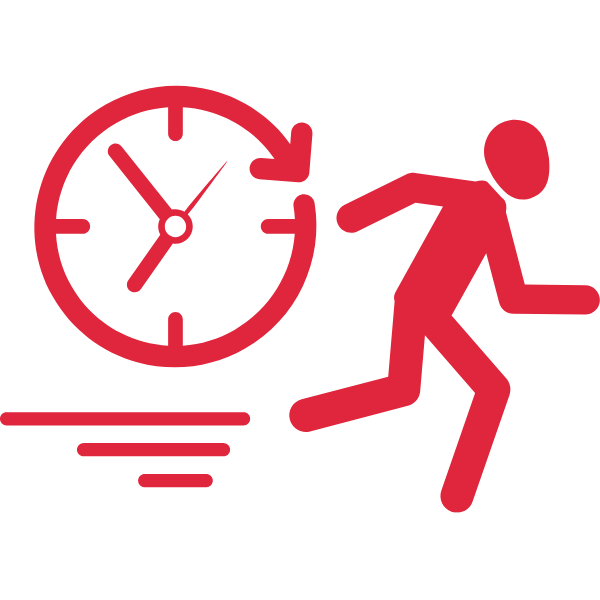</span>
			</div>
			</div><div class="et_pb_column et_pb_column_1_2 et_pb_column_30  et_pb_css_mix_blend_mode_passthrough et-last-child">
				
				
				
				
				<div class="et_pb_module et_pb_text et_pb_text_121  et_pb_text_align_left et_pb_bg_layout_light">
				
				
				
				
				<div class="et_pb_text_inner"><h5><em></em></h5>
<h5><em></em></h5>
<h5><em></em></h5>
<p><em></em></p>
<h5><em>„…noha a Scrumot eredetileg szoftverfejlesztési projektekhez dolgozták ki, de bármilyen összetett, innovatív tevékenység esetén jól működik. A lehetőségek végtelenek. A Scrum kerete becsapóan egyszerű.“</em></h5></div>
			</div>
			</div>
				
				
				
				
			</div><div class="et_pb_row et_pb_row_25">
				<div class="et_pb_column et_pb_column_4_4 et_pb_column_31  et_pb_css_mix_blend_mode_passthrough et-last-child">
				
				
				
				
				<div class="et_pb_module et_pb_text et_pb_text_122  et_pb_text_align_left et_pb_bg_layout_light">
				
				
				
				
				<div class="et_pb_text_inner"><p>Talán nem is tudták még akkor, hogy mennyire igazuk lesz. A rendszer tehát mondhatni pofon egyszerű is lehetne, azonban ez így nem teljesen állja meg a helyét. Igaz azonban, hogy viszonylag kis befektetéssel, tanulással, rövid időn belül óriási eredményeket lehet elérni ma már számtalan ágazatban, vagy épp szakterületen – na persze amennyiben megvan a rendszer adaptálásához a megfelelő szaktudásunk. Ha maradunk a sport példájánál, talán érthetőbb, miért indítunk pl. úgynevezett sprinteket a folyamat során. Ugyanis a klasszikus fejlődési folyamatok ma már inkább váltófutáshoz hasonlíthatóak. Minden futó alapvetően magára számíthat, mikor ő van a pályán, és majd csak akkor adja át a váltóbotot a társának, amikor a saját, előre meghatározott céljához ért. Nade, nézzük is meg közelebbről a felelősségi köröket és a szerepeket, és aztán fordítsuk le mindezt érthető nyelvezetre a hétköznapi munkafolyamatok tekintetében.</p></div>
			</div><div class="et_pb_module et_pb_text et_pb_text_123  et_pb_text_align_left et_pb_bg_layout_light">
				
				
				
				
				<div class="et_pb_text_inner"><h3><strong>DOLGOZZUNK SCRUM CSAPATBAN – SZEREPEK ÉS FELELŐSSÉGI KÖRÖK, NAMEG A HOZADÉKUK…</strong></h3>
<p>A scrum középpontjában komplex problémák megoldására alkalmas kreatív és adaptív csapatmódszerek állnak. Ez önmagában azt jelenti, hogy a scrum egyre inkább elterjedtebb a legkülönbözőbb területeken és funkciókban, egészen a topmenedzsmentig. Persze különféleképpen alkalmazzák ezen technikákat az egyes iparágakban – erre majd még egy későbbi cikkünkben visszatérünk.</p>
<p>A lényeg, amelyek több agilis módszerben közösek, hogy olyan gondolkodásmódot kell kialakítani, amely személyes felelősségvállalásra épül, ügyfélfókuszú és multidiszciplináris csapatban is alkalmazható. Mindez új értékeket, alapelveket és eljárásokat tesz szükségessé.</p>
<p>Az egyes személyek többféle, eltérő szerepükből adódó konfliktusok alapvetően nem kerülendőek – de érdemes lehet külsős coach vagy mediátor bevonása, mert vélhetően a jövőbeni együttműködést mélyebb elakadások korlátozhatják – sok esetben mérhető károkat okozván. Ugyanakkor igaz, hogy mindezt egy megfelelően képzett Scrum master (lásd lejjebb a konkrét feladat és hatáskört) ki tudja váltani, ezzel is biztosítva a belső szabályokra vonatkozó állandóságot, következetességet, és egyfajta független látásmódot.</p>
<p>Amikor egy társaság úgy dönt, hogy szeretné bevezetni az agilis munkamódszert, és ehhez scrum keretrendszert választ, valószínűleg különböző bizonytalanságokkal és félelmekkel szembesül majd HR és üzleti oldalról. Vajon képes lesz a szervezet alkalmazkodni a változásokhoz? Vajon azok a vezetők vannak-e tényleges döntéshozói pozícióban, akiknek birtokában van az a tudás, amelynek köszönhetően tudják majd kivitelezni az egyes projekteket, folyamatokat, amire tulajdonképpen szerződött a vállalat?</p>
<p>Sok vezető ragaszkodik a pozíciójához, és tart hatalma elvesztésétől, hiszen leadnak felelősségükből, és el kell engedniük bizonyos dolgokat – kérdés, hogy a valódi lehetőségüknek és a vezetői akaratuknak mennyire adódik tényleges metszete a korábban kitűzött célokra való tekintettel, és mindehhez hogyan idomul a scrum nyújtotta keretrendszer. Emiatt is olyan fontos a projektben résztvevők folyamatba történő mindennapos bevonása, integrálása, valamint az egyes szereplők felhatalmazása és kísérése. Mindehhez elengedhetetlen a stabil személyiség, a fejlődésfókuszú gondolkodásmód és az önreflexiós készség – lásd később a retrospektív megbeszélések.</p></div>
			</div><div class="et_pb_module et_pb_text et_pb_text_124  et_pb_text_align_left et_pb_bg_layout_light">
				
				
				
				
				<div class="et_pb_text_inner"><h3><strong>Nade vágjunk a közepébe, nézzük a szerepköröket, amelyek világos szerepfelosztásokon alapulnak</strong></h3>
<ul>
<li>
<h4><strong>Termékgazda – PO</strong> (Product owner) – <strong>a vízionáló</strong><strong></strong></h4>
</li>
</ul>
<p>A „végtermékért” felelős (legyen az kézzelfogható termék, szolgáltatás, vagy valami ennél is nagyobb stratégiai szabályozás) → ő lesz a vízióért felelős (product backlog – a leszállítandó teendőlistájának meghatározásának embere).</p>
<p><span>→ Ez a személy fogja átlátni, hogy pontosan mit fog leszállítani a csapat, ő tudja lefektetni a prioritásokat, ráadásul a megrendelővel és a résztvevő stakeholderekkel is ő tartja a kapcsolatot.</span></p></div>
			</div><div id="id-scrummaster" class="et_pb_module et_pb_text et_pb_text_125  et_pb_text_align_left et_pb_bg_layout_light">
				
				
				
				
				<div class="et_pb_text_inner"><ul>
<li>
<h4><strong>Scrum master</strong> (ceremónia mester) –<strong> a változásügynök</strong></h4>
</li>
</ul>
<p><strong></strong>Válasszunk ki valakit, aki fel tudja készíteni a csapatot, és segít a teljes folyamat (sprintek alatt) a gyorsaság és hatékonyság útjában álló akadályok leküzdésében.</p>
<p>A produktivitásért felel <span>→</span> laterális (szinten belüli, oldalirányú) vezetés: tréner, facilitator, coach.</p>
<h4></h4></div>
			</div><div class="et_pb_module et_pb_text et_pb_text_126  et_pb_text_align_left et_pb_bg_layout_light">
				
				
				
				
				<div class="et_pb_text_inner"><p>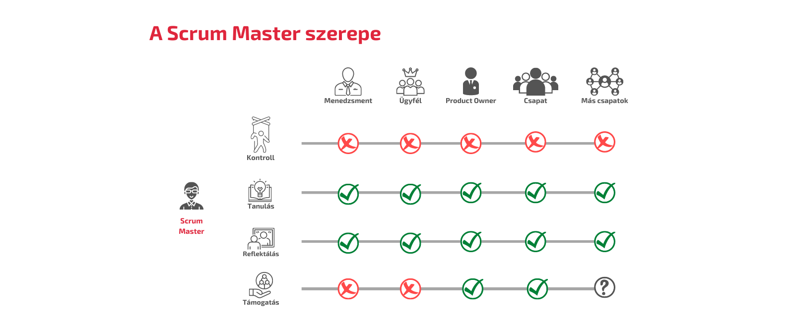</p></div>
			</div><div class="et_pb_module et_pb_text et_pb_text_127  et_pb_text_align_left et_pb_bg_layout_light">
				
				
				
				
				<div class="et_pb_text_inner"><ul>
<li>
<h4><strong>A csapat</strong> (meghatározott létszámmal) –<strong> a szállítók</strong></h4>
</li>
</ul>
<p><span>A teljes szállításért felelnek, beleértve a minőségbiztosítást is →</span> autonóm és csapatban történő munkavégzés jellemzi a tevékenységüket, amely keresztfunkcionális és adott esetben felhasználóközeli.</p>
<p><span>→ </span>Vegyünk egy kis csapatot (3-9 ember), amely megfelelő keresztfunkcionális készségekkel rendelkezik, hogy az elképzelésből használható kimenet legyen.</p></div>
			</div><div class="et_pb_module et_pb_text et_pb_text_128  et_pb_text_align_left et_pb_bg_layout_light">
				
				
				
				
				<div class="et_pb_text_inner"><ul>
<li>
<h4>Ügyfél (megrendelő) – a finanszírozó</h4>
</li>
</ul>
<p>Általában ő felel a büdzséért <span style="font-size: 16px; font-family: 'Open Sans', Arial, sans-serif; font-weight: 500;">→</span><span style="font-size: 16px; font-family: 'Open Sans', Arial, sans-serif; font-weight: 500;"> követelőző lehet érthető üzleti okokból, de ha belső folyamatokról van szó, ez a szerepkör tartozhat az ügyvezetőhöz is (azaz a nagyfőnökhöz), mindenképp elsőbbséget élvez, tekintve hogy az egész folyamat gyökere, a fejlesztés létjogosultsága hozzá, hozzájuk köthető.</span></p></div>
			</div><div class="et_pb_module et_pb_text et_pb_text_129  et_pb_text_align_left et_pb_bg_layout_light">
				
				
				
				
				<div class="et_pb_text_inner"><ul>
<li>
<h4><strong>A felhasználó</strong> (User) – <strong>a haszonélvező</strong></h4>
</li>
</ul>
<p>A folyamat során a visszajelzésért felelős <span>→</span> kulcskérdés az együttműködés és a folyamatos információáramlás biztosítása, hiszen a végcél az ő elégedettségének elérése (legyen az külsős megrendelő, vagy belsős szakterület).</p></div>
			</div><div class="et_pb_module et_pb_text et_pb_text_130  et_pb_text_align_left et_pb_bg_layout_light">
				
				
				
				
				<div class="et_pb_text_inner"><h3><strong>Scrum események – Mert a tervezettek megvalósítását ünnepelni jó, de legtöbbször azért újra kell tervezni…</strong></h3>
<p>A ceremóniák fontosak a hétköznapokban is, és ezek a scrumban is fontos elemnek számítanak. Nem kell semmi ördögtől valóra gondolni, praktikusan inkább azt mondanám, ez egy formális lehetőség a munkaanyagok felülvizsgálatára, a folyamat során felismert szükséges korrekciók elvégzésére. További fontos jellemzőjük, hogy rendszeresek, ütemezettek (ezen felül megbeszéléseket csak akkor szervezzünk, ha nagyon kell), s ugyanakkor vannak, lehetőleg ugyanott.</p>
<p>Vegyük át őket részletesen:</p></div>
			</div><div class="et_pb_module et_pb_text et_pb_text_131  et_pb_text_align_left et_pb_bg_layout_light">
				
				
				
				
				<div class="et_pb_text_inner"><ul>
<li>
<h4>Sprint</h4>
</li>
</ul>
<p>Tulajdonképpen ez maga a scrum szíve-lelke, központi fogaskereke. A sprintek alatt lesz az ötletekből érték, amelyet értékesíteni lehet majd a jövőben, de minimum profitálni lehet belőle már a közeljövőben. Időtartama maximum 1 hónap, de a lényeg, hogy mindenképp legyen egyfajta ritmusa a folyamatnak, azok időintervalluma pedig legyen rögzítve. Ezáltal biztosítva lesz a csapat munkájának, valamint az ügyféllel való együttműködésnek az üteme – amely kulcsfontosságú a scrum elsajátításának szempontjából.</p></div>
			</div><div class="et_pb_module et_pb_text et_pb_text_132  et_pb_text_align_left et_pb_bg_layout_light">
				
				
				
				
				<div class="et_pb_text_inner"><p></p></div>
			</div><div class="et_pb_module et_pb_text et_pb_text_133  et_pb_text_align_left et_pb_bg_layout_light">
				
				
				
				
				<div class="et_pb_text_inner"><ul>
<li>
<h4>Sprint planning</h4>
</li>
</ul>
<p>A csapat találkozik a product ownerrel, hogy megtervezzék a fentebb említett sprint részleteit, kivitelezését. A csapat saját gyorsaságát és teljesítőképességét valójában a közelmúltbeli események adta eredményeire alapozza, azok alapján számolja ki, jósólja meg kezdetben, ha úgy tetszik. A későbbiekben pedig már az előző sprintek teljesítménye fogja meghatározni, hogy hány feladatot képesek elvégezni a következő sprintek során. A csapat egyébként a sprint alatt önállóan dolgozik annak érdekében, hogy a célt elérjék, de közben végig szem előtt tartják, hogy sprintenként konkrét leszállítandók készüljenek el, amik az ügyfélnek átadhatók.</p></div>
			</div><div class="et_pb_module et_pb_text et_pb_text_134  et_pb_text_align_left et_pb_bg_layout_light">
				
				
				
				
				<div class="et_pb_text_inner"><p>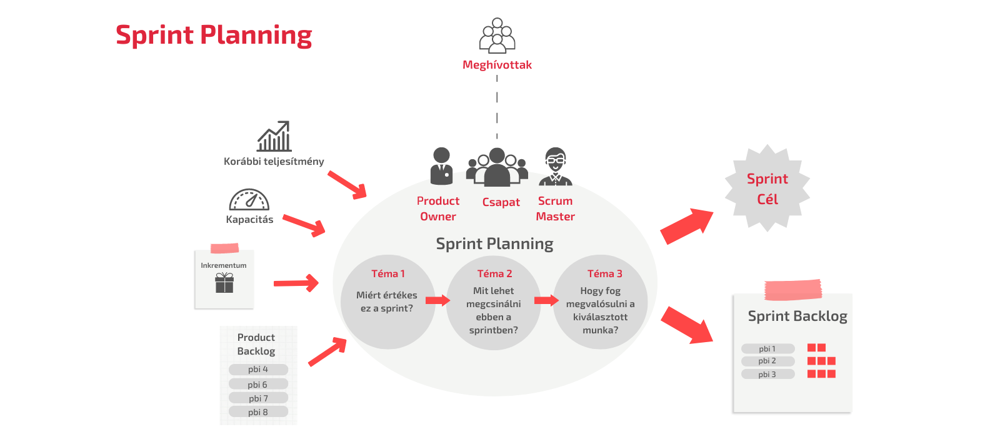</p></div>
			</div><div class="et_pb_module et_pb_text et_pb_text_135  et_pb_text_align_left et_pb_bg_layout_light">
				
				
				
				
				<div class="et_pb_text_inner"><ul>
<li>
<h4>daily Stand-up</h4>
</li>
</ul>
<p>Azaz a napi egyeztetés. Mindennap ugyanabban az időben, legfeljebb 15 percben megvizsgálják, hogy teljesíthető-e a sprint cél, s azokat egyszerű kérdésekkel segítik, valamint szükség esetén újraterveznek annak érdekében, hogy a sprint célját a csapat el tudja érni.</p></div>
			</div><div class="et_pb_module et_pb_text et_pb_text_136  et_pb_text_align_left et_pb_bg_layout_light">
				
				
				
				
				<div class="et_pb_text_inner"><p>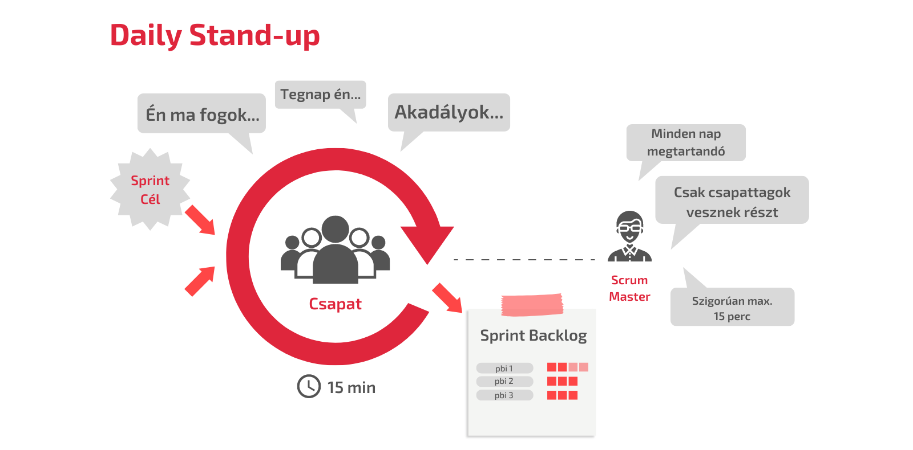</p></div>
			</div><div class="et_pb_module et_pb_text et_pb_text_137  et_pb_text_align_left et_pb_bg_layout_light">
				
				
				
				
				<div class="et_pb_text_inner"><ul>
<li>
<h4>sprint review</h4>
</li>
</ul>
<p>Ez a sprint felülvizsgálata, egy olyan értekezlet, amely során <span>a scrum csapat bemutatja munkájának eredményeit a kulcsfontosságú érdekelteknek (product owner mindenképp jelen van), és megvitatják a termékcél felé tett előrelépést.</span></p>
<p>Ez egy mindenki számára nyitott fórum, és csak arról beszélnek a csapattagok, hogy mi az, amit késznek tekintenek, mi az ami már elvégzett feladatnak minősül.</p></div>
			</div><div class="et_pb_module et_pb_text et_pb_text_138  et_pb_text_align_left et_pb_bg_layout_light">
				
				
				
				
				<div class="et_pb_text_inner"><p>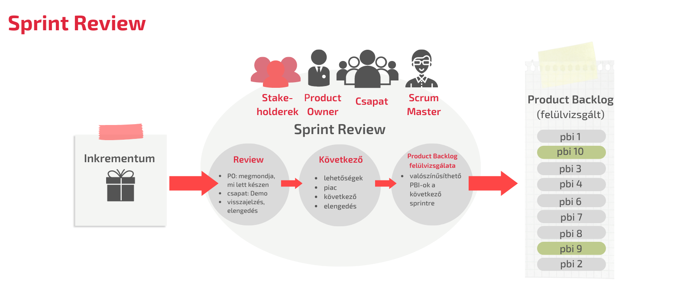</p></div>
			</div><div id="id-retrospective" class="et_pb_module et_pb_text et_pb_text_139  et_pb_text_align_left et_pb_bg_layout_light">
				
				
				
				
				<div class="et_pb_text_inner"><ul>
<li>
<h4>sprint retrospective</h4>
</li>
</ul>
<p>Ez egyfajta visszatekintés. A felülvizsgálatot követően a csapat leül egy hosszabb megbeszélésre, és áttekinti, mi ment jól, mi mehetett volna jobban, és min lehet egészen konkrétan javítani, hogy a következő sprint az előzőnél is sikeresebb, hatékonyabb legyen. Ehhez azonban fontos, hogy a megbeszélés őszinte legyen, és minden résztvevő releváns visszacsatolást adjon a munkájáról. Majd a csapat megegyezik a javítás mikéntjéről, kijelölnek egy (vagy több) javítandót, amelyet a következő sprint során végrehajtanak, és amely prioritást fog élvezni a fejlesztés produktivitásának szempontjából.</p></div>
			</div><div class="et_pb_module et_pb_text et_pb_text_140  et_pb_text_align_left et_pb_bg_layout_light">
				
				
				
				
				<div class="et_pb_text_inner"><p>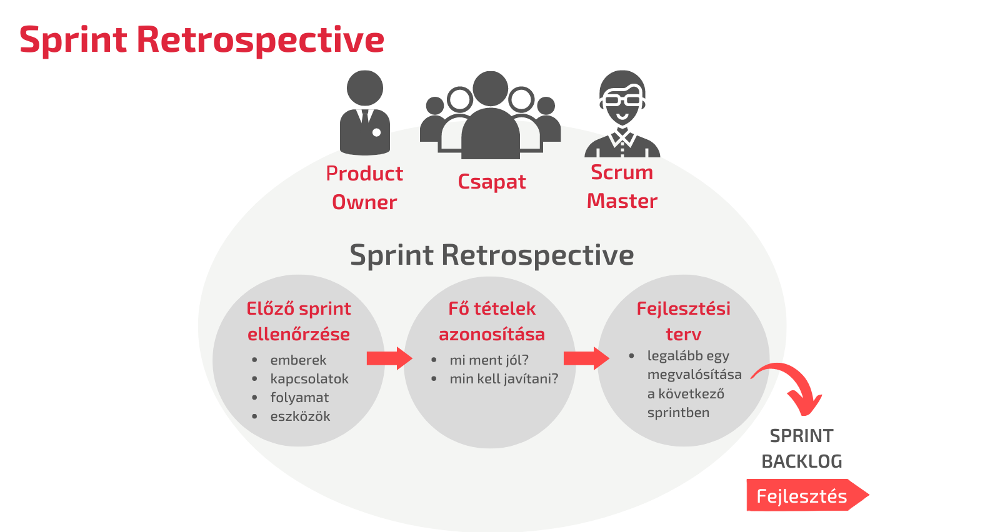</p></div>
			</div><div class="et_pb_module et_pb_text et_pb_text_141  et_pb_text_align_left et_pb_bg_layout_light">
				
				
				
				
				<div class="et_pb_text_inner"><h3><strong>A Scrum Alapelvekről és értékekről röviden – Szabályok mellett!</strong></h3>
<p>Maradva a sport által szolgáltatott példáknál. A szabályok minden sportág esetében alapvetésnek minősülnek, azok mindenki számára kötelező érvényűek, és bonyolult helyzetekben is biztonságot jelentenek. Nincs ez másként a scrum keretrendszerben sem, azonban nem csak a  szabályokra, hanem alapelvekre is épül – nagyobb szabadságot biztosítva ezáltal a kreatív kognitív gondolkodásnak. A scrum esetében viszont inkább arról beszélhetünk, hogy minden egyes alapelv (bátorság, fókusz, nyitottság, elkötelezettség, tisztelet) biztonságot nyújt, komplex, összetett fejlesztési elakadások feloldását teszi lehetővé. Specialitása, hogy nemcsak ismert, de egyúttal váratlan helyzeteket teremtő problémák megoldásában is segít, útmutatást ad, gondolkodásra ösztönöz.</p></div>
			</div><div class="et_pb_module et_pb_text et_pb_text_142  et_pb_text_align_left et_pb_bg_layout_light">
				
				
				
				
				<div class="et_pb_text_inner"><p>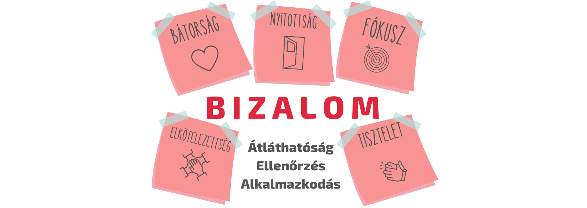</p></div>
			</div><div class="et_pb_module et_pb_text et_pb_text_143  et_pb_text_align_left et_pb_bg_layout_light">
				
				
				
				
				<div class="et_pb_text_inner"><p>Manapság még mindig inkább az a jellemző a hagyományos módszerekkel dolgozó vállalatoknál, hogy funkcionális egységekben gondolkodik a vezetés. Ez általában lassítja a munkavégzést, felesleges és számtalan megbeszéléseket indukál, a vezetők gyakran motiválatlanok, a munkatársaknak pedig nincs nagyobb rálátása a folyamatokra, mindenki csak a saját terültét látja – ezáltal a kockázatok nőnek, a hatékonyság csökken. Emiatt is fontos, hogy legyen keretrendszer, amely világos és egyértelmű struktúrával segíti a kollégák szabad, ám meghatározott mozgásterét.</p>
<p>Mindennek ellenére, még egy funkcionális csoporton belül is érdemes lehet a scrum adaptációja, mert transzparenssé teszi a feladatokat illetve a haladást. Lehetőséget biztosít továbbá a vezető általi mikromenedzselés helyett a beosztottak nagyobb önállóságának – építve ezáltal a kreativitást és a motivációt, csökkentve egyúttal a felelősségmegvonásból fakadó fluktuációt.</p>
<p>Érdemes tehát átgondolni a következőket:</p>
<ul>
<li>Adminisztráció <strong>vs</strong> keretfeltételek és alapelvek</li>
<li>Hosszú és értelmetlen megbeszélések <strong>vs</strong> vezetett együttgondolkodás</li>
<li>Nagy és bürokratikus részlegek <strong>vs</strong> önszerveződő csapatok</li>
<li>Bonyolult, érthetetlen <strong>vs</strong> egyszerű, kevesebb lépésből álló döntési folyamat</li>
<li>Centralizált tudás <strong>vs</strong> tudásmegosztás, információáramoltatás</li>
<li>Átláthatatlanság <strong>vs</strong> transzparencia</li>
<li>Hibáztatás <strong>vs</strong> egészséges “hibakultúra”</li>
<li>A kudarcok figyelmen kívül hagyása <strong>vs</strong> állandó visszatekintés</li>
</ul>
<p>A scrum alapvetően tehát egyetlen csapat működését támogatja. Szervezeti működés esetén több csapat összehangolása, a skálázott agilitás megvalósítása minden cégnél egyedi megközelítést igényel.</p>
<p>A sport példájával zárva – egy csapatot lehetséges egy idényre jól összepakolni, amennyiben van megfelelő edző, azonban bejutni a Bajnokok Ligájába, és ott több éven keresztül is potenciális esélyekkel labdába rúgni, már sokkal inkább múlik a csapatmunkán.</p>
<p><strong><em>Amennyiben szeretnéd saját szervezetedben adaptálni a SCRUM-ot (legyen az IT vagy nem IT szervezet), <a href="../kapcsolat/" target="_blank" rel="noopener">keress meg minket</a> bátran!</em></strong></p></div>
			</div>
			</div>
				
				
				
				
			</div>
				
				
			</div><p>The post <a href="../scrum-keretrendszer-minden-amit-tudni-akartal-rola/">SCRUM keretrendszer: Minden, amit tudni akartál róla</a> first appeared on <a href="https://agiluu.hu">AGILUU</a>.</p>]]></content:encoded>
					
		
		
			</item>
	</channel>
</rss>
